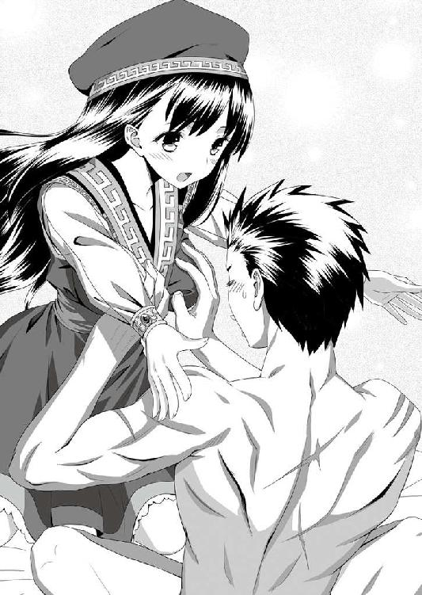

| 俺とカーンの賢者タイム（スワップトリップ） (桜ノ杜ぶんこ) | |
| おかず | |
| (2015) | |
桜ノ杜ぶんこ
俺とカーンの賢者タイム
おかず
★この物語はフィクションであり、一部を除いて登場する団体・人物などの名称はすべて架空のものです。
プロローグ
蒼原草馬は、一六〇〇万分の一の高校生である。
このもの凄い低確率を引き当てたと言うか、ぶち当たってしまったと言うか、とにかくそういう星の下に生まれた男なのである。
一六〇〇万分の一。
口で言うのは簡単だが、これは果たしてどういう数字なのか？
たとえば、草馬がサッカー選手を志していたとする。日本代表で活躍し、海外のビッグクラブの目に止まり、世界最高峰のサッカーリーグのピッチでレギュラーとして戦い、優勝することを夢見ているとする。
国際的なサッカー連盟が公式ウェブサイトに掲載している世界各国のサッカー競技人口を合計すると、ざっと三億人以上になるようだ。
そのうち、先に挙げたリーグに出場できるのは、大体一〇クラブ前後。当然、優勝できるのは一クラブのみ。
かなり乱暴ながら、単純に数字だけで見れば、草馬がそのリーグの優勝イレブンに選ばれる確率というのは、およそ二七〇〇万分の一ということになる。
が、幸か不幸か草馬はサッカー少年ではない。
体育の授業では、まあお荷物扱いされない程度の運動能力は有しているが、とても世界に打って出られるような才能の持ち主とは言えない。
別のたとえで考えてみよう。
草馬がビジネスマンになり、世界中の経済を牽引してやろうという野望を抱いていたとする。一年のほとんどは外国暮らしで、仕事の準備は基本的に移動する旅客機の中だ。
その旅客機が、何らかの理由で墜落事故を起こす可能性というのは、ある調査によると一七〇〇万分の一ぐらいの確率らしい。
これは、一日一〇時間、毎日飛行機に乗ったとしても、墜落事故に巻き込まれる可能性は四〇〇年に一度あるかないかという確率である。
少なくとも、草馬がビッグビジネスをいくつもものにして財を成した後に寿命で死ぬまでの間、ほぼ起こり得ないということだ。
が、残念ながらと言うべきか、草馬が墜落のリスクに怯えることなく毎日快適なフライトをしながらビジネスの構想を練る日は来るまい。
なぜなら草馬は、家族や友人に強く誘われれば付き合いのひとつとして旅行ぐらいは行くが、基本的には出不精で面倒くさがりのインドア主義者だからだ。
毎日忙しく外を飛び回るぐらいなら、エアコンの効いた自室でできるような仕事を選びたいという思考の持ち主なのだった。
そんなスポーツにも世界のビジネスにも縁遠い草馬が夢想することと言えば、たまたま学校帰りに購入した宝くじで一等を当てて、欲しい物を手当たり次第に買ってみたいだとか、まぁその辺の誰でも一度は考えそうなことが精々である。
ちなみに、年末になると売り出される宝くじで一等賞金が当たる確率というのは、およそ一〇〇〇万分の一と言われている。
まぁぶっちゃけ、当たりっこない。
そう、宝くじは当たらないし、飛行機も落ちない。世界最高のサッカー選手にもなれないのだ。普通は。
しかし、現実にトッププレーヤーとして数十億円の年俸を稼ぐスター選手は実在するし、年に一度くらいは世界のどこかで起きた飛行機事故のニュースも目にする。
宝くじの発売時期になれば、過去に一等を当てたことのあるラッキーマンに、ワイドショーのレポーターがありもしない必勝法を聞きに行ったりしている。
だから、蒼原草馬が、世界中に今も一六〇〇万人ほどいると言われているチンギス・カーンの子孫たちの中から、偶然にもたった一人選ばれるということは、あり得ないことではないのである。
......さらっと重要なことを流してしまった。
改めて説明しよう。
蒼原草馬は、日本の高校に通う健全な男子高校生である。
と同時に遠い昔、当時認識されていた〝世界〟のほとんどを手中に収めた偉大なる覇者、チンギス・カーンの子孫でもある。
オルドと呼ばれる移動式の巨大後宮を四つも所有し、それぞれの後宮を管轄する四人の皇后と、広大な版図から集められた膨大な数の寵姫たちにかしづかれた稀代の帝王が生前に残した子供の数は、数百人とも一〇〇〇人以上とも言われている。
その一〇〇〇人の子供たちが、また子を成して係累を繋ぎ、その子供がまた帝王の遺伝子を世界中に拡散し......積もり積もったその数、一六〇〇万人。
草馬は、その中の一人なのである。
だが、彼はまだ知らない。
自分が、大いなる運命に選ばれてしまったことはおろか、偉大なる帝王の遺伝子を受け継ぐ存在であることすらも。
そんな草馬の意識は今、現代日本を離れ、先祖が巨大な帝国を作り上げた時代よりも更に昔の古代ヨーロッパにあった。
世界の未来を、その手の中に握って。
運命の賢者タイム
１
「......もはや、俺が征服する世界はなくなってしまった」
誰に言うとでもなく、暗い部屋の中で草馬はつぶやいた。
部屋の中で今、光源と呼べるものは目の前にある大型液晶モニターのみ。
ネット通販ではこれという品が見つからず、わざわざ電車で一時間半以上もかけて秋葉原の専門店に足を運んで購入した、今時珍しいノングレアタイプの一品である。
現在主流になっている光沢タイプの液晶は、長い間見続けていると目が疲れる。
長時間のゲームプレイにおいては、ノングレアタイプに限るというのが、草馬の持論だった。
しかも、ただノングレアであればいいというものではない。
サイズは最低でも２７インチ以上でフルＨＤ以上の解像度は必須。より高い解像度の物があるなら、当然そちらの方が望ましい。
画面をできる限り広く使い、俯瞰的に全体の戦局を見渡すためだ。
そんなこんなで拘ったこのモデル。
去年の冬休み二週間をすべて使って稼いだバイト代の許す範囲内で最高の物を買ったという自信がある。
この素晴らしいモニターと、父親が勤務先から格安で譲り受けてきたハイスペックＰＣでプレイするゲームは、どんな素晴らしい体験になることか。
考え得るベストの環境を整え終えた草馬の心は躍った。
しかし、である。
この高級モニターもハイスペックＰＣも、今日この瞬間から宝の持ち腐れになってしまう可能性がすこぶる高かった。
「......ああ、終わる......。終わっちまう......」
両手でモニターの両端を握りしめ、草馬は身を乗り出した。
モニターの中には、ついさっきまでプレイしていたゲームのハイライトシーンとともに、外国人名の並ぶスタッフクレジットが表示されている。
古代ローマ時代をモチーフにした戦略シミュレーションゲーム。その名も『栄光のローマＶ』という。
その当時に生きていた様々な民族や集団から自分が繁栄させたいグループを選び、リアルタイムで刻々と変化していく膨大なデータと情勢とを見極めながら指示を出し、自陣営で世界を統一することができればゲームクリアとなる。
東欧の独立系デベロッパーが開発したこのゲーム、近年のゲームシーンでは珍しくなったプレイヤーに真っ向から挑戦してくるタイプの作品で、そのシビアな難易度が海外のフォーラムで度々話題に上っているという代物であった。
このゲームの存在を知ったとき、草馬は文字どおり小躍りしながら海外のダウンロード購入サービスで英語版を購入したのである。
このゲームならば、少なくとも数ヶ月は攻略までの時間を楽しめると信じて。
基本的に安価なのが売りのダウンロード販売にもかかわらず、日本円にして一万円オーバーという強気なプライスも、むしろ草馬の期待感に拍車をかけた。
が、結論から言ってその希望は叶わなかった。
海外マニアもお墨付きのこの〝激ムズ〟ゲームを、草馬はものの一週間で完全攻略してしまったのだ。たった今。それも、ゲーム中ではずば抜けて初期難易度が高いと言われている最弱勢力を選択して。
はっきり言って、草馬の感覚から言えば見かけ倒しもいいところであった。
草馬の目の前でスタッフクレジットが流れ終わり、画面は自動的にゲームのタイトル画面へと戻った。
終わった。
完全に終わった。
草馬は、確信と共に絶望した。期待値が高かった分、絶望も深かった。
それが、先の独白に繋がっていく。
──もはや、俺が征服する世界はなくなってしまった──
シミュレーションゲームが、好きだった。
初めてシミュレーションゲームに出会ったのは、草馬がまだ小学五年生の時だった。
父親のＰＣにインストールされていた第二次世界大戦モチーフの戦術ゲームが、初めて草馬がクリアしたシミュレーションゲームだった。
最初は、かっこいい兵器の画像を眺めるのがメインで、攻略そのものは二の次ぐらいだったのだが、ある時、仕事が休みだった父親とそのゲームで対戦する機会があった。
大人対子供の戦いだ。
もちろん、負けた。こてんぱんに負けた。
ただ、その負け方が草馬を開眼させた。
美しいと思ってしまったのである。父の戦いぶりを。
小学生の子供相手に一切の手加減なし。持てる力のすべてを注いで（少なくとも、当時の草馬にはそう思えた）、「大人げってなぁどこの毛だ？」という勢いで草馬の軍勢を蹂躙し尽くす父の戦術。
自らの補給線は万全に整え、草馬のそれは徹底的に潰す。
何ターンも先の戦況を読んで、その時に必要な部隊をあらかじめ配しておく。
派手な陽動で草馬の目を惹き付け、隙を突いて少数精鋭をもって一気に本命を衝く。
どれほどハンデをつけてもらっても、一度として草馬は勝てなかった。
悔しかったが、それ以上に父が初めて草馬にもらたした『戦術』という概念に惚れ込んでしまった。
魅せられた、と言ってもいい。
以来、草馬の人生はシミュレーションゲームと共にあった。
近現代、戦国時代、三国志の世界、異世界ファンタジー、未来ＳＦ。
陸戦、海戦、空戦、宇宙空間......目に止まったありとあらゆるシミュレーションゲームをしゃぶり尽くすようにプレイし、研究するのが、草馬にとって至福の時間となった。
結果、
「終わったわ......マジで」
繰り返すが、終わってしまったのである。
少なくとも今現在において、この世に存在する戦略・戦術シミュレーションゲームで、草馬を満足させてくれる作品は存在しなくなってしまったのだった。
「......まぁ、面白かったけど......。それとこれとは別の話でさぁ......」
うつろな瞳でぶつぶつとつぶやき続けながら、草馬はモニターから手を離し、マウスをクリックした。
タイトル画面が、自分の勢力を選択する画面に切り替わる。
と、草馬が選んだ最弱勢力の名前の横に、その勢力でゲームクリアしたことを示す勲章のようなマークが表示されていた。
「大見得切っちゃったし、一応ね......」
続けて、画面のスクリーンショットを撮る。ゲームと一緒に起動していたブラウザから海外フォーラムにアクセスし、撮った画像をぺたりと。
「ほら、クリアしましたよ......と」
和訳のついていない海外製のゲームをプレイするためだけに、ほどほど勉強した英語で一言添えて送信。
自室の向かいにあるトイレで用を足してから再び画面の前に戻ると、草馬が立てたスレッドには、
「信じられない！（カナダ）」
「なんてことだ......。ハンニバルの再来か（イタリア）」
「神を見た。今日から俺は信仰を変える（アメリカ）」
「どこかの参謀本部からスカウトが来るレベル！（クロアチア）」
「今度日本に旅行へ行くから、ぜひ一杯奢らせてほしい！（台湾）」
などなど、草馬の成し遂げた〝偉業〟に対する世界中のユーザーからの驚愕と賛辞のコメントが山のようについており、なお止まるところを知らない状況になっていた。
嘘か真か、中にはこのゲームの開発者を名乗る人物からの、
「君を我が社のスタッフに加えたい」
という書き込みまであり、大いにスレッドは盛り上がっている。
が、それでも草馬の心が晴れることはなかった。
大勢の人間に自分のやったことを認めてもらえば、少しはこの絶望にも光が差すかと思ったが、むしろスレッドが盛り上がれば盛り上がるほど、草馬の絶望はより深まっていく一方だった。
自分は、こんなにも多くの人を驚かせ、賞賛されるに値することを成し遂げた。それはつまり、裏を返せばこれ以上の偉業はもうそうそう無いということだ。
「虚しい......」
絶望感は、いつしか言いしれぬ虚無感に取って代わっていた。
誰がなんと言おうと、草馬は全身全霊を賭けてゲームに挑んでいた。
小学生の頃、父が自分相手にそうしたようにどんなゲームでも手を抜かず、培ってきた経験と機略とを余すところなく発揮して、幾多の〝世界〟を〝征服〟してきたのだ。
生き甲斐といって良かった。
それを失ったその日のうちに、では次の生き甲斐を......などと思えるほどのバイタリティはさすがに持ち合わせていない。
「俺は明日からどうやって生きていけばいいんだ......」
たかがゲームだろう？
中二病だ、やれやれ系だと笑わば笑え。
草馬は、ガチだった。
真剣に思い詰めた挙げ句の嘆き節が部屋に響く頃、ゆっくりと東の空が白み始めた。
カーテンを閉めていなかった部屋の中に鮮やかな朝日が差し込んでくる。
その憎たらしいほどの鮮やかさが、逆に退屈で色を失った日々の始まりを予感させた。
草馬は、泣いた。
２
「草馬、起きて！ 朝ご飯冷めちゃう！」
絶望の朝は、続く。
涙に暮れながら机に突っ伏し、そのまま眠ってしまった草馬の意識を引き戻したのは、階下から聞こえてくる弓奈の声だった。
うっと小さくうめいて頭を持ち上げる。
モニターにもＰＣにも電源が入ったままだった。画面隅の時計に目をやると、時刻は朝の七時。ざっと三時間ばかり眠っていたようだ。
モニターには相変わらず、草馬が立てたスレッドが表示されている。
オートリロード設定になっているそれは相も変わらず賑わっており、草馬への賞賛やゲームの攻略方法についての質問から、「チートだ！」「不正だ！」「加工画像だ！」と鼻息荒く罵倒する書き込みまでがごちゃごちゃに踊り、収拾が付かなくなっていた。
（......どうでもいいよ、もう）
それらの夥しい書き込みを無感動に一瞥し、草馬はＰＣの電源を落とした。
今日からこのＰＣはインターネットに繋がっているだけのただの箱だ。
その辺の量販店で六〇％オフになっている型落ちメーカー品と同程度の存在だ。
そんなことを思いながら、光を失ったモニターをぼけっと眺めていると、
「草馬ってば！」
苛立ったような弓奈の声とともに、どたどたっと階段を駆け上がる音がして、勢いよく自室のドアが開け放たれた。
「......起きてるよ」
億劫な声で応じて、草馬はドアの方に顔を向けた。同時に、なぜか左手でステンレス製のお玉を振り上げている弓奈と目が合った。
「起きてるなら返事ぐらいしなさいよ」
半歩部屋に踏み込んできた弓奈が、眉をへの字に下げて言った。
お玉を握っていた手も、すとんと下に落ちる。
その勢いで、ポニーテールに結った栗色の髪が、文字どおり馬の尾のように揺れる。
「正確には、今起きた」
「ほっぺ、キーボードの跡がついてるよ。また徹夜でゲームしてたんでしょ」
空いている右手の指で、白磁のように滑らかな自分の頬をつついて弓奈が言った。
釣り目がちの瞳が、呆れ半分諦め半分に草馬を見つめている。
栗色の髪。すっきり整った顔立ち。
全体的に引き締まっているが、主張すべきところはきちっと主張する健康的なボディーライン。
間違いなく、草馬の目の前に立っている少女は桐緒弓奈本人だ。
弓奈は、端的に説明すると草馬の幼なじみというやつである。
家はお向かいさん。付き合いは家族ぐるみ。幼稚園の時から知っている。
中学の三年間だけ父親の仕事関係で弓奈は海外に行っていたのだが、高校はまたしても同じ学校。
しかも同級生。お互いに言いたいことを言い合える、気が置けない仲である。
が、そんな間柄でも弓奈は他人だ。
その弓奈がどうして高校の制服を着て、蒼原家の......自分の部屋にいるのだろう。
「とにかく、早く顔洗ってご飯食べて」
草馬がその疑問を発するより早く、弓奈はまるで指揮棒か軍配を振るうかのように勢いよくお玉を草馬に突きつけて言いつのるのであった。
そのお玉を指でつまんで顔の脇によけ、何度か瞬きを繰り返し、
「何で弓奈が俺の朝飯を？」
草馬は尋ねた。
「何でって......。朝ご飯は食べるでしょ」
「そうじゃなくて、俺の母ちゃんは？」
的外れな弓奈の返答に軽くずっこけつつ、重ねて聞く。
と、信じられないという面持ちになった弓奈が盛大なため息を漏らした。
「草馬のお婆ちゃんが具合悪いからお見舞いに行くって言ってたでしょうが。どうしてあたしが覚えてて、あんたが忘れてるのよ」
「そうだっけ？ 親父は？」
「一昨日からお仕事で出張！ 帰ってくるのは明日の午後！」
「......よく俺んちのこと知ってるなーお前」
ぼりぼりと頭を掻きつつ、草馬は記憶をたぐった。そう言えば、そんなことになっていたような気がする。
「しっかりしてよ～。おばさんいない間、あんたのご飯の世話したげるって言ったでしょ」
言われ、草馬は首をひねった。
その様子を見た弓奈が、いよいよ呆れ顔になる。
「脳みそ溶けてない？ 大丈夫？ 今日が何曜日かわかる？」
「お前な、俺を痴呆老人かなんかだと思ってるだろ？ ......ったく、日曜の朝っぱらから子犬みたいにきゃんきゃんうるさく吠えてくれるんじゃないよ」
「......月曜日よ」
もう一度放たれた弓奈のため息が、三割増しになっていた。
草馬の目が点になった。
「あ、それで制服？」
「んも～っ！ 何でもいいからご飯食べる！ 制服に着替える！ 学校行く準備する！」
これ以上は時間の無駄だとばかりに、弓奈がお玉で草馬の尻を叩くそぶりを見せて追い立てにかかる。
「そんな急がなくてもいいだろうよ......。まだ七時だぞ？」
汁気のついたお玉なんかでやられてはたまらんと、なだめる草馬であったが、
「あたしは草馬と違って部活の朝練があるの！ せっかく作ってあげたんだから、ぐだぐだ言わずにあったかいうちに食べて！」
一度勢いのついた弓奈は、そう簡単に収まらないのが常であった。
結局、草馬が寝間着にしていたジャージの尻には汁物の染みがつけられてしまった。
弓奈の作ってくれた朝食は、純和風の朝定食だった。
焼き鮭、目玉焼き、豆腐とわかめの味噌汁、香の物。そして、父親の郷里から定期的に送られてくる最高級コシヒカリの銀シャリ。
肝心の味の方はと言えば、まぁ可も無く不可も無しといったところ。
それでも、着替えて学校に行く最低限の気力だけは充填され、〝絶望の朝〟が〝憂鬱な朝〟ぐらいには緩和されただろうか。
その点に関しては、草馬は素直に礼を言った。
朝食後は、所属している空手部の朝練に行くという弓奈と連れ立って......と言うより半ば強制的に連行される形で徒歩一五分の場所にある県立高校へ。
偏差値でいえば中の中。進学率もそこそこ。不良と呼ばれるような人間もいないではないが、そこまで道を踏み外しているのもいない......。
良く言って、平凡。悪く言えば、面白味の無い高校だ。
だからと言うわけでもないが、せっかく弓奈お手製の朝定食でチャージしたなけなしの気力は、体育館に併設されている格技場へ向かう弓奈の背中を見送った頃には八割方消費され、草馬の所属する二年Ｂ組の教室に到着した時には完全に尽きていた。
無論、授業など上の空である。
その日の時間割がどうだったかすらろくに覚えていないような体たらくのまま、放課後を迎えた。
機械的に通学鞄を持ち上げた草馬は、その日何度目かもわからないため息をついてから教室を出た。
そのまま頼りない足取りで文化部の部室が集まっている部室棟へ向かい、とある部屋の入口を無言で開けて中へ。
「おー、来たか蒼原！」
と、からりと陽気な声が草馬の耳を打った。
その声で、はたと草馬は我に返った。きょろきょろと落ち着きなく周囲を見回し、
「あれ？ ここは？」
などと、間も気も完全に抜けきった声を出す。
「何言ってんだお前」
先ほどの声の主、中学校からの友人で今は隣のＣ組に在籍する北条直弘の姿が、目の前にあった。
「痴呆老人かお前は。ここが部室以外の何に見える？ 我らがゲーム研究部の活動拠点に決まってるだろうが」
その北条が、眉をひそめて草馬の顔をのぞき込んで言った。
「......ゲーム研究部」
北条の言葉をオウム返しにつぶやくと、草馬はぼんやりと室内を見渡した。
なるほど、北条の向こう側には確かに見慣れた部室の風景が広がっている。
一〇畳程度ある部屋の中央には机が六つひとまとめに集められており、部屋の入口側二つ以外にはやや古めかしいモニター一体型のＰＣが乗っかっている。
部屋にいるのは、草馬を含めて四人。
まず、声をかけてきた北条、次にふわっとしたショートカットと赤いフレームの眼鏡が目を引く女子生徒、二階堂綾。
もう一人、艶やかなロングヘアーを背中まで垂らし制服の上に薄手のカーディガンを羽織っているのは、北条の妹である依子だ。
綾は奥側右のＰＣ前、依子は一番手前左の席にそれぞれ座って、やはり何か変な物でも見るように草馬を見上げていた。
ようやく草馬の頭の中でポツポツと回路が繋がり始める。
草馬は、納得してひとつうなずいた。
まったくもって無意識の行動だった。
その日の授業が終われば鞄を持って教室を出る。そして、所属しているゲーム研究部に顔を出す。
どんなに心ここにあらずでも、毎日毎日繰り返している行動パターンに則って、草馬の体は自動的に動いていたのだった。
「......習慣っていうのは恐ろしいな、北条」
草馬は言った。
「蒼原、お前とうとうゲームのやりすぎでパーになったか？」
整髪料でツンツンになった頭の上で手を開いて振りながら、北条が哀れむような目を向けてくる。
「どうだろうな？ ......そうかもしれないな」
そんな北条に言い返す気力も無く、草馬はまたしてもため息。定位置になっている、綾の隣の席にすとんと腰を下ろした。
「アオやん、何かあったん？」
ＰＣに向かって何やら作業をしていた綾が、作業の手を止めて尋ねてきた。
「クリアしちまったんだよ、『栄光のローマＶ』......。それも、最弱の辺境属州で......」
「マ、マジで!? 資源ゼロ、人材ゼロ、所持金ゼロ。最低ランクの公衆浴場ひとつしか初期設備がないあそこで？」
草馬の返答に、眼鏡の奥にある切れ長の目を極限まで見開いた綾が、大げさにのけぞりながら甲高い声をあげた。
「いや、うち確かにアオやんは相当やるって思ってたけど......ほんとに？ うちがこんなんあるよって紹介したの、先週じゃなかった？」
「だから、一週間で......」
「あんびりばぼー」
なぜかブロークンな英語で心境を吐露し、綾はずり落ちかかった眼鏡に手を添えて激しく首を振った。
その様子を見ていた依子が、
「にぃに、そうちゃんのクリアしたゲーム、どのくらい難しいの？」
控えめと言うにも小さすぎる、ひっそりと囁くような声で言って、兄である北条の袖を引いた。
「お前が今からオリジナルイラスト本を作るとして......三二ページフルカラーを一週間で仕上げるよりも難しいだろうな」
問われた北条が、たとえ話で答える。
それを聞いた依子が、「ふわ......」という声とも息づかいともつかない音を口から発しつつ、まん丸に見開いた目で草馬を見る。
「......まぁ、そんなわけで今の俺は燃え尽き症候群なわけだ。あーもう、この世に楽しいことなんかなーんも無いんだ！」
北条のたとえ話は、はっきり言ってゲームの難易度を説明するには相当斜め上に外したものだったが、突っ込む気力もわかずに草馬は机に突っ伏した。
「おいおい、俺たちの部室に来てそれはないだろ蒼原。俺と綾ちん、先週の会議でお前が出した改善案、週末潰して実装したんだぜ？ 依子だって新グラ用意してるしよ、そこで肝心のお前が『楽しいことなんか無い』は、あんまりだわ」
北条が、草馬の首根っこを無理矢理引き起こして言った。
草馬の所属するゲーム研究部では今、部長の北条をディレクターとしてオリジナルのシミュレーションゲーム制作に挑んでいた。
中学生の頃から個人でスマホ用アプリを開発して小遣いを稼いでいたというエピソードを持つ綾が、プログラマー。
イラストレーター志望の依子が、美術部と掛け持ちでグラフィッカー。
草馬自身は、ゲーム制作そのものにそれほど興味があったわけではないのだが、並外れた知識と経験（シミュレーションゲームに限った話だが）を貸してくれるよう北条に頼み込まれ、テストプレーヤー兼デバッガーとして制作に参加している。
最初こそ頼まれ仕事での消極的な参加であったが、始めてみれば自分のアイディアが綾の手によって次々と実現していくのが面白く、〝丸描いてちょん〟というレベルのショボい仮グラフィックが、依子の手にかかって魔法のように美しいものに仕上がっていくのを見るのは純粋にワクワクした。
そんな経緯もあって、ようやくチームとしての一体感も出てきたこのタイミングでの草馬の『楽しいことなんかない』発言は、チームリーダーの北条としては看過できないのも当然だろう。
「悪かった。そんなつもりじゃないんだよ」
もっとも、草馬とてチームの和が乱れるような事態を望んでいるわけではない。
ばつ悪く頭を掻きながら素直に謝ると、
「へーきへーき。わかってるよアオやん」
「そうちゃん、元気出して」
綾も依子も、草馬の心中を慮ってか優しい言葉をかけてくれる。
「......ま、そんな日もあるか。そういう時に無理にテストプレーしてもらっても、いいアイディアなんて出ないだろうからな。よしわかった、ちょうどいいっちゃちょうどいいタイミングだ。ちょっと付き合えよ」
その様子を見た北条も表情を緩め、草馬の肩を叩いて言った。
「ちょうどいいって、何が？」
と、草馬は尋ねたが、
「いいから。気分転換だよ。外の空気吸おうぜ」
詳しいことは何も言わず、北条は強引に腕を取って草馬を部室の外に連れ出す。
外の空気も何もないだろうと思いつつも、自分のせいで部のテンションを下げてしまったのではないかという引け目もあり、誘われるままに草馬も席を立った。
「じゃ、蒼原のケアは俺がやっとくから。今日は各自、現状のブラッシュアップ作業ってことでヨロシク！」
それなりに部長らしい言付けを残した北条が草馬を連れて行った先は、部室のあるフロアの端っこ、階段脇の奥まったスペースだった。
清掃用具などが雑然と並んでいるその場所は、階段と壁とに挟まれた格好で、廊下側からの視線を遮るちょっとした死角になっている。
「......何だよ。外の空気吸うって言って、こんな薄暗い所に連れ込んで」
北条の意図が読めず、草馬は不審げな目を向けた。
「まぁまぁまぁ。年頃の女の子たちの目があっちゃ話せないこともあるし、渡せない物もあるってことで」
何かが、草馬の着ている制服の胸元に押しつけられた。
ちらと目をやると、どうもＤＶＤのトールケースに見える。鞄も持たずにこんな物をどこに隠し持っていたのかと思っていると、
「これね、三年前ぐらいの同人イベントで売ってたゲームなんだけどな」
急に声のトーンを落とした北条が、人目を憚るように言った。
「......スゴいんだよ。テキストも、グラフィックも。あと声も。ぶったまげた」
改めて、草馬はケースを見た。ケース表に描かれていたイラストが目に入った瞬間、思わず息を呑んでしまう。
中世ファンタジー風のドレスを着崩して柔肌をさらした銀髪の美少女キャラが、それはもう艶めかしいポーズと潤んだ瞳でじっと草馬のことを見上げていた。
北条言うところの「スゴい」が何を意味しているかは、このイラスト一枚で十分すぎるほど理解できてしまった。
脳よりも先に、股間方面で。
重度のシミュレーションゲームオタクであろうと、草馬も健全な男子高校生である。
本能が先に反応するのは仕方がない。が、それでもわずかに残った理性を総動員して、
「いやいやいや（北条さん、マズいでしょこういうのは）」
そっとケースを北条の方へと押し戻す。
「いやいやいや（まぁまぁ蒼原さん、そうカタいことは仰らずに）」
そこでおとなしく引く北条でもない。何度もうなずきながら、またケースを草馬に。
「いやいやいや（わかるでしょ？ 私ら、まだ高校生ですし。ルール的に......ね？）」
「いやいやいや（蒼原さん、どうもお疲れのご様子ですから。ちょっとした息抜き、気分転換じゃないですか）」
「いやいやいや（お気持ち、本当にお気持ちだけで結構ですから）」
「いやいやいや（こっちも一度出した物はそう簡単に引っ込められませんよ。ここは、私のメンツを立てると思って。さ、さ！）」
「いやいやいや（そうは仰いますけど、やっぱりこれはちょっと......）」
しばらくの間、ニヤつく二人の男子高校生の間をエロいケースが行ったり来たりした。
端から見れば、ひたすらに間抜けな光景である。
いくら死角になっているとは言え、いつまでもこんなことをしていれば、いくらなんでも誰かの目に止まってしまう──などと案じたかどうかは知らないが、先に動いたのは北条だった。
「蒼原クン、君は声優の東雲美咲ちゃんのファンだね？ 曲もいっぱいダウンロード購入してるし、出演作も全部見てる。そうだね？」
確認するように言って、ケースをくるりと裏返す。
まさかと思い、裏面のクレジット欄に目をやる草馬。キャストの項目には、「フレリア王女／吉村るみな」と印字されている。
ほっとしたような、残念なような、複雑な感情が草馬の胸をざわつかせたところに、
「それ、東雲美咲の裏ネーム。メジャーデビュー前に一回こっきり、その手のゲームに出演した時の。正真正銘、最初で最後の」
北条が、強烈な爆弾を投下してきた。草馬の目が、思わず点になる。
「......い、いやいやいや（北条さん、つまらんヨタはナシにしてくださいよ）」
「いやいやいや（ネタ元は確かな筋なんですって。聞いていただければ、一発ですから）」
「いやいやいや（東雲美咲ったら、今をときめくアイドル声優ですよ？ ファンの目だって節穴じゃないんだ。今までそんな話は一度も......）」
「いやいやいや（だ・か・ら！ とっておきなんじゃないですか。蒼原さんも私を男と見込んでくださってるなら、信じちゃいただけませんか？）」
「......本当に？」
「疑り深い奴だなお前も。それ、大手サークルの作品ってわけじゃないし、絵師も無名だし、出た時は全然話題になんなかったんだ。そういう意味じゃ、幻の作品ってやつだぜ」
「そんな物を、何でお前が......」
「それは聞いちゃいけないよ。......で、どうなんだよ？ それでもまだいらない？」
「反則だろ......」
ケースが、完全に草馬の手に渡った。
北条が勝ち誇ったような笑みを浮かべる。
「まぁ、これでちょっとは生きる希望取り戻してさ」
「ちょっとだけ......。ほんと、ちょっとだけだから......」
自分でも何が「ちょっと」なのかわからないまま、うわごとのように草馬はつぶやいた。
「わかってる。わかってるから。見えないとこしまっとけ。な？」
北条の手が草馬の制服の裾をめくり、シャツとズボンの間にケースを押し込んだ。
そのまま裾を戻せば、厚手の上着と余裕のあるサイズが幸いして外から見る分には何かを隠し持っていることなどまったくわからない。
草馬の腰骨に当たるケースの感触だけが、そこに秘密のブツがあることを伝えてくる。
「じゃ、部室に戻ろうや。今日はそれでスッキリして、明日からまた頑張ろう！」
北条が、健康そうな白い歯をきらりと光らせて笑った。
友達っていいな......。
草馬は思った。
３
そして、夜。
ネットに繋がっているだけの箱が、輝きを取り戻していた。
こだわりの大型ノングレア液晶モニターも、これまでとは違うミッションを与えられて、心なしか輝度が上がったように思える。
北条が「気分転換に」と渡してくれたそのゲームは、確かにスゴかった。
若く美しいフレリア王女が治めるハラムフィ王国に、ある日突然隣国ナブリガルド帝国の軍隊が侵略戦争を仕掛けてくる。
侵略軍の指揮官は、あろうことかかつてはフレリアと将来を約束していた王国の若き英雄レイガ（主人公・名前変更可能）だった。
レイガ（名前変更可能）は老境に差し掛かって猜疑心の塊となってしまった先王──すなわち、フレリアの父に疎まれ、無実の罪を着せられてしまう。
そして、その地位も輝かしい名誉も、何もかもを奪われ、踏みにじられ、祖国を追われてしまっていたのだ。
その後、帝国軍に志願した彼は、持ち前の才覚を発揮して瞬く間に軍の中で頭角を現し、ナブリガルド軍の総司令官の地位を得て再びハラムフィの地に戻ってきたのだった。
レイガ（名前変更可能）の目的は、ただひとつ。復讐である。
圧倒的な軍事力とレイガ（名前変更可能）の才覚によって、ハラムフィ王国は一夜にして地上から滅び去った。
だが、それでレイガ（名前変更可能）の復讐が終わったわけではない。
占領した王城で催された祝勝の宴が最高潮に盛り上がっていたその時、玉座に座るレイガ（名前変更可能）の前に引き立てられてきたのは、今や亡国の王女となった、かつての婚約者フレリアであった。
数年ぶりの再会。以前より更に美しく成長したフレリアを見るレイガ（名前変更可能）の顔に、喜悦の笑みが浮かぶ。
彼の本当の復讐は、今この瞬間から始まるのだ......。
とまぁ、こんなイントロで始まるそのゲーム、後の展開については言わずもがな。
滅びたとは言え一国の主としての誇りを失わないフレリアを、復讐鬼と化した主人公はありとあらゆる方法で責め抜くわけである。性的な意味で。
最初は主人公に呪詛の言葉を吐きながら気丈に抵抗するフレリアだが、いつしか心とは裏腹に体は淫らに疼いてしまい、やがては心も......。
お約束と言えば、お約束のシチュエーション。
が、故にツボにハマった時の破壊力たるや凄まじいものがあった。
しかも、時に恥じらい、時に淫靡に、展開に応じて千変万化の痴態を魅せるフレリアの声は、草馬が大ファンであることを公言して憚らないトップアイドル声優である。
文化庁やら文科省やらが優良作品と推薦する、家族揃って楽しめる感動巨編超大作アニメでヒロインを演じているのと同じ声で、あんなシーンもこんなシーンもフルボイス大熱演なのだからたまったもんではない。
ドロドロでグチョグチョなストーリー展開と相まって、とてつもない背徳感とそれに付随する劣情が草馬の中にマグマのごとく滾るのを誰が止められよう。
いわんや、そうして心臓から送り出される血液がすべて、下へ下へと集まってゆくのを。
プレイ開始からおよそ一時間、物語は最初の山場を迎えていた。
卑劣極まる手練手管を駆使してフレリアを心身共に弄び、蹂躙し続ける主人公レイガ改めソーマ（名前の変更はプレイ中いつでも可能！）。
身体の自由を奪われようとも、気高き心までは折られじと必死に抵抗を続けるフレリア。
かつて愛した男の変わり様を嘆き悲しみつつ、かつて父の犯した過ちを心からソーマに詫びるのである。
その上でソーマにまだ真っ当な人の心が残っていることを信じ、ソーマ自身の罪を諭し、赦そうとすらするのだ。
しかし！ だがしかし！
フレリアがソーマを想い、行く道を正そうとすればするほどに、ソーマの心はより深く濃い闇に閉ざされていく。フレリアの精神と肉体へ加えられる責めもまた、苛烈さをましていくことに......。
そしてついに、フレリアの気高く美しい魂の砦が、音を立てて崩れ去る瞬間が訪れてしまう。
「......今はどれほど私を憎んでいるのだとしても、私とあなたは、かつてあれほど深くお互いを愛し合っていたではありませんか」
ありとあらゆる道理と言葉を尽くして適わず、ソーマの心にわずかに残っているはずと信じる愛の記憶に最後の望みを託して訴えかけるフレリア。
涙ながらのその訴えを聞きながら、ソーマはいっそ無邪気さすら感じさせる微笑みを浮かべて答えるのである。
「何を言っているんだい、フレリア。俺はお前のことをこれっぽっちも憎んでなどいない。俺は今でもずっとお前のことを愛しているんだ。あの頃よりも強く、心から」
強制的に熱く火照らされたフレリアの裸身を抱きしめ、
「愛している。愛しているよ、フレリア」
と、彼女の耳元で何度も囁くのである。
事ここに至って初めて、これまでどれほどえげつなくフレリアを責め立てながらも、決してそれだけは使うことのなかったソーマ自身をフレリアに突き立てるのだった。
瞬間、フレリアの口からもそれまで決して放たれることのなかった、寝所を震わせる悦楽に沈んだ女の叫びが迸り......。
「ほ、ほ、北条～っ！ お前、なんて恐ろしいモノを......」
ヘッドホンから響くフレリアの......いや、東雲美咲の狂おしい嬌声が、草馬の耳と股間を直結させた。
（もう限界！ もう辛抱たまらん！ ごめんなさい、美咲ちゃん！）
草馬の右手が、目にも止まらぬ速さでジャージの下に滑り込んだ。握る。
文字・ページ送りの機能は、ゲーム開始前にキーボードの「Ｚ」に割り振ってある。抜かりはない。右手は滑らかにスライドさせつつ、左手でページを次へ送った。
粘り着くような効果音。
キレがありながらも、こってりと濃厚なテキスト。
大胆な構図と精緻な描き込みのグラフィック。
とどめに、ここぞとばかりにギアを上げた感のある東雲美咲の大熱演。
これぞ官能のグランドスラム。圧巻の展開に抗する術などあるはずもなく、草馬は果てた。ものの一分と保たずに果ててしまった。
「ふぅ......」
我知らず、気の抜けた声が出る。
正直イッて......否、言ってこれほどに濃密かつ濃厚なフィニッシュは過去に記憶がない。
この満ち足りた瞬間をして〝幸福〟と呼ぶことに、男ならばいささかのためらいも感じないだろう。
しかし同時に、男たちは知っている。この多幸感は、驚くほどに早く胸の内から消え去ってしまうということも。
草馬とて、例外ではなかった。
圧倒的多幸感の消失と同時に、すぐさま本能から理性へと肉体の制御システムのバトンタッチがなされ、脳の一角がすうっと冷えてくるのを草馬は感じた。
文字どおり、熱に浮かされた状態から解き放たれる──あるいは解き放たれてしまった瞬間、草馬は英明な哲学者のごとき眼差しで冷静かつ客観的に世界を俯瞰し始めていた。
いわゆる『賢者タイム』の到来である。
「よし、今日はもう寝るとしよう......」
マウスのボタンをもう一度クリックすれば、再びモニターの中でめくるめく官能とリビドーの世界が待っていることはわかっている。
が、そのワンクリックに至るまでの気持ちが今、きれいさっぱりと吹き飛んでしまっていた。
直前のフィニッシュが満ち足りたものであればあるほどこの傾向が強くなることも、やはり世の男たちは皆知っているはずだ。
草馬は淡々とＰＣの電源を落とし、モニターを消した。機械的に洗面所に向かって歯を磨き、トイレで小用を足し、ベッドに潜り込む。
次の瞬間、再び先ほどとは違う本能が急激に首をもたげ、草馬の全身を絡め取った。
抗うつもりなど毛頭ない。すべてを委ね、草馬の意識は途切れた。
４
その臭いが、複数の汗と体臭とが入り混じったものだと気付くと同時に、まどろみの海に沈んでいた草馬の意識は急速に海面へと浮上していった。
閉じていた目を開いてまず視界に飛び込んできたのは、初めて見る天井だった。
円い。そして派手だった。
さっき眠りについた自室の天井は、白一色。中央に飾り気のないシーリングライトがくっついているだけのものである。
それがどうだ、この円い天井は。円の中心から放射状に数十本もの梁が伸び、そこに分厚い布らしき物が覆い被さって屋根を形成している。
梁の一本一本は鮮やかな朱色に塗られ、更に色鮮やかな文様で彩られており、眺めていると少々目に痛いほどだった。
天井から壁の方に目をやると、これも朱に塗られた何十本何百本という木が菱形の格子状に組み合わさっており、高級家具店で売っている絨毯を彷彿とさせる布がその外側をぐるりと取り囲んでいる。
草馬のつま先が向いている方には、この円い部屋の出入り口と思しき木の扉も見えた。
どこだここは？ と、当然の疑問を脳裏に浮かべながらゆっくりと上体を起こすと、そこでまたぎょっとした。
いつの間にか、全裸になっている。
さすがにアレをソレした後とは言え、ちゃんと寝間着用のシャツとジャージは着てから布団に入ったはずだ。
しかも、今目に映るこの肉体。明らかに草馬のものではない。
不健康に太っているわけではないし、どちらかと言えばやせ形であるものの、お世辞にも引き締まっているとは言いがたい草馬の完全文化系ボディーが、いわゆる「シックスパック」などと呼ばれる六つに割れた腹筋を装備した見事なマッシブ体型に変わっている。
いよいよ混乱してきて、首を左右に巡らせたところでその混乱は頂点に達した。
マッシブ草馬の左右に一人ずつ、若い女性、それも相当の美女が寝そべっている。
どちらの美女も、やはり全裸。これでもかと言うぐらいに堂々の全裸だ。
右手側の女性はうつぶせ。滑らかな背中のラインが何とも艶めかしい丸みを帯びたヒップに繋がっている。
左手側を見れば、こっちは仰向け。程よく手の中に収まりそうな二つの丘と、丘の先っちょでツンと天を向いているぽっちが丸見えだ。
どちらの美女も、全身にしっとりと汗をかき、激しいエクササイズを終えた後のようにハァハァと荒い息をつきながらその場に横たわっていた。どこか満足げな気だるさを漂わせながら。
草馬の意識を覚醒させた、臭いの正体がこれだった。
状況から見て、完全に〝事後〟というやつである。
「もしかして......俺が？」
あられもない姿を惜しげもなしに見せ付けてくる美女たちの間で、思わず生唾を呑み込みながら草馬はつぶやいた。
その瞬間、「そうか」と悟る。
夢だ。夢を見ているのだ。
（明晰夢......というやつか？ ははぁ、なるほど。初めて体験した。それにしても、これは我ながら......。）
寝る前にプレイしていたゲームの記憶が、これほどまでにストレートに反映された夢を見てしまうと、かなり気恥ずかしいものがある。剥き身の願望を目の前に突きつけられているのだから。
しかも妙にリアルで嫌なのは、事の最中ではなくて事後というシチュエーションである。
現実の草馬は、女性とそのような関係になったことはない。
さすがに現実で知らないことは夢でも再現できませんよと、誰かにあざ笑われているみたいだ。
そう思うと、何だか腹立たしい気がしてきた。
（馬鹿にするなよ。俺だって）
左右の美女にもう一度目をやった草馬は、両の手をゆっくりと伸ばす。片方は艶めかしいヒップに、もう片方はけしからん主張をしている胸に......。
そうとも、どうせここは夢の中。恥ずかしい願望がそのまま形になっているからと言って、誰に責められることもない。
だったら存分に夢を夢として堪能して何の問題があるのだという話だ。
そろそろと伸びる両手が、それぞれの目的地に迫る。あと五センチ、一センチ。
と、
「兄上、いい加減にしてください！」
突然、男の声がした。
あまりのタイミングに、どきりと心臓を高鳴らせて草馬は慌てて手を引っ込めた。
（あ、あとちょっとだったのに！ 誰だか知らねぇけど、夢の中ぐらい空気読めよ！）
奥歯を噛んで声がした方を見ると、いつの間にやら入口の扉が開け放たれていて、そこに声の主が立っていた。
若い、背の高い男だった。
厚手の衣服の上から革か何かでできた茶褐色の鎧を身に付け、手には剣を握っている。
「戦はまだ終わっていないんですよ」
男が重ねて言った。物々しい出で立ちの割には、穏やかな声色だ。
よく見れば、顔も声と同じく優しげな風貌をしている。
その顔を見た瞬間、草馬の全身を違和感が包み込んだ。
更には、
「おい、ベルグタイ。味見が終わるまで入ってくるんじゃねぇって言ったろうが」
草馬の口から、草馬の意思とは無関係に声が飛び出してきた。
一体、何がどうなっているのか。
さっきまで自由に動かせていた体が、動かない。まるで意識と肉体とのリンクを強制的に切り離されたかのように。他の意識に肉体だけが乗っ取られてしまったかのように。
しかし、肉体と切り離されても草馬の意識はそこにまだ留まっていた。
他人が操作している一人称視点のゲームを見ているかのように、草馬は突然草馬でなくなった何者か──あのマッシブなシックスパックを持つ男の目を通して、しっかりと状況を認識していた。
「とにかく、着替えて外に出てください。どうも敵が戻ってくるようです」
男にベルグタイと呼ばれた優男が、呆れ顔で言った。
「......敵の援軍か？」
男が言った。
「ボオルチュ殿はそうだと言っています」
と、ベルグタイ。
「しゃあねぇな」
言いつつ、男がにやりと笑ったのがわかった。表情が動く感覚が、草馬の意識にも伝わってきたからだ。
笑って、男は布団を剥いで立ち上がり、足下の床に放り出してあった衣服に袖を通す。
ベルグタイと同じような鎧を着込み、剣を腰に留めた。
背後でゆるゆると美女たちが身を起こす気配がしたが、男は振り返ろうともしない。
「後でまた可愛がってやるよ。少し待ってろ」
美女たちに背を向けたまま言い、ベルグタイと連れ立って外へ出た。草馬の意識も、男の体と一緒に外へ出る。
瞬間、目の前に広がっていた光景に草馬は意識だけで息を呑んだ。
（何だこりゃ!?）
肉体が自由になっていたら目を見開いて叫んでいたに違いない。
円い部屋を一歩出たそこは、何もかもが焼き払われた集落のような場所だったのだ。
恐らくここには、さっきまで草馬がいたあの部屋──幕舎のような建物がいくつもあったのだろう。
あちこちでその残骸が燃え、木と布が焼け焦げる臭いが鼻をついてくる。
残骸の周辺には武装した人間が、十数人地面に転がっていた。
誰もが血や煤に塗れていた。死んでいる、と草馬は直感で理解した。
男はそこから更に遠くへと目をやった。
間近にある凄惨な光景の向こうに、見渡す限りの蒼き大草原が広がっていた。
そのギャップに、草馬の意識はめまいを起こしそうになる。
一方、そんな草馬とは裏腹に肉体を動かす男には微塵の動揺も感じない。
傍らに立つベルグタイの腰を手で小突いて言った。
「さっき戦利品の女どもとやってたらちょいと眠っちまってよ。そこで夢を見たぜ」
「のんきな話ですね、こんな時に」
さっきからずっと呆れ顔のままで、ベルグタイが首を振った。
「まぁ聞けよ。それが妙な夢でな。俺様は何だか四角い牢獄みてぇな部屋にいてよ、そこに妙な音を出す黒い箱と、光る板みてぇな物があるんだ」
「はぁ......」
「その光る板の中で、良く覚えてねぇんだが変な絵が動いていてな。俺様はじっとそれを見てるんだよ」
「......光る板というのはともかく、牢獄というのは天神のお告げにしてもあまり良いものとは思えませんね。兄上の近い未来を暗示しているのではありませんか？」
頭ひとつ高いところから男を見下ろしたベルグタイが、ため息交じりに首を振る。
「ボオルチュ殿の話では、戻ってくる敵の中にタイチウト氏の連中が混ざっているとか。兄上憎しで手を貸しているのでしょう。もう一度、兄上が奴らの虜囚となるという意味かもしれませんよ？」
「冗談じゃねぇ」
男が顔をしかめ、地面に向かって唾を吐いた。
「奴らがまだ俺様を舐めてるってんなら、上等だ。今度は奴らの首をひとつ残らずはねた後で、輪にくくって天神への捧げ物にしてやる」
「......どうやって？」
「知るか。戦になったら考えるさ」
ぶっきらぼうに男が言って、闘争心を鼓舞するように両の掌で自分の頬を張った。
乾いた音が響き、草馬の意識にも男が感じたものと同じ鮮烈な痛みが襲いかかってくる。
瞬間、またしても不思議な感覚が草馬を包んだ。
意識が、離れていく。男の体から。
何か得体の知れないものによって、力ずくで。
相変わらず何が起こっているのかわからぬまま、一瞬ふわりと意識が宙に浮かんだような感覚があったかと思うやいなや、ふっと唐突に闇が訪れ......。
５
「......夢、だよな」
気付けば、そこは草馬が良く見知った自分の部屋。そして、自分のベッドだった。
カーテンを開けたままになっていた窓辺からは、今日も暖かな日が差し込んでいる。
朝になっていた。
昨夜は北条に押しつけられたゲームをプレイして、その内容に何というか辛抱たまらなくなって、アレしてコレして発射して、賢者になって、眠りについた。すっきりと。
そして、あの夢だ。
草馬は、すべてをはっきりと覚えていた。
あれほど鮮明な夢を見たのは、生まれて初めてだった。
今もまだ、あの円い幕舎の中に立ちこめていた肉欲そのものを濃縮したような匂いが部屋に漂っているような気さえしていた。
「何だったんだ......」
つぶやき、じっと右手を見つめてみる。
草馬の脳裏に美女たちのあられもない姿が蘇ってきた。
（あと一センチぐらいだったよなぁ......）
ベルグタイとかいう男が幕舎に入ってこなければ、草馬の手はあのけしからん膨らみを思うがままに......。
（いやいや！ そうじゃなくて）
首を振って美女たちの幻影を追い出し、草馬はベッドを出た。
目は、すっきりと覚めている。
自室のドアを開け、一階に降りていこうとした時だった。
階下から、何やら楽しげにはしゃぐ声が聞こえてくる。弓奈の声だ。
（また朝飯を作りに来てるのか？）
そう言えば、母親が帰ってくるまでの間は飯の世話をしてくれると言っていたような気がする。
昨日の朝のことを思い返しながら、草馬は階段を降りて一階にあるリビングダイニングに足を踏み入れた。
と、
「おう、珍しく早起きだな」
草馬から見て左手、キッチンカウンターと繋がっているダイニングテーブルに陣取っていた中年男が、手にしたマグカップをちょいと掲げて草馬に声をかけてきた。
「親父......」
髪をオールバックに撫で付け、欧米人のように起伏激しい彫りの顔に細い銀縁眼鏡を乗せた痩せぎすのこの男、名を蒼原和治という。
何に見えるかと問われれば、穏便に言ってビデオ映画向きの個性派俳優、そのものズバリ言ってしまえば組の金庫を任されているインテリヤクザか、悪徳闇金の経営者にしか見えないこの男こそ、草馬の父親であった。
「出張じゃなかったのかよ。帰りは明日だって......」
「予定は変わるから、予定ってんだ。まぁいいじゃねえか、座れ」
面食らった草馬の問いに、見た目どおりのぞんざいな調子で応じた和治が顎で自分の向かい側の席を示した。
「帰るなら帰るで、昨日のうちに連絡ぐらいしろよな」
「男のくせに母ちゃんみてぇなこと言いやがる。今時、カエルコールでもねぇだろうが」
この外見と物言いで、仕事はカタギ。それも国家公務員というのだから世の中わからないものである。
処置なしと首を振った草馬が席に着くと、
「カエルコールってなんですか、おじさん」
昨日と同様、制服にエプロン姿の弓奈が、朝食の乗ったトレイを抱えてキッチンから姿を現した。
今日も快活そのものといった笑顔で草馬と和治を見た弓奈が、手際よくテーブルに料理を並べていく。今日は洋食のようだ。
「弓奈ちゃんの年じゃわかんねぇか。おじさんたちが若い頃にそんな言葉がはやったんだ。仕事が終わって会社を出る時に、今から帰るよなんて奥さんに電話を入れるのが、できた旦那のたしなみってな」
見た目にもかりっと焼かれたトーストの皿を手元に引き寄せ、和治が言った。
「寄り道しないでまっすぐカエルのカエルコールだ」
興味深そうに何度もうなずき、弓奈が草馬の隣に腰を下ろした。
「そういうこと。面倒でもそうしときゃ母ちゃんもご機嫌でよ。お疲れ様、ビール冷やしておくわね......なんつってな！」
草馬の目の前で、インテリヤクザ中年が流し目で裏声を使った。
「やめてくれ、朝から気持ち悪い」
見るに堪えない聞くにも堪えない光景に、草馬は顔をしかめてコーヒーを啜り、
「何言ってやがる。てめぇだって、気ぃ遣って弓奈ちゃんのご機嫌取らねぇとやってけねぇぞ」
直後、盛大にむせた。
「ど、どういう意味だよ」
「嫁さんとうまくやってくコツを伝授してやってんだろが」
「よ、嫁って......」
さらっととんでもないことを口にする和治にうろたえた草馬は、助けを求めるように傍らの弓奈をちらと見やった。
一瞬、弓奈と目が合う。
お前からも何とか言ってくれよと、草馬は言外に伝えたつもりであったが、弓奈は一度まばたきしたきりさっと視線を外して、何事もなかったかのような態度で自分のトーストにかぶりつくのだった。
和治が、「けけっ」という品のない笑い声を漏らした。
まったく趣味の悪い親父で困る。それに付き合う弓奈も弓奈だ。二人して人をおもちゃにして遊ぶ気なのだ。
心の内だけで鼻息を荒くし、草馬は弓奈以上の勢いで朝食を平らげ、
「ごちそうさん」
その手に乗ってたまるかと席を立った。そのまま、二人を残してリビングで出て行こうとする。
「ちょっと草馬、まさか学校行く前にまたゲームじゃないでしょうね」
そんな草馬の行動を見当違いした弓奈が、背中に声をかけてくる。
「違うっての......」
「じゃあ何よ。人がせっかく作ってあげたご飯、ろくに味わいもしないでさ」
「調べ物。ちょっと知りたいことがあるんだよ」
言って、そこではたと思いつき草馬は振り返った。
「ダメ元で聞いてみるんだけどさ、弓奈は〝ベルグタイ〟って名前に聞き覚えない？」
「は？ ベルグ......何？」
唐突も唐突な質問に、弓奈が眉根を寄せる。
まぁ、ダメ元と言ったように最初から期待はしていない。「......いや、いい」と再び踵を返そうとした時だった。
「なんだお前、世界史のレポートでもサボってやがったのか？」
銀縁眼鏡の位置をついと直した和治が、横合いから思いがけない一言を放り込んできた。
「世界史？」
思わず草馬が聞き返すと、和治は眼鏡の奥にある目を妙な具合に細め、
「ベルグタイって言やぁ、チンギス・カーンの弟の名前だろうが。もっとも、腹違いだったって言われてるがよ」
言った。
草馬の全身を、衝撃が走り抜けた。
「親父、それって確かな話なのか!?」
だっと駆け戻り、勢いよくテーブルに手をついて草馬は和治に向かって身を乗り出した。
空になった食器が一瞬テーブルから浮き上がり、派手な音を立てる。
「何なのよ急に」
そのあまりの剣幕に弓奈が抗議めいた声を上げるが、草馬の耳にはまるで届いていない。
「どうなんだよ、親父」
今度は本当に鼻息を荒くして、草馬は和治に詰め寄った。
「おいおい、父ちゃんこれでも大学時代は中央アジア史専攻だぜ？」
その鼻息から逃れるように首をよじった和治が、心外そうな声で言った。
「......初耳だぞ、そんな話。また俺をからかってるんじゃ......」
「疑り深ぇガキだな。てか、こんなの常識だ常識。チンギス・カーンにゃ四人の弟......カサルにカチウン、テムゲ、それからベルグタイってのがいたんだ。さっきも言ったが、ベルグタイだけは腹違いなんだが、扱いとしちゃ次男ってことになってるんだったかな」
和治が学生時代に中央アジア史専攻というのはつまらないジョークだとしても、発した言葉は流れるようで一切の淀みはなかった。
これは、信用しても良さそうに思える。
夢から覚めてもう少なくとも数十分は経過しているが、今なお草馬の頭には夢の中で見た光景が焼き付いている。
あの時、あの男──ベルグタイと呼ばれた長身の優男は、確かに草馬が肉体を共有していたもう一人の男のことを、「兄上」と呼んでいた。
だとすれば、だ。
和治の言うとおりにベルグタイが兄弟の次男であるならば、彼が「兄上」と呼んだあの男こそが......。
「チンギス・カーン......」
呆然として、草馬はつぶやいた。
直後、はっと我に返って和治と弓奈の顔を見る。二人とも、明らかに怪訝そうな眼差しを草馬に向けていた。
「ゲ、ゲームの話だよ。そうか、チンギス・カーンのね......うん。ありがとな、親父」
慌てて言い繕い、動揺を押し隠して今度こそ草馬はリビングを後にした。
またしても、まったく授業に身は入らなかった。
身が入らない理由はまるで違っていたが。
とにかくあの夢の中での出来事が、頭から離れてくれないのだ。
男と美女たちの汗の匂い、木と肉が焦げた匂い、見渡す限りに広がる大草原を吹き渡る風の感触、そしてベルグタイと交わした会話の一字一句までもが、朝目覚めてから丸一日が経過しようとしている今も確かな記憶として残っているのだ。
さすがに二日続けて一日中ぼーっと上の空で過ごしているのを心配したらしい弓奈があれこれと話しかけてきたのだが、そのすべてを生返事でやり過ごし、夕食もそこそこに自室に引きこもっている草馬であった。
部屋の明かりすら点けていない。
その真っ暗な部屋の中で、草馬は一本のＰＣゲームソフトのパッケージを見つめていた。
北条に借りたアレではない。
学校からの帰り際、ゲーム研究部の部室に並ぶライブラリーの中にそのタイトルがあったのを思い出して持ち帰ってきたものだった。
戦国時代や三国志の時代を舞台にした歴史シミュレーションゲームを何十本と作っている老舗メーカーが三〇年以上昔に発売した物のリメイクで、一二世紀末から一三世紀のユーラシア大陸を舞台にした作品であった。
その作品の主人公こそ、チンギス・カーン。
夢の中で草馬と肉体を共有していた男。
パッケージから視線を外した草馬は、手探りでＰＣの電源を入れた。ＯＳが起動したところで、ドライブにゲームソフトを読み込ませる。
見覚えのあるオープニング。既に一度、このゲームもクリア済みである。
ただし、その時に選んだ勢力は主人公チンギス・カーンが率いるモンゴル帝国ではなく、今で言えばチベット近辺にあるゲームマップ辺境の小国だった。理由はただ一つ、『栄光のローマＶ』をプレイした時と同じだ。そのゲーム中で、その国がゲーム中では最弱とされる部類で、クリアが難しいとされていたからだ。
だが今回は俗に言う「マゾプレイ」が目的ではない。迷わず、モンゴルを選んだ。
シナリオもできるだけ史実に基づいた展開になるモードを選択する。
ゲームが始まった。
モンゴルはスタート時の領土こそ小さいものの、強さで言えば最初からかなり強い。君主であるチンギス・カーンを筆頭に綺羅星のごとく有能な武将が揃っているのだ。
その中には、あのベルグタイの名前もあった。夢で見たような優男ではなく、髭を蓄えたふてぶてしい面構えではあったが。
プレイ開始からものの一時間、草馬が操るモンゴル軍は次々に諸勢力を撃破して破竹の勢いで版図を広げていった。
とにかくチンギス・カーンの『武力』パラメーターが抜きん出ており、戦争で負ける要素が皆無なのである。
古今のシミュレーションゲームを極めた草馬にとって、ヌルゲーもいいところだった。
草馬の顔に微かな笑みが浮かんだ。
あの惚れ惚れするようなシックスパックが雄弁に物語っていた強靱な肉体と、戦場のただ中で美女二人を〝味見〟するという剛胆な性格の持ち主が本当にチンギス・カーンだったとすれば、このパラメーター設定も納得できるというものだ。
それから数時間も経たないうちに、ユーラシア大陸はアジアから遙かヨーロッパに至るまでモンゴルの旗で埋め尽くされ、ゲームは終わった。
世界史に残る稀代の英雄の生涯を追体験し終えたところで、草馬はあの夢が彼の人生においてどの辺りの出来事であったのかまで把握していた。
チンギス・カーンは、まだ弱小氏族の長にしか過ぎなかった若い頃に、かつては彼の父親に従っていた他の氏族に捕らえられ奴隷として扱われたことがある。
その後、自力でその境遇から脱して自分の氏族に戻り、そこから本格的に巨大帝国を築き上げる戦いが始まるのだ。
ゲーム中でも、その一連の流れは重要なイベントとして扱われている。
夢の中でベルグタイは言っていた。
「......戻ってくる敵の中にタイチウト氏の連中が混ざっているとか。兄上憎しで手を貸しているのでしょう。もう一度、兄上が奴らの虜囚となるという意味かもしれませんよ？」
と。
つまりあの夢はチンギス・カーンが敵の手から逃れて、帝国建設のために本格的な戦いを始めた頃のこと。恐らく、今の草馬と大して年も違わない頃の出来事を見ていた可能性が高い。
問題は、
「......何で俺がそんな夢を見るんだよ」
ということだ。
朝、和治に指摘されて初めてベルグタイという人物がチンギス・カーンの弟であるという事実を知ったことでも明らかなように、草馬はあの夢を見るまでは中世モンゴルの知識などほとんどなかったというのに。
あるいは、これまでに何百タイトルとプレイしてきたゲームの中にモンゴル勢力が登場していて、無意識のうちに覚えていたということなのだろうか。
実際、先日クリアしたばかりの『栄光のローマＶ』にも、始めるシナリオや年代によってはモンゴル帝国が登場するシチュエーションが存在する。
だが、どうにもそれが理由だとは納得できない。
「わかんねぇなぁ......」
結局、朝から今まで行き着く結論は同じ。わからない、だ。
何度考えてもあんな夢を見た理由がわからない。夢なんてみんなそんなもんだと言われてしまえばそれまでの話なのだが、気になることは気になるのである。
気付けばまた疑問が頭の中で堂々巡りになっていた。このままでは、今夜はまともに眠れそうもない。それは困る。
さすがに三日も心ここにあらずでは、弓奈や北条たち部活の仲間に余計な心配をかけかねない。いや、今ももう十分にかけている。
一旦、この件は忘れよう。気分転換が必要だ。もう頭の中を全然違うことで埋め尽くして、一回脳をリセットさせよう。
となれば......。
合理的な思考の末の判断か、あるいは単なるオトコの言い訳か、自然と机の引き出しにしまっておいたもう一本のソフトに草馬の手が伸びる。
ささっと手早くディスクをチェンジ。髭面の武将たちが彩っていた硬派な世界はきれいさっぱり消え去って、潤んだ瞳のフレリア王女がモニターの中からまっすぐに草馬を見つめるのであった。
それを見た瞬間、昨晩の熱い展開がモンゴル一色だった草馬の頭の中までもを一瞬で書き換える。
裏ネーム『吉村るみな』こと、『東雲美咲』の艶っぽい声がすぐ耳元にこだまする。
そこへ追い打ちをかけるように、夢の中で嗅いだ、男と女が組んずほぐれつした後に漂うあの匂いまでもが鼻腔をくすぐったような気がして、プレイ再開を待たずして既に草馬はＭＡＸになっていた。
全シナリオ中九割がそっちであるとパッケージで豪語している本作である。
セーブデータを読み込んでからほんの数クリックで新たな展開が待っていた。
昨晩のプレイでついに己が欲望をフレリアに突き立てた反逆の英雄レイガことソーマ（名前はいつでも変更可能！）の歪みきった〝愛〟が、いよいよ本格的に暴走を始めるのである。
フライング気味にＭＡＸを握りしめた草馬であったが、あまりにも次々と攻め寄せてくるインモラルでフェティッシュなシチュエーションの数々に、アクションを起こすタイミングを見失ってしまうほどだった。
これはいかんと意識をしっかり持ち直し、草馬は集中した。
とりあえず、現在進行しているこの『薄汚い下級兵士たちの群れに戦勝の褒美として放り出す』というシーンには乗り遅れた感があるので、これは勇気をもってスルーしようと決めた。
先ほど選んだ選択肢からすると、次は『街の有力者たちを集めた晩餐会で淫らなホストを務めさせる』が来るはずであった。（スライムプレイ有り）。
（これだ！）
と、草馬の心は決まった。ここで動く。シフトレバーも折れよとばかりにトップギアだ。
そして、待ち構えていたそのシーンがやってきた。フレリア姫が......東雲美咲が、羞恥と屈辱にまみれた嬌声を絞り出したその時、
「草馬、いるー？ 私だけど、ちょっと上がらせてもらうねー」
......その時、今、ジャストナウ、この瞬間だけは起きてはならない緊急事態が発生した。
家の玄関を開ける音とともに、あろうことか弓奈の声が聞こえてきたのである。間髪入れずに軽快な足音が階段を上り、草馬の部屋へと近づいてきて......。
草馬の全身、ある一カ所以外のすべてからさあっと血の気が引く音がした。
キーボードに置いていた左手が、モニターの電源ボタンに伸びる。しかし、届かない。
右手は固く握りしめたまま、草馬の腰が浮いた。
机の天板、尖っている縁に手首の骨が勢いよくぶち当たった。痛みのあまり、声も出せずに身をよじる。不安定な体勢に拍車が掛かり、伸ばした左の肩口から二の腕にかけてが思いっきり攣った。
思わず後ろへ引いた左腕の勢いに体が負けて、浮いた腰が椅子の座面に落ちる。
急な荷重に耐えかねた椅子のキャスターが前へ。草馬の全体重は、背もたれへ。
キャスターが、空転した。同時に視界も縦回転し、
「ふぬがっ!!」
凄まじい衝撃が草馬の後頭部に襲いかかり、目の奥に火花が散ったと思った次の瞬間、下腹部から脳に伝わるえも言われぬ恍惚感とともに草馬の視界は暗転していた。
気がつけばテムジン
１
（......暗いな）
とにかく真っ暗で、何もない空間を草馬はさまよっていた。
上下左右の感覚がない。足は動かしているものの、歩いているのか、浮かんでいるのか、それとも落っこちているのか。まるでわからない。意識はしっかりとしていた。
だから、また自分が明晰夢の中にいるということは理解している。故に、この異様な圧迫感と息苦しさでもって自分を取り囲む闇の中にいても冷静さを保っていられた。
そんな草馬の意識の外で、足は今も勝手に動き続けている。
どうやら、草馬はこの闇の中をどこかへ向かおうとしているらしい。
それならそれでいい。が、当てもなくさまよい続けるというのはどうにも効率が悪すぎるような気がする。ちょっと立ち止まって、本当に何も目印になりそうなものがないかどうか確認だけでもした方がいいんじゃないか？ と、頭の中で考えた時だった。
そんな草馬の考えに応えるかのように、視線の遙か先に白く丸い光がぽっと灯った。そこからやはり光り輝く一本の線が、真っ直ぐ草馬の足下にまで延びてくる。
まるで、光る道のようだ。
そう思った次の瞬間、わずかに目眩のようなものを覚えた。それが収まると、今までなかった上下の感覚がはっきりと定まっていた。
光る道──すなわちこれが〝下〟であり〝地面〟であるということか。
草馬は、突如現れたその道をゆっくりと歩き出した。
と、そこでまた気付く。
誰かが、いる。自分以外の誰か別の人間が、反対側から同じように歩いてくるのが見えたのだ。光る道が草馬の足下に延びてきた時には、いなかったはずだ。
いつの間にと訝りながらも歩を進めていくと、次第に向こうからこちらへ歩いてくるその人影のディテールがはっきりとしてくる。
男のようだ。背が高く、肩幅も広くがっしりしている。
肌は浅黒く日に焼け、細身ながらも引き締まった肉体の持ち主だ。足下からの光が形作る陰影で、全身くまなく鍛え上げられていることがよくわかる。
なぜそんなことまでわかるのかと言えば、答えは簡単。
どういう理由かは知らないが、向こうから歩いてくるその男は、全裸だったのだ。しかも、なぜか頭のてっぺんからつま先までびしょ濡れだった。
草馬が歩けば男も歩く。自然、距離が詰まっていけば、よりはっきりと男の様子も見て取れる。
しかし、何だってこんな場所で謎の濡れ濡れ全裸男を凝視せねばならんのだ......。
またそんなことを考えたところで、ふと気になって草馬は自分の格好を確かめてみた。
上は寝間着のＴシャツ一枚。下は......丸出しに靴下姿だった。
（......ひどい。いくら夢でも正直、ひどい！）
理由は定かでないものの潔く全裸という男と比べ、下手をすればこちらの方が変態度は高いような気がする。
げんなりして顔を上げると、男との距離が一段と詰まっていた。
男が、じろじろと無遠慮な視線で草馬の全身を眺めているのがわかった。
草馬の方はといえば、この理不尽な変態スタイルを他人に見られるという辱めに心が耐えかね、思わず男から目をそらしてしまう。
他に誰もいないだとか、そもそもこれは夢だという理屈ではない部分で、恥ずかしいものは恥ずかしいのである。
そこから更に男との距離が縮まり、もう互いに鼻毛が飛び出ていることを指摘できるくらいまでの近さになったところで、草馬は体を捌いて男に道を譲った。
男は一瞬だけ顔を動かして草馬の顔を睨むように眺めた。
そこで、「ふん」と一度鼻を鳴らしたかと思うと、どこか勝ち誇ったような表情を見せ、そのまま悠然とした歩みで草馬とすれ違うのだった。
はっきり意識して比較したわけではないものの、ぱっと見では確かに長さも太さも男に負けていたような気がするが......何もそんな勝ち誇ることはないじゃないか。
男の一種異様とも思える堂々とした態度が余計にいたたまれなさに拍車をかけ、草馬もそそくさとその場を離れた。
しばらく、すごすごと肩を落として歩いてから一度だけ後ろを振り返ると、男の姿はもうどこにもなかった。
見えたのは足下を照らす光の道と、その先にある丸い光だけ。
道は完全な一本道で、分岐らしいものは何もない。行くか、戻るか、それだけだ。
せっかくここまで歩いてきたのを戻るのもばかばかしいし、戻ったところでまたあの全裸男に遭遇するのも気が滅入る。
だったらこのまま進もうと決めて、草馬は視線を前に戻して再び歩き始めた。
丸い光が近づいてくる。あそこが、この暗闇からの出口だろうことは簡単に想像できた。
今や目を開けているのも辛いほど真っ白で激しいその光の中に、草馬は足を踏み入れた。
「大丈夫、まだ息はある」
真っ暗闇から一転、まばゆい光に包まれた草馬の耳に聞こえてきたのはそんな声だった。
「......まぁ、族長がこの程度で死ぬとも思えん。もう少し様子を見るのがよかろう」
「しかし、姉上のお話では相当強く頭を打ったと。本当に大丈夫なのですか？」
声の主は、二人いた。どちらも男だ。
「頭の病やケガで昏倒した場合、いきなり大きな鼾をかき始めると危ない......というような話を以前どこかで聞いた。が、今は息も穏やかであるし......」
続けて、「死ぬ」だの「頭を打った」だの、穏やかではない会話が耳に入ってくる。
加えて、
「それより、族長が頭を打った時の状況よ。奥方様と川辺で素っ裸になって事に及んでおったら興奮して足を滑らせたと聞いた時の、俺の情けなさをこそ慮ってほしいものだ」
「それを私に言われても......。兄上の好色ぶりは今に始まったことではないでしょう」
「好色なのを悪いとは言わん。奥方様には立派な跡取りを産んでいただかなければ困るからな。だが俺が言っているのはそういうことではないわベルグタイ。時と場合を考えろということをだな......」
「わかっています、わかっていますよボオルチュ殿。まぁ、ともかく今は姉上に一度ご報告を......」
まどろみの中でたゆたっていた草馬の意識を揺さぶり、覚醒を促すアラーム音のようなワードが立て続けに耳朶を打ってきた。
〝兄上〟！
〝ベルグタイ〟！
〝ボオルチュ〟！
乖離しかかっていた肉体と精神がぴたりと結合し、草馬は目を見開いた。
そうして最初に視界に飛び込んできたのは、自分を見下ろす二人の男。向かって右側の男は、間違いなく前にも夢の中で見た優男──ベルグタイだ。
左側の男は、見覚えがない。短く刈り込んだ髪に、やけに鋭い目つきをしている。右の頬にざっくりと残っている大きな刀傷が否応なく目を引いた。
「おお、ボオルチュ殿。目を覚まされましたよ」
まず最初に草馬と目が合ったベルグタイが、明るい声で言った。左側の男が、ちらとベルグタイを一瞥してからわずかにうなずく。
（こいつが、ボオルチュか）
顔に見覚えはないが、名前は覚えていた。一度夢の中でも聞いたし、ゲームにも登場していた。
確か、チンギス・カーンが率いた諸将の中でも側近中の側近として名を残した人物のはず......。
ということは、今自分が見ているのはあの夢の続きということか。
などと考えながら刀傷の男を見上げていると、
「見せてみろ」
いきなりボオルチュが草馬の顔に手を伸ばし、ごつごつと節くれ立った指でむりやり草馬のまぶたを上下に引っ張った。
「いでででっ！」
まったく遠慮も手加減もないそのやりように悲鳴を上げた草馬は、思いっきりボオルチュの手を払いのけて身を起こした。
そこで初めて自分が寝台のような物の上に横たわっていたことに気付く。
同時に、後頭部に重く鈍い痛みが走り「うっ」と呻く。
「兄上、そんな急に起きたら危ないですよ」
その様子を見たベルグタイが、バランスを崩してよろめいた草馬の体を支える。
「ありが......」
言いかけ、草馬はそこで言葉を失った。
さっきからベルグタイは草馬に向かって「兄上」と呼びかけていた。
草馬がはっとして臍のあたりに目をやると、そこにはやはり見事に割れたシックスパックがその存在を主張していた。
ゆっくりと、撫でてみる。
固いゴムタイヤのような感触が手の平に伝わってきた。
そうやって腹を撫でている手も、ＰＣ用のマウスかゲームパッドばかりを握るふにゃけたそれではなくなっていた。
全ての指の付け根にざらりとした分厚い角質の塊、つまりは何度もまめを潰して固くなったタコが張り付いた無骨な手に変わっている。
「頭の次は腹の具合でも悪いのか、族長」
何度も腹をさすっては手の平を眺めるということを繰り返していた草馬に、ボオルチュが角張った声で尋ねてきた。
「族長......俺が、族長？」
手の平からボオルチュの顔に目を移し、草馬は言った。
その声も、聞き慣れた自分のものではない。
「悪いが、もう一度目を」
草馬のおうむ返しを聞いて露骨に顔をしかめたボオルチュが、もう一度、今度は両手で草馬の......草馬の意識が入り込んでいる何者かの体についている二つの目に手を伸ばす。
先ほどと同様、遠慮なしにぐいぐいと指で両のまぶたを限界以上にこじ開けられた。
今度は手で払いのけたりはしない。黙って耐えた。
しかし、痛いものは痛かった。さっきの二倍痛いように思える。
皮膚の薄いところにボオルチュのごつい指先が引っかかるたびに骨と眼球が圧迫され、目の奥にジンジンと響くような痛みが襲いかかってくる。
これだけ無遠慮にやられて何度も痛みを感じれば、否応なしに夢から覚めそうなものだが、その気配は一向になかった。
昨夜の夢でベルグタイの顔を見たのと同時に起こった、心と体が引き離されるあの感覚もやってこない。
（いやいや、おかしい。おかしいって！ どう考えても！）
心で叫ぶ草馬をよそに、顔からボオルチュの手が離れた。
「うむ、見たところでは正気の目をしているが......頭を強く打ち付けた衝撃で、一時的に記憶がすっ飛んでしまったのかもしれん」
この時点で草馬の頭は猛烈に混乱し、今自身が直面している状況を夢とも現実とも判断できずにいるのだが、ボオルチュはそんな草馬の目を見て「正気だ」と言う。
やはり、おかしかった。
「何なんだよこれ......。夢か？ 夢じゃないのか？ 俺は......俺は一体、どうしちゃったんだよ」
我知らず心の内を、草馬は小さく声に出してしまった。
「夢ではありませんよ、兄上。しっかりなさってください」
耳ざとくそれを聞きつけたベルグタイが、草馬の肩に手をやって言った。
ボオルチュのような無遠慮さを感じさせず、気遣いと品の良さを感じさせる話し方でベルグタイは先を続けようとする。が、そこへ、
「テムジンちゃん！」
ベルグタイの穏やかな声を一瞬でかき消す甲高い声がしたかと思うと、草馬の死角から物凄い勢いで何かが草馬の体にぶつかってきた。
「な、なんっ......!?」
あまりにも突然の事態にパニックになった草馬は、やたらめったらに手を振り回した。
ややあって、振り回していた両手が何かに触れた。
柔らかく、そして、温かい何かだった。
その触り心地を何にたとえて良いかわからないが、とにかく柔らかくて温かくて、しっとりと手に吸い付いてくるようで......。
これは一体、とベルグタイに向けていた顔をその何かに向け直すのと、柔らかい何かのどこか、そこだけぽちんと出っ張っているボタンのような場所に指先が触れるのと、
「ぅあんっ！」
腰の辺りがぞくりと浮き立つような甘い声がしたのが、ほぼ同じタイミングだった。
何度も瞬きを繰り返す草馬の視界いっぱいに、やや毛羽だった朱色の布地に包まれた大きくて丸い物が二つ並んでいた。
それを草馬の両手ががっちりと掴んでいる。
（でっかいボールだなぁ......）
......なるほど、これに触れていたのかと指先に力を入れると、どうやらそれはボールなどではないようで、どこまでも柔らかく草馬の指を受け止めるのだった。
「......こぉら」
また、あの甘い声がした。
ゆっくりと声の聞こえた方向、草馬の掴んでいる丸くて柔らかくて温かい物の上へと視線を向けると、
「目が覚めたばかりで、もう......」
そこには、女の顔があった。
ほんのりと赤みを帯び、軽くウェーブのかかった長い髪。その髪の下にあるこぼれ落ちそうなほど大きな瞳がわずかに潤み、じっと草馬を見つめていた。
「本当においたが好きなお手々なんだから」
瞳と同様に艶のある湿り気を帯びた桜色の唇がふっと緩んだ。相変わらず大きくて丸いそれをがっちりとホールドしたまま固まっている草馬の手の甲を、横合いからするりと現れた細くて真っ白な指先がキュッとつねり上げる。
ぴりっとした痛みが走った。
だが、それでもやはり草馬が夢から覚める気配はなかった。痛いのに、覚めない。覚めないということは、夢じゃない。夢じゃないということは......。
「ほっ......はっ......ひゅっ」
草馬の口が震えるようにわなないた。意味を成さないかすれた声が、吐息と共に何度も外へと滑り出る。
遅ればせながら、ようやく、やっとこさっとこ、草馬の脳内でフリーズしていた神経シナプスがぽつりぽつり繋がり始めた。目に映るものすべて、起きていることすべてが、リアルな色彩を伴って迫ってくるのだった。

リアル。これ即ち、
「......現実？」
口に出してしまうと、それをきっかけに緩慢だったシナプスの動きがうなりを上げて活性化した。
加速度的に増大した〝リアル〟が、恐るべき凶暴さで草馬の心に牙をむいた。
心の中で、何かがプッツンと切れる音がした。
反射的に体が動いた。
目の前にいる女の体を払いのけて、寝かされていた台の上に立ち上がっていた。
無言で跳んだ。
そして、走った。
襲い来るリアルを受け止め、耐えることを草馬の心は拒否していた。それが、脳をすっ飛ばしてダイレクトに行動となって現れたのだった。
逃げた。草馬は、その場から全身全霊全力で一目散に逃げ出していた。
２
モンゴルの歴史を語る上で紐解かれる文書には、有名なものが二つある。
ひとつは、『元朝秘史』。
これは西暦一二〇〇年代にそれまで口承で伝えられていた内容を編纂したとされる、開祖チンギス・カーンの一代記である。
もうひとつは、『集史』。
こちらも同じく一二〇〇年代中頃、広大なモンゴル帝国の地方政権として現在のイラクを中心とした中東地域を支配したイルハン朝の君主ガザン・カンと、宰相のラシード・アッディーンが中心となって編纂した、モンゴル族の勃興を中心にイスラム世界を含むアジア全域での出来事までもを網羅した歴史書だ。
この二つの文書によれば、モンゴル帝国の創始者であるチンギス・カーンは、本名をテムジンという。
父親の名はエスガイ・バアトル。バアトルとは、〝勇者〟とか〝豪傑〟というような意味合いの尊称で、それが示すとおりキヤト＝ボルジギン氏という、モンゴル部族の中でも血筋が古く威勢ある集団を率いる長であった。
エスガイは、当時分裂状態にあったモンゴル部族内において勢力争いを繰り広げながら、更に外敵との戦いに明け暮れた人物だったらしい。
古くから不倶戴天の敵であるタタル部族との戦に勝利して凱旋した折に長男誕生の報告を受けたエスガイは、自分に苦戦を強いた敵方の勇者であるテムジン・ウゲの勇猛を称えてその名を長男に与えたという逸話が残されている。
もっとも、後にエスガイはそのタタル部族に毒殺されてしまうのだが。
......というようなことを、草馬は、自分の感覚では「ついさっきまで」プレイしていたシミュレーションゲームと、ゲームが走っているウィンドウの隣に呼び出した歴史解説サイトの記事でもって学んでいた。
ここで重要なのは、チンギス・カーンの本名である「テムジン」の名だ。
草馬に飛びついてきた潤んだ瞳の美女、その時うっかり胸を──そう、あの柔らかく温かく大きかった二つの塊は、紛うことなく〝おっぱい〟だった。
あの瞬間こそ、蒼原草馬という男の人生において記念すべき母親以外の女性の〝おっぱい〟とのファーストコンタクトだったのだ！ ──揉んでしまったあの美女は、草馬のことを、「テムジンちゃん」と呼んでいた。
ベルグタイが草馬のことを「兄上」と呼んだことと併せて考えれば、結論はひとつ。草馬の意識が宿っているこの素晴らしく引き締まった肉体の持ち主こそ、チンギス・カーン......テムジンということになる。
「マジかよ......」
自分で導いた結論が信じられず、草馬は呆然とつぶやいた。
今、草馬の周囲に人の姿はない。
いるのは、簡素な柵で囲われている何頭かの馬だけだ。
置かれている状況が現実だと悟ってパニックを起こした草馬は、素っ裸のままで木と布でできた幕舎を飛び出し、走り、気付けばこの小さな牧場にたどり着いていた。
幸か不幸か、牧場の一角にうずたかく積み上げられた馬糞が発する強烈なアンモニア臭が気付け薬の代わりとなって、わずかながら冷静さを取り戻させてくれた。
あえて何度も深く息を吸い、馬糞の臭いで頭を刺激する。
それでも夢から覚醒する気配は微塵もない。今は、そのことを考えるのはやめた。それよりも、確かめたいことがあった。
改めて辺りを見回すと、馬たちに水をやる桶が目に入った。桶には、縁のぎりぎりにまで水が張られている。
恐る恐る水桶に近づき、草馬は水面をのぞき込んだ。そこに映った顔を見て、やはりそうだと確信する。
水面に映っている男の顔、それはあの真っ暗な空間に現れた光る道の上ですれ違った濡れ濡れ全裸男のものだったのである。
「マジだわ......」
もう一度つぶやいた草馬の体──正確には、草馬の意識が宿ったテムジンのものであるが──から力が抜けた。肩が落ち、腰が抜けて、その場にへたり込みそうになる。
そこへ、
「こんな所にいたの？ ......んもう、族長ともあろう人がなんて格好で出歩いてるのよ」
背後からそんな声とともに、何か毛皮でできたコートのようなものが草馬の肩にかけられるのがわかった。
振り返ると、胸の前で腕を組んだあの潤んだ瞳の美女が立っていた。
細い両腕に押さえつけられた胸は、でかい。すごく。
......いや、そうではなくて。
草馬がぶるぶると頭を振ると、
「桶の水に映った自分の顔なんか見ちゃって、変なテムジンちゃん」
美女はぷっと噴き出すように笑いながら、草馬のそばへとゆっくり近づいてくる。
「あなたは......」
誰だ？ 草馬が尋ねかけると、美女はいよいよ声高く笑って、
「あなた？ ......ちょっと、また変なイタズラでも思いついたの？」
草馬の体にしなだれかかりながら、それ自体が強固な鎧のような胸板を爪の先っちょでつうっとなぞった。
変な声が出そうになるのをこらえ、草馬は慌てて美女から体を離した。急に動いたのが良くなかったのか、またも後頭部に鈍い痛みが走って顔をしかめる。
その様子を見た美女の表情から、笑みが消えた。
「や、やだ。やめてよね、テムジンちゃん。頭打ったせいで、私の......大事な大事な妻のこと忘れちゃったとか、そういうの無しよ？」
（妻だって？ この女の子が？）
痛む後頭部をさすりながら、草馬は大急ぎで記憶の引き出しを探った。ゲームには、チンギス・カーンの后たちも登場していたはずだ。
確か最初に結婚したのは、モンゴル部族と友好関係にあったコンギラト部族の長の娘で、幼い頃に互いの父親同士が決めた許嫁である、ボルテという女性だったことを思い出した。
チンギス・カーンことテムジンが生涯に娶った皇后は四人いて、他にも何十人という后妃たちが彼に尽くしたが、ボルテは第一夫人、正妻として他の皇后や后妃とは別格の扱いであったとゲーム内のキャラクター辞典にも書いてあった。
水桶に映ったテムジンと思われる男の顔は、どう見ても草馬と同年代か少し上ぐらいの若者だ。
テムジンが第二夫人以降の后を得たのは中年になってからであるから、十中八九、目の前にいるこの美女こそが、
「ボルテ......」
ということになる。
果たして、草馬が答え合わせのようにつぶやいた名前を聞いた美女の顔に、ぱっと花咲くような笑みが戻った。
「あぁ、良かった。テムジンちゃんが私のこと忘れちゃってたら、悲しくて悲しくてこの場でテムジンちゃんを殺して、私も喉を突いて死んじゃうところだったわ」
女の子......ボルテが、さらっと物騒なことを言った。あまりにもあっさり言うものだから、口調からは冗談とも本気とも判断できない。
「よ、よせよ。俺がボルテのことを、わ、忘れるわけないだろう......」
もし本気だったらシャレにならない修羅場が待っている。なし崩し的に話を合わせざるを得なくなった草馬は、何とかしどろもどろに言葉を返した。ただし、
「で、でも何かその......えっと、おかしいって言うか。記憶が変になってるって言うか......とにかく、一体俺はどうしちゃったのか、教えてくれないか？」
適当に話を作って探りも入れてみる。
また、ボルテの顔が一瞬で曇った。とにかく感情豊かに表情が動くお妃様である。
「......そうね。確かにおかしいわ。だってテムジンちゃんってば、いつも自分のことは『俺様』って......」
「そ、それは......あー、やめた！ やめたんだ！ 馬鹿っぽいから！」
自分でもかなり苦しい言い訳と思いつつも、有用な情報を聞き出すべく草馬はどうにか話を繋いだ。
と、それで納得したのかどうかは定かではないが、ボルテはわっと涙目になって両手で顔を覆った。
「ああ、本当にごめんなさい。私、テムジンちゃんを元気づけようとしただけなの。いつもみたいに、私のこといっぱい愛してくれたら元気出るかなって思って......テムジンちゃんが、そこの川で水浴びしていたところを『えいっ！』って......」
そこから更に表情を一転、手を顔から外し、頬を真っ赤に染めて目を伏せたボルテが恥じらうように言った。腰が、妖しげにくねっている。
「そしたらテムジンちゃんも暴れ馬になっちゃって......。やだもう、恥ずかしい！」
いっぱい愛して！ 川で！ 『えいっ！』で！ 暴れ馬で！
何だそりゃ!! どんなプレイだよ、この野郎ッ!!
そう叫びたくなるのを、すんでのところで堪える。
「......で、頑張り過ぎちゃったテムジンちゃんが思いっきり足を滑らせて」
「頭を打った......と」
そう言えばあの刀傷の男、ボオルチュもそんなことを言っていたような気がする。
自分とまるで関係ないところでテムジンの奴が思いっきりハッスルした代償を、草馬が理不尽にも引き受けているというのが、この頭痛の正体らしかった。
（ざけんなチクショーッ！）
さっきのハプニング的なファーストタッチなど及びもしない遙か遠く、草原も砂漠も越えた先にあるヨーロッパへの大遠征をぶちかました挙げ句の、間抜けすぎる討ち死にであった。
尚もこみ上げてくる、怒りと羨望と嫉妬と羞恥がぐっちゃぐちゃに混ざった感情を何とか表情筋の下で押さえ込み、
「そ、そうだったの......か」
草馬はぴくぴくと引きつる口を開いた。
「そうよ。......さぁ、もうゲル（モンゴルの家屋のこと）に戻りましょ。ベルグタイちゃんも、ボオルチュも『族長がおかしくなった！』なんて心配してるわよ」
ボルテが言った。
「あ、ああ......」
草馬が曖昧にうなずくと、またボルテはぴったりと身を寄せてきた。
「今夜は、テムジンちゃんがだーい好きな羊のお肉にするわね。捌くのは、雄羊にしましょうか。精の元も丸ごと煮込んであげる。いっぱい食べて、元気出たらまた......ね？」
思わせぶりに目配せをし、胸板に指先をくっつけて「の」の字を書くようにちょこちょこと動かす。
今度は、我慢できなかった。草馬の口から、変な声が出た。
３
ベルグタイの勧めで一晩を安静に過ごして再び目を覚ますと、やはりそこは見慣れた自室ではなく、ボルテが「ゲル」と呼んでいた丸い幕舎の中だった。
寝台に身を起こすと、見計らったようなタイミングで下働きらしい老婆が食事の入った器を持ってゲルに入ってきた。
食事を寝台の脇に置き、そそくさと立ち去ろうとする老婆の背中に草馬は声をかけた。
「おい、ベルグタイを呼んでこい」
いかに肉体が大帝国を築き上げた覇王のものでも、中身はこれまで人に命令をしたことなどない高校生である。
それっぽく命じるだけでも何やら背中がむず痒いような心持ちになったが、老婆は特にこれといって不審を抱く様子もなく、「畏まりました」と一礼してゲルを出て行った。
ほどなくして、
「おはようございます、兄上」
ベルグタイが、朗らかな笑顔を浮かべて草馬のいるゲルにやって来た。
相変わらず、と言うべきなのだろうか。まるでテレビに出ているアイドルばりの爽やかさである。
「義姉上、昨夜は母上のゲルで寂しそうにしておいででしたよ？ 結婚して以来、寝所を別にされたことなど一度もありませんでしたからね」
その爽やかイケメンの口から、またもテムジンのリア充ぶりが語られてイラッとくるわけだが、そこはぐっとこらえて、
「聞きたいことがある」
精一杯、威厳ある風を装って草馬は言った。
「何なりと」
芝居がかった所作で、ベルグタイがちょいと頭を下げた。
さて、と呼吸を落ち着けて、草馬は昨夜一人で眠りにつく前に何度も頭の中でシミュレーションを繰り返した内容を口にする。
「俺が頭を打つ前の記憶が少々怪しくなっていることはボルテから聞いてるか？」
「はい。お話とはそのことで？」
ベルグタイがうなずいた。
「どうもこの間の戦......ほら、俺が女二人と楽しんでいた時にお前が入ってきたことがあっただろう？ あの辺から記憶があやふやなんだ。まず、あの後で戦はどうなった？」
「なるほど。ここ三、四日の記憶が抜け落ちているということですね」
ベルグタイの返答は早かった。しかも、結構重要な情報が含まれている。
余計な口を挟まず、草馬は黙って先を促した。
「結果から言えば、完敗です」
またもベルグタイは即答した。
「......原因は？」
「そりゃあ言わずもがな。もちろん、兄上です」
もちろん、という部分をやけに強調してベルグタイが言った。
「メルキトとタイチウトの間を行ったり来たりしているはぐれ者どもが、この集落にちょっかいを出してきたので一〇〇ばかり連れて蹴散らしました」
「勝ってるじゃないか」
「問題はその先です。どうもそれは、タイチウトの連中が我々を引っ張り出すための策で、蹴散らしたと思った連中は本隊を引き連れてすぐに戻ってきたと。まあ、まんまとはめられたわけですね」
どこか他人事のようにベルグタイは続けた。
「......で、当然私もボオルチュ殿も兄上に撤退を進言したわけですが、これも当然のように兄上は受け入れてくださらなかった。『奴らの首を一つ残らずはねて、天神への捧げ物にしてやる！』とまぁ、大変勇ましゅうございましたよ兄上は」
「それで？」
「勇ましき兄上は、三〇〇の敵陣に真正面から突っ込んで、一〇ばかりを血祭りにあげたところであっさり取り囲まれました」
「それでよく助かったな、こい......いや、俺は」
「ええ。私もそう思います。たまたま兄上が敵の副将を討ち取って、向こうが勝手に浮き足立ってくれたおかげでしょう。いやあ、僥倖でしたね」
僥倖などと言って乾いた笑い声をあげたベルグタイだったが、目は笑っていなかった。
なるほど、この妙に他人事のような物言いは、そう思わなければやっていられないという呆れと諦めの気持ちがさせるものだったのかと草馬は思った。
「一〇〇連れて行って、何人やられた？」
「三〇は討たれたかと」
......アホだ。
それが、率直な感想だった。
ベルグタイが呆れるのも当然である。なぜなら草馬が知る近現代の軍事用語では、直接戦闘を担当する部隊の三割も失えば、いかに補給などを担当する後方部隊が無傷であろうがそれはもう〝全滅〟扱いだからだ。
話を聞いた限りでは、テムジンという男は戦術の「せ」の字も知らない勢いだけの猪武者としか思えない。
よくもまぁそんな人間が、後に偉大な皇帝と称せられる存在になれたものだと、それこそ他人事のように草馬は感心した。
学校で歴史の授業を受けているなら、そんな他人事全開の感想で済むところだが、現実は違う。望むと望まざるとに限らず、既に草馬は当事者なのだった。
そのことを、草馬はすぐにベルグタイの言葉によって思い知らされることになる。
ベルグタイが、先ほどの朗らかさとは打って変わった真剣な面差しで草馬を見ていた。
「せっかく兄上の方からこのお話を振っていただいたので申し上げますが、この件でまた動きがありました。一応、敵の動向を探らせていたカサルの隊が戻ってきまして......」
「偵察？」
「はい。タイチウトの奴ら先日の勝ちで調子づいたのか、今度は堂々と軍を立てて我々の集落に迫ってきています。急ぎ対応を協議せねばなりません。着替えて母上のゲルまでお越しください」
４
草馬がベルグタイに伴われて訪れたゲルには、既に一〇人ばかりの人間が集まっていた。円いゲルの壁に沿うように、ぐるりと輪を描いて、木箱のようなものに着座している。
入口から見て正面奥、そこだけ一段高くなっているところに座っていた派手な印象の女が、入ってきた草馬の顔を見るなり口を開いた。
「ようやくお目覚めかい。挨拶なんざいいから、さっさと座りな」
やけに威勢が良く、ハスキーな声だった。
女の口元から、煙草のものとおぼしき白い煙がふわっと上がる。
座れと言われても、どこに座ればいいのかと草馬が迷っていると、
「ぼけっとしてんじゃないよ。早くしな！」
女が、手にしていた長いキセルを自分の左隣にある毛皮の掛かった木箱にがつがつと打ち付けた。
女の右隣にはボルテの姿があるのだが、昨日草馬にしなだれかかってきた時とはまるで違う神妙な表情をしている。
女の迫力に圧され、草馬は黙って示された席に座った。それを見た女が、
「......さて馬鹿息子やい、今回のこと、族長としてどう始末をつけるつもりだい？」
一段高いところから、ずいと身を乗り出して草馬を睨み付けながら言った。
草馬を睨んで「馬鹿息子」と呼ぶからには、この女がテムジンの母親なのは間違いない。
名前は確か、ホエルンだったか。
頭の中にまたキャラクター辞典と歴史解説サイトを引っ張り出す草馬であったが、このホエルンも、ベルグタイに負けず劣らずゲームのグラフィックと印象が違う。
ゲームではいかにも気品あふれる老夫人といった感だったが、今こうしてテムジンを睨み付けているホエルンは、どう見ても歳は三〇そこそこ。まるで映画女優のようにはっきりした顔立ちに強烈な目力が乗って、荒くれ山賊一味を束ねる女親分か何かのようで〝女傑〟なんて呼ばれるのが似合う女性だった。
そのホエルン、苛立たしげに何度もキセルの煙を吸いながら、
「あたしゃ情けないよ。あんたが、タイチウトの集落から死に物狂いで逃げ出して戻ってきた時に、さすがエスガイ様とあたしの子だ、見上げたもんだと思って族長に据えたのは大きな間違いだったかねぇ......。今からでもベルグタイに族長の座を譲っちゃどうだい」
荒っぽい言葉遣いで大いに嘆き節をぶっつけてくる。
嘆きたいのは草馬も同じだった。
俺はテムジンじゃない。名前は、蒼原草馬。今は、あんたの息子の体に意識が引っ付いてるだけなんだ！
どういう理由でこんなことになってしまったのかさっぱりだけど、こっちは日本語を喋っているつもりなのになぜだか普通に言葉が通じるけど、あんたらが喋っている言葉もちゃんと日本語として聞こえるけど......。
とにかくおかしなことだらけだけど、誰がなんと言おうと俺は遠い未来の世界に、それも海を越えた外国に住んでいるただの高校生なんだ。あんたらの族長じゃない！
と、声を大にして主張したいところではあったが、言ったところでどうにもならないことはわかりきっていた。
虚しいため息が草馬の口から漏れるが、これもホエルンの逆鱗に触れたようで、
「ため息つきたいのはあたしと部下たちの方だよ！」
と、火種が残ったままのキセルで何度も草馬の頭を叩くのだった。
「どうぞその辺で。落ち着いてくだされ、ホエルン様」
あわや髪の毛に火種が引火して大惨事に......というところを止めに入ったのは、ボオルチュだった。
「とにかくまずは、カサルの報告を聞きましょう」
言って、自身の正面、草馬から見れば斜め向かいぐらいのところに座っていた男を見た。
太った男であった。と言うか、少年であった。
年の頃なら一四、五歳。よくハリウッド映画か海外ドラマかなんかで、いつもピザとかフライドチキンを貪り食っている躾のなっていないデブガキが出てくるが、まんまその印象である。
この少年が、テムジン、ベルグタイに次ぐ兄弟の三男であるカサルだった。
「報告って言われても、そのまんまだけど？ こっちに向かって敵が来てるってだけ」
促されたカサルが、大きな腹をぼりぼりと掻きながら言った。
「テムジンも馬鹿だけど、あんたも大概だねぇ。数、陣容、言うことは山ほどあるだろう。それのどこが報告だい」
また盛大に煙を吐いたホエルンが叱責の矛先をカサルに向けると、カサルは不満そうに口を尖らせて、
「手下がベルグタイの兄貴に伝えてるだろ。おいらは、そういうのよくわかんねぇから。母ちゃんだって知ってるだろ？ 難しいこと考えるのは、ベルグタイの兄貴とかボオルチュの仕事。おいらは、言われたとおりに戦うだけだもんよ」
実に子供っぽい言い訳を母親に返した。
頭を使う役割の中にテムジンの名前は、ない。
「これだもんねぇ......。エスガイ様の種の中で出来がいいのは、あたしの腹から生まれてないベルグタイだけだってんだから嫌になるよ」
いよいよ、ゲルの中が猛烈に煙たくなってきた。
ホエルンの剣幕に恐れをなしているのか、それとも他に理由があるのかはわからないが、大の男たちが雁首揃えてゲルの中で黙りこくっている。
（なんなんだ、この非生産的な時間は）
このままでは、このグダグダもいいところの軍議らしきものが終わる前に全員が窒息してしまいそうだった。
小学生の頃から身についてしまったシミュレーションゲーマーの性というやつで、こんな生きるか死ぬかの状況にもかかわらず、こういう効率の悪いことをやっているのを目の当たりにすると、全身に蕁麻疹が出そうになる草馬であった。
「せめて地図とかないわけ？ こっちの集落の場所とか、軍勢の数とか配置がわかるような。この辺の地形がどうなってて、どこで迎え撃つのが良さそうだとか検討できるやつ」
テムジンにとっては母親かもしれないが、自分にとっては初対面の女にボロクソ言われたイライラも手伝って、気付けば草馬は口を開いてしまっていた。
瞬間、その場にいた全員の視線が一斉に草馬へと集中した。
明らかに場の空気が変わったのがわかった。全員が、何か信じられないものを見る目で草馬を凝視していた。
「あ、兄上......今、なんと？」
とりわけ反応が顕著なのが、ベルグタイだった。陸に上がった魚のように口をパクパクさせながら、ひび割れた声で尋ねてくる。
「だから、地図。軍議なんだろこれ？ そういうのあって当然じゃないの？」
「あ、あります。ありますよ、ええ。もちろん」
「あるんだったら出そうよ。ゲーム攻略は、まずマップの把握。基本だよ、基本」
「ま、まっぷ？ げぇむ？」
「そう、マップ......」
うなずきかけたところで、草馬は、はたと我に返った。
頭を使うのはベルグタイとボオルチュだという、カサルの言葉が蘇る。この異様な空気が意味するところは、つまりそういうことだと気がついた。
やってしまった。さっと顔から血の気が引いた。
「テムジン、あんた変な物でも食ったのかい？ 喋り方もおかしいし、いきなり妙なことを口走るし......」
頭上から降ってくるホエルンの声が、焦りに拍車をかける。が、後悔してももう遅い。
ここで変にうろたえれば、事態は余計にややこしくなるだけだ。
草馬の脳が、めまぐるしく回転した。ここはこのまま押し通すしかない。
「お、俺だって反省ぐらいするんだよ。に、二度も負けるわけにはいかねぇだろ！」
テムジンの喋り方はこんなだったかなと思い出しつつ、言った。
「負けたと言うなら、二度どころではありませんが......」
「うるせぇ！ いいからさっさと出せ！」
内心の動揺を押し隠してベルグタイを怒鳴りつけると、ベルグタイは「わ、わかりました」とゲルの壁に立てかけてあった、丸めたカーペットのような物を全員の前で広げる。
羊皮紙というやつだろうか。乳白色をした動物の皮らしきものを何枚も貼り合わせて作った物の上に、墨を使って必要な情報を書き込んだ大きな地図であった。
ただし、お世辞にも出来がいいとは言えなかった。子供がよく遊びで描くような「たからのちず」と大差ないものである。
そこへ、
「ベルグタイ、これを」
ボオルチュが、今度は動物の骨らしきもので作られた駒のような物を地図の上に投げた。
それが何なのかは、草馬にもすぐに察しがついた。よく戦争映画とか戦国時代のドラマで作戦を地図上でシミュレーションする時、部隊に見立てて動かしたりするやつだろう。
ベルグタイが、拾い上げた駒を地図上に並べていく。その様子を見るうちに、草馬はここしばらく忘れていた感情が激しく揺り動かされるのを自覚した。
「この丸い駒が、今我らが幕営している場所。黒く塗った物が、使える手勢。今、戦える男たちはざっと二〇〇ほど。これを四つの組に分けていますので、黒い駒ひとつが五〇」
その感情に身を任せたまま、草馬はベルグタイの説明を聞いた。
「カサル配下の物見役の話では、タイチウトの軍はおよそ四〇〇。二つの組に別れて、それぞれ北回りと東回りでこちらへ。徒歩の兵も多く混じっているようなので、この集落に到着するのは今日の夕刻以降かと」
ベルグタイが、今度は赤く塗った駒を二つ地図上に置いた。
敵の数は、こちらの二倍。しかも先日の勝ちで勢いに乗っている。テムジン恐るるに足らずとみて、数を頼んで一気に揉み潰すつもりに違いない。
だとすれば、ただでさえ少ない手勢を四隊に分けておくなど愚の骨頂だった。
「とりあえず、こっちの四組は全部ひとまとめにしよう。向こうが報告のとおりに二手に別れたまま来るのなら各個撃破のチャンス......じゃない、機会だ。少なくとも一戦は二〇〇対二〇〇で五分に持ち込める。すぐにやってくれ」
「すぐとは......今すぐということですか？」
「当たり前だろ。誰かに伝令を......」
目を上げ、草馬は居並ぶ面々を見渡した。その時たまたま一番ゲルの出入り口に近いところに座っていた線の細い若者と目が合ったので、
「あんたに頼もう。ここはいいから、今すぐ行け」
言うと、若者は弾かれたように立ち上がり、
「はい、族長！」
はきはきとした返事で勢いよくゲルを出て行った。
「さて、部隊をまとめたら次だ。このごちゃごちゃっと描いてあるのは森か何かか？」
それを見届け、草馬は再びベルグタイに尋ねた。
「そうです。この波打っているのは、オノン川の流れ。こっちは、丘と岩山」
律儀にもベルグタイは草馬が尋ねたこと以外にも、地図に書き込まれた地形の情報をいちいち指さして説明してくれた。
その説明によると、集落を示す丸い駒のすぐ南には川が流れていて（多分、ここでテムジンはボルテといちゃこらしていたのだろう）、西側には深い森があるのがわかった。
となると、敵はこちらを川と森に押し付ける形で北と東から来ることになる。
仮に北から来るのを「北軍」、東から来るのを「東軍」とした場合、予想される現在位置から最短距離を進んでくるのは北軍だ。叩くなら、こちらが先である。
「この森の中について、誰か詳しい奴はいるか？」
「さっき出て行ったジェルメです。毎日、何人かとかなり深いところまで分け入って狩りをしていましたが......」
「腕もいい？」
「はい」
「じゃあ、まとめた二〇〇はベルグタイが指揮して、森の北側ギリギリのところで待機。そのジェルメに道案内させて、大急ぎで配置につけ。敵の北軍が来るより早くだ。
配置についたら絶対に敵にバレないように息を潜めてろ。で、北軍が森と平野の境目を南に通り抜けた瞬間に、一斉に後ろから襲いかかれ。それでまず一勝だ」
駒を動かして自軍と敵軍の動き方をシミュレートしながら、草馬が流れるように指示を出すと、ゲルの中に大きなどよめきが起こった。
「待て、族長」
そのどよめきを一度大きな咳払いで制してから口を開いたのは、ボオルチュだった。
「二手に別れた敵を、それぞれ時間差をつけて別々に叩きたいという策の意図は理解した。が、ひとつ問題が......」
「全軍を森に入れちゃったら、集落の守りがなくなるって言いたいんだろ？ 大丈夫だよ、そんなの」
ボオルチュの言葉を先回りして、草馬は言った。
「戦わない人間は、これも全員まとめて森に隠れちゃえばいい。ゲルや家畜、家財道具一切そのまま置きっ放しでいいから、戦いが終わるまで安全な所で待っててもらおう」
「馬鹿な！ 気でも触れたか！ それでは東の敵が集落に入ってしまった時に略奪し放題ではないか！」
草馬の答えに激高したボオルチュが、激しく地面に拳を打ち付けて叫んだ。
しかし、草馬としてはこの反応も十分に織り込み済みであった。
あまりに予想どおりの返答だったことに、いっそ快感すら覚えている。
久方ぶりに味わう高揚感とともに回り始めた草馬の〝シミュレーションゲーム脳〟は、絶好調であった。
「兵法三十六計がひとつ、『空城の計』って知ってる？ これは、そのアレンジだ」
「あ、あれんじ？ な、何を言っている？」
「想像してみなよ。敵が必死に守っていると信じている集落に到着した時、そこに誰一人いなかったらどう思う？ しかも、家財道具を全部その場に残したままで。どんな馬鹿でも、何かおかしいなぐらい思うだろう？」
「そ、それは......確かに」
「更に言えば、先に到着しているはずの北軍はいつまで経っても来ない。集落の南は川で、西は深い森。これをどう考える？
敵は地の利を活かして森に北軍を引きずり込み、既に打ち破ってしまったんじゃないか？ そして、こちらが油断して略奪を始めたところに襲いかかろうと、息を殺して待っているんじゃないか？ ......考えちゃうだろ？ 考えるさ、それが普通だもの」
「それで敵が防備を固めてしまったら、やはり単に敵を利するだけでは？」
「固めたらいい。奇襲に怯えて、本当は女子供しかいない森の方ばっか気にしてればいい。その間に、こっちは敵が思ってもみない方角から攻め込むだけだ」
ううむ、と唸ったボオルチュが腕を組んで黙った。
代わって、
「でもよぉ、兄ちゃん。おいらだったら、集落に誰もいなかったら、やっぱり残ってる物根こそぎいただいて帰っちまおうと思うぜ？」
「そ、そうよテムジンちゃん。私も、そんなにうまくいくとは思えないわ」
「エスガイ様亡き後、これまで必死に守ってきた羊も馬も全部取られちまうなんてこと、あたしゃ絶対に許さないよ！」
カサル、ボルテ、ホエルンの三人が一斉に声を上げる。
「敵がそんなアホだったら、もっと楽勝だ。勝利に浮かれて、大荷物抱えてのんびり帰って行くところをまた後ろから襲って叩き潰すなんてわけないさ。
......ま、一番いいのは敵が『きっと何か策が仕掛けてあるから、危ないことはせずに引き上げよう』と思ってくれることだけどな。そうしたら、戦いは一回だけで済む」
しかし、そんな三人も草馬は涼しい顔で黙らせるのだった。
ゲルの中が、水を打ったように静まりかえった。先ほどの無益で非生産的な沈黙とは、明らかに違う静けさだった。
「あ、兄上......一体あなたはどうされて......いや、今は問いますまい」
その沈黙を破ったのは、ベルグタイだ。
「とにかく、私は兄上の策こそが最上だと思います。最初の一戦を凌ぐのは骨かもしれませんが、最悪でも五分で戦えるのならむざむざ敗れはしません。ボオルチュ殿は、どう思われますか？」
草馬に向ける視線に浮かんでいた呆れと諦めの色を綺麗さっぱり消し去って、それどころか何か神々しい物を前にして熱に浮かされたように、居並ぶ面々を見渡した。
「......ひとつだけ、注文がある。構わないか？ 族長」
ベルグタイに促されたボオルチュが、腕組みを解いて草馬を見た。
「何だ？」
「北軍に当たる全軍の指揮は俺が執る。族長は、俺の後詰めだ。ベルグタイは、森へ逃がす人間たちをまとめる役回りの方が向いているから、そっちに回してほしい。それ以外は、何も文句はない」
「いいよ。任せる」
草馬は即答した。
そう言えば、ゲームでもボオルチュの方がベルグタイよりも武力のパラメーターが高く、内政パラメーターではベルグタイの方が勝っていたことを思い出した。
そうして方針が決定してしまうと、皆の行動は早かった。
ボオルチュが戦闘部隊を、ベルグタイが民間人（と言うのだろうか？）を手際よくまとめあげ、着々と戦いの準備が進んでいく。
草馬も、ボルテとともに自分のゲルに戻って身支度を調えることになった。
「私、テムジンちゃんのこと見直しちゃった。どうしたら、あんな策を思いつくの？」
固くなめした革鎧を物入れから出して草馬に手渡したボルテが、うっとりとした目で尋ねてきた。
「そ、それはその......昨日一晩、必死で考えたんだ......ぜ」
その革鎧を受け取り、慣れた手つきで身に着けながら、草馬はしどろもどろに答える。
まさか、子供の頃から遊びまくってきたゲームで得た知識だとは言えない。
「それで、昨日は私と寝所を別に？」
「ま、まぁ......そんなところ」
鎧を着込み、これもボルテが渡してくれた刃幅の広い太刀を腰に佩いた。
「うん、いつ見ても素敵。今日も格好いいわよ、テムジンちゃん」
ボルテが、はしゃいだような声を出した。
（そ、そうかぁ？ 見た目の割には頑丈そうだけど......何か薄汚れているし、デザインも地味だし......）
などと、ボルテの声とは裏腹にちょっとがっかりしたような気持ちで具合を確かめていた草馬だったが、不意にその動きがぴたりと止まる。
「......何で俺、鎧の着方なんか知ってるんだ？」
思わず疑問を口に出してしまってから、慌てて手で口元を覆う。
が、ボルテは草馬に背を向けて、草馬が脱いだ普段着を鼻歌とともに丁寧に畳んでいるところで、幸いにも声は聞こえていないようだった。
草馬としては、鎧など身に着けるのは生まれて初めての経験である。それが、誰に習うでもなく、こうもすんなりと自然にできてしまったことに戸惑っていると、
「族長、出るぞ」
無遠慮にゲルへ入ってきたボオルチュが、出立を告げに来た。
「い、今行く」
解けぬ疑問を抱えたまま、草馬は応じた。
さすがに今はのんびりと考え事をしている時ではないと無理矢理に自分を納得させて、ゲルを出て行こうとしたところで、
「あ、ちょっと待って」
片付けの手を止めたボルテに呼び止められた。
振り返ると、穏やかな笑みを浮かべたボルテの両手が草馬の肩にそっと触れた。
「いつものおまじないをしなきゃ。ほら、しゃがんで」
「え？ ......ああ」
言われるままに草馬が片膝立ちになったところで、これもわずかに身を屈めたボルテが、不意に草馬の顔をその豊かすぎる胸元に抱きしめた。
「常に天神と、蒼き狼のご加護があなた様の頭上にありますように」
ボルテが、囁くように、歌うように言った。
服に焚きしめられている香と、ボルテ自身の匂いとが複雑に混ざり合い、草馬の鼻腔をくすぐった。
そして......ああ、何という素晴らしい柔らかさなのか。これが、ボルテの言う〝おまじない〟なのだとしたら、役得すぎる。リア充、恐るべしである。
「行ってらっしゃいませ、テムジン様。どうぞ、無事のお帰りを」
甘やかな拘束から草馬を解き放ち、最後にそっと額に口づけをして、ボルテはその場で深々と頭を下げた。
「あ、ああ。行って......きます」
頭が、ぽーっと茹で上がっていた。夢心地もいいところで、草馬は馬鹿みたいに何度もうなずくだけだった。
「急ごう。皆が待っている」
そんな草馬を、ボオルチュの野太い声が現実へと引き戻す。
ボオルチュに引きずられるように外へ出ると、ゲルの前に馬が用意されていた。
馬と言っても良く見慣れたサラブレッドではない。それよりだいぶ小さく、脚も短くて太い、ずんぐりむっくりとした馬だった。
簡素な革の手綱が付いているだけで、座るための鞍も足をかけるあぶみもない。
はっきり言って裸馬も同然で、とても素人が乗りこなせるようなものではなさそうに見えるのだが、
「......乗れるな、これ」
鎧を身に着けた時と同様、草馬はごく自然に馬の首を軽く叩いてなだめてから、軽やかな動きであっさりと馬上の人となった。
手綱を引くと、馬は一度大きく前脚を持ち上げていなないたが、すぐにおとなしく草馬の指示に従った。
鎧のことといい、この馬といい、不思議なことに体が正しい動作を覚えている。
よく「頭の記憶と体の記憶は別物である」などという話を聞くが、これはテムジンの体に染みついた記憶を、意識することなく脳が引っ張り出しているかのようだった。
本当は別に何か理由があるのかもしれないが、今それを確かめる術は無い。
考えるだけ無駄だと、開き直ることにした。
「初乗りの裸馬をあっさりと......。相変わらず、馬にだけは好かれるなお前は」
そんな草馬の手綱さばきを見ていたボオルチュが、皮肉っぽく言う。
見ると、ボオルチュが乗っている馬にはちゃんと鞍もあぶみも付いている。馬もそうだが、ボオルチュ自身が着込んでいる鎧もしっかりとした金属製だ。
草馬が着ている物よりもずっと立派で、よっぽど族長らしく見える。
「く、鞍がない分軽くて早く動けるんだよ」
最後に続く「たぶん」という言葉だけを呑み込んで草馬は言った。
「やれやれ、いつもそれだ。敵の攻撃なぞ当たらなければどうということはないと言うのだろう？」
草馬の反論に、ボオルチュが肩をすくめた。
（......言ってないよ）
草馬としては皮肉を言われっぱなしなのも癪なので苦し紛れに言い返しただけだったのだが、どうやらそれが図らずもテムジンの考え方とシンクロしていたらしい。
それにしてもテムジンという男、どこまでもおめでたい思考回路の持ち主である。見るからに常識人のボオルチュとは、さぞそりが合わないことだろう。
が、目の前に迫る危機を乗り越えるのにボオルチュの力は必要不可欠である。頬の刀傷が虚仮威しではないことを祈るばかりだった。
「......行こう」
まだ何か言いたげなボオルチュの機先を制し、馬を並べて集落を出た。
先行したジェルメが集結させた二〇〇の兵が、二人を待っていた。
「細いですが、一列で進めば馬でも通れる道があります」
頼もしく請け合うジェルメに先導を任せ、森の中を進んだ。
感覚的には二時間といったところだろうか。右手側から差し込んでいた陽の光が頭上からに変わるかどうかというところで、進軍は止まった。
「この辺りが森の北端です。これ以上は、人目につきます」
列の先頭から、最後尾を行く草馬の所まで徒歩で駆けてきたジェルメが、目的地に着いたことを告げる。
「後はここで待つだけか？」
ボオルチュが次の指示を問い、草馬は首を振ることで答えた。敵がこのポイントへ来るまでの間にやっておくことがある。
「ここいらの背の低い木や、下草を刈り払うんだ。枯れて倒れてるようなのもできるだけ退けておく。敵が通り過ぎた瞬間に飛び出していけるように」
「すぐに取りかからせよう」
草馬の意を受けたボオルチュの仕切りで、作業が始まった。兵たちは、ボオルチュの言うことには従順だった。二〇〇人が一斉に動けば進みは早い。
森の北と東の端に接する一角で、馬の足が取られそうな小木や背の高い草を見つけては枝をうち、刈り、踏み固め、ある程度まとまって待機できるスペースを作る。
刈り取った物の一部はまとめて、北と東それぞれ森の出口付近に積み上げさせた。
外からこちらの様子をうかがえないようにするカムフラージュだ。そうすることで、馬に乗ったままでも敵の目をやり過ごせる。
後は、読みどおりに敵がこのルートを通って南下してくれるかどうかだったが、
「来ました！」
自ら物見を買って出ていたジェルメの叫び声が、わずかな不安を吹き飛ばす。
丁度、草馬が敵の背後を衝いた後の手順を説明し終えたその瞬間に、地鳴りのような音とともに現れた敵の一団が、凄まじい勢いで集落のある方向へと駆け去って行ったのである。森の方など、一顧だにする気配はなかった。
ボオルチュが無言で剣を抜き、その場の全員に見えるように掲げた。それが、あらかじめ決めておいた合図だった。
二〇〇の兵も、ボオルチュにならって次々と抜刀する。
刈り払った枝と草とで作ったカムフラージュを取り払い、五人ずつ横並びになった兵たちが馬を躍らせて森から飛び出して行った。
まず出すのは、半分の一〇〇。すべては出さない。
「思い切りかき回してやる！」
先発隊の指揮を執るボオルチュが殿となって兵たちに続いた。
草馬が授けた策は、こうだ。
最初にボオルチュ率いる先発隊一〇〇騎が、敵を背後から一撃する。が、そこで乱戦に持ち込むことはせずに一撃離脱で南へと抜ける。
ここからは二択だ。敵がボオルチュたちを追いかけるならば、すぐに草馬が指揮する第二陣が更に背後を討つ。
敵が驚いて立ち止まるか、あるいは逃げようと反転してくるのならば、頃合いを見て逃げ道を塞ぐ。
いずれにしろ、草馬たちが時間を稼いでいる間にボオルチュたちが隊列を組み直して再び戦場へ舞い戻り、敵は完全に挟み撃ちにされるというわけだ。
果たして、
「族長！ 敵の足が止まりました！」
ジェルメの声が、敵が後者を選択したことを伝えてきた。
（勝った！）
確信と共に、草馬は抜き放った剣を振り上げた。先発隊は敵に気取られぬように無言で出撃したが、今度は敵を存分に威嚇するために雄叫びを上げさせて森の外へ。
その雄叫びが麻痺させたのか、それとも戦の記憶が刻みつけられたテムジンの肉体がそうさせるのか、先頭に立つ草馬の心に不思議と恐怖はなかった。
あるのは、自分の思いどおりに策がはまったことへの快感と、高揚感だった。
時にゲーム開発者たちが練りに練ったＣＰＵアルゴリズムを相手に、時にネット回線の向こう側にいる別のプレイヤーたちを相手に、何年もかけて磨きに磨き上げてきた自分の戦術が、実戦でも通用した！
（うおお！ 決まった！ カンペキじゃん！ 俺、すげえええっ！）
脳内麻薬が、どばどばと音を立てて放出されるのがわかった。
思いがけず背後から急襲された衝撃も冷めやらぬうちに、再びどこからともなく湧き出てきた伏兵を前にして、敵は完全に恐慌状態に陥っていた。
そこへ、容赦なく兵たちが襲いかかった。
「やったな！ 兄ちゃん！」
と、恍惚として戦場を眺める草馬の肩を叩く者があった。カサルだ。ころころと太った体ながら、実に器用に馬の手綱を捌いている。
「こんな勝ちっぷり、おいらが戦に出るようになって初めてだ！ ああもう、なんか嬉しくてしょうがねぇから、もうちょっと遊んでくる！」
にこにこと満面の笑みを浮かべてカサルが言い、馬の腹を蹴った。
斧のような矛のような、柄が長く重そうな武器を片手で軽々と振り回しながら、カサルは戦場のただ中へ突っ込んでいった。
それに気付いた敵の隊長らしき身なりの男が、まだ正気を失っていない周りの数騎に声をかけてカサルを迎え撃つのが見えた。
しかし、カサルの強さは圧倒的だった。
人馬一体とはまさにこのことで、手綱も持たずに足の締め付けだけで見事に馬を操ったカサルは、一瞬で隊長格の男を含む四人を打ち倒し、それでも飽き足らず尚も戦場のど真ん中で暴れまくった。
「お前らの隊長は、おいらが討ち取ったぞ！ それでもまだやるなら、いくらでも相手になってやらあ！」
もう、敵は総崩れだった。命惜しさで我先にと戦場を離脱しようとするところを、
「逃がすな！ 一人たりとも集落に行かせるんじゃない！」
今度はジェルメの号令で雨あられと矢が射かけられる。
とどめに、
「残りは我らが引き受けた！」
反転して戻ってきたボオルチュの隊が、もはや部隊の体を成していない敵の残りかすを散々に蹂躙する。
散り散りになって逃げ出せたのは、いいところ一〇か二〇というところだろう。
「兄ちゃん、逃げたやつがちょっといるけど追いかけるか？」
全身から湯気を立てて草馬の側に戻ってきたカサルが聞くのに、
「いや、いい」
草馬は首を振って答えた。
「何で？ 母ちゃんや、ボルテ義姉ちゃんたちの所に行っちまうかもしれないぜ？」
「行くとすれば、味方の所さ。そこで、自分たちが徹底的にやられたことを向こうの隊長に知らせるだろう」
「それじゃまずいじゃねぇの！」
「まずくねぇの。相手がまともな隊長なら、二手に別れて俺たちより多い人数でもって集落を囲んで叩き潰すっていう策が破れたことを知れば、少なくとも一旦引き上げて作戦を練り直すだろうよ」
とんでもなく強い代わりに、あまり頭の回転は良くないカサルにもわかるよう、草馬はかみ砕いて説明してやった。
それでもカサルはまだ納得がいかない様子で、
「......まともじゃない隊長だったら？」
などと重ねて聞いてくる。
「大丈夫だよ。わかるんだ、俺には」
興奮した馬をなだめるように、何度かカサルの柔らかい腹をぽんぽんと手で叩いて草馬は言った。
「俺たちは、勝ったんだ」
カサルが、ぱちぱちと瞬きした。
「......兄ちゃん、なんか頭打ってから変わったな。うまく言えねぇけど、前の兄ちゃんじゃねぇみてぇな......優しくなった気がする」
「そ、そうか？ そ、そんなことは......ねぇぜ」
頭の回転は良くないくせに、鋭いところがあるカサルであった。
やけに澄んだ瞳でじっと草馬の目をのぞき込んで言うのを、慌てて草馬は否定したが、
「......まぁいいや。兄ちゃんがそう言うなら、おいら信じるよ。さっきも言ったけど、おいら今すんげぇ嬉しいんだ。これも全部、兄ちゃんのおかげだもんな。ありがとな、兄ちゃん！」
拍子抜けするほどあっさりと引き下がり、カサルは笑った。
目を糸のように細め、蒸し上がった肉まんのような顔で笑うカサルの腹をもう一度叩いて、草馬はカサルから視線を外した。
ふと気付くと、いつの間にか草馬の周囲に人が集まってきていた。
ボオルチュが、ジェルメが、兵たちが、じっと草馬に視線を注いでいる。
ぎょっとして草馬が身をのけぞらせると、ボオルチュが一歩馬を進めて草馬に近づき、
「見事な......見事な戦いでした。族長」
心なしか震える声で言った。見れば、ボオルチュの目は真っ赤になっている。
何事かと草馬が声をかけようとすると、ボオルチュはそれを遮るようにさっと馬の首をめぐらせて兵たちの方を向き、
「皆の者！ 勝利の声を上げよ！ 我らが族長がもたらしたこの勝利を、偉大なる天神と我らの始祖たる蒼き狼に捧げるのだ！」
やにわに、朗々たる声を響き渡らせた。
二〇〇の兵すべてが、凄まじい歓声でそれに応えた。武器を打ち鳴らし、足を踏みならし、馬をいななかせ、怒濤のような勝ち鬨が上がった。
その勝ち鬨はしばらくの間やむことはなく、男たちの声が黄昏時の空を熱く震わせ続けるのだった。
５
「あのエスガイの息子、キヤトの族長テムジンが生まれ変わった！」
「蛮勇だけが取り柄の大馬鹿者が天神の啓示を受けて覚醒した！」
「いや違う。奴は今まで馬鹿を装って機をうかがっていたに違いない」
「蒼き狼の血筋が、ついに本性を現したのだ」
「忘恩のタイチウト氏を血祭りにあげ、いよいよエスガイの悲願であった高原の平定に乗り出すつもりだ」
タイチウト氏の大部隊をそのわずか半数の手勢で、しかも味方の犠牲を一人も出さずに完膚なきまでに打ち破ったというニュースは、瞬く間にモンゴル高原中に広まっていった。
しかも話には尾ひれが付き、人の口を伝うごとに事は大きく伝わっている。
草馬がカサルに予言したとおり、逃げた敵兵の報告を受けた残り二〇〇の部隊が恐れをなして退却したことも相まって、草馬たちの勝利が、ここ数年で希に見る凄まじいインパクトを高原に散らばる部氏族に与えたという証だった。
めぐり巡った噂が一回りして草馬たち自身の耳にも入るようになった頃、ベルグタイに確認したところによれば、テムジン率いるキヤト＝ボルジギン氏族はそれまで吹けば飛ぶような、勢力とも呼べない弱小集団であったらしい。
一族の権勢は、勇者の称号を得ていたテムジンの父親エスガイの圧倒的カリスマに負うところが大きく、そのエスガイが一〇年ほど前に仇敵タタル部族に毒殺されて以後は坂を転がり落ちるかのごとき有様だったようだ。
先に戦ったタイチウト氏も同じモンゴル部族で元はエスガイの支配下にあったのだが、エスガイ亡き後のキヤト氏に未来無しと見限り、ホエルンの頼みにも耳を貸さずにエスガイが保持していた財産のすべてを奪って出て行った裏切り者なのであった。
たった一人、まだ若い身空で幼子たちを抱えて高原をさすらうことになってしまったホエルンが味わった苦労は、筆舌に尽くしがたいものがあっただろう。
更に追い打ちをかけるように、跡継ぎたるテムジンがタイチウトの虜囚となってしまったのである。
それでも、タイチウトの中にありながらエスガイから受けた恩を忘れずにいた、心あるわずかな人々の助けを借りてテムジンは危地を脱して家族の下に戻り、モンゴル部族とは友好関係にあったコンギラト部族長の娘であるボルテを妻に娶った。
コンギラト部族は高原で行われる交易を取り仕切る有力部族である。
モンゴル部族の中でも最下層の地位にあるテムジンなどがとても結婚を申し込めるような相手ではなかったのだが、コンギラト部族長のデイ・セチェンは真義の人であった。
デイ・セチェンはエスガイと友人同士で、まだエスガイが存命の頃に交わしていた、「互いの子供たちを結婚させて友誼をより厚くする」という約束を違えなかった。
何より、幼い頃にテムジンと顔を合わせた折にボルテの方がテムジンに一目惚れしており、一〇年もの間ずっとテムジンが迎えに来てくれるその時を待っていたのだ。
この結婚によってコンギラト部族という有力な後ろ盾を得たテムジンの下には、少しずつであるが散り散りになっていた人々が戻りはじめ、ボオルチュを筆頭とする新たな仲間も増えた。テムジンの弟たちも立派に育った。
これでようやく積年の苦労が報われると喜んだホエルンは、テムジンに一族の将来を任せて隠居することを決めたのだが......。
「まったく兄上ときたら、『俺様が高原を統一する！』と威勢はいいものの、やることと言えば場当たり的にあちこちへつまらぬ喧嘩を売るばかりで......」
草馬はベルグタイから話を聞き出すにあたり、交易の蓄えとして倉庫用のゲルにしまってあった酒──恐らくシルクロードを経由してやって来た品だ──をしこたま飲ませてから臨んだのだが、
「勝つ時はよいですよ？ 兄上の武勇に相応しい豪快な勝ち方をなさる。しかし、負ける時がひどい！ ひどすぎます！ それまでの勝ち分を全部吐き出す負け方をするのは、本当にやめてほしいと！」
元々そんなに強くないのだろう、あっという間に茹でダコのような顔色になったベルグタイは、物凄い絡み酒でテムジンの悪行蛮行を暴露しまくってくれた。
「この際ですから言わせていただきますが！ 私とボオルチュ殿が、何より母上がどんな思いで集ってくれた民に頭を下げていたことか！」
「何度ボオルチュ殿が『無益な戦だからやめろ』と言っても、『気にくわないからぶっ潰す！』だけで戦を仕掛けて！ 戦うにしても、獣のように突っ込むことしか知らず！」
「私は継子です。それでも母上は他の兄弟と分け隔てなく私を育ててくださいました。その恩があればこそと思って兄上を立ててきましたが、それももう限界だと......」
やがて声を上げて泣き始めるのを、草馬はまったく自分と関係ないことだというのに「悪かった。悪かったって」となだめざるを得なかった。
「ですが！ 兄上はあの日を境に変わられた！ 本当は兄上もわかっておいでだったんですよね？ どこかで生まれ変わって、偉大な父上のように雄々しく立つきっかけが欲しかったんですよね？ ......いいんです、みなまで仰らないでください。私は、兄上が目を覚ましてくださったそのことだけでもう十分で......」
このあたりで、ベルグタイは酔いつぶれた。
これまで溜まりに溜まっていたものを酒の力も借りて洗いざらいぶちまけたことですっきりしたのか、その寝顔は穏やかであった。
一方、ぶちまけられた側である草馬の心中は、とても穏やかではいられなかった。
これは大変なことをやってしまった。
そして、この後はもっと大変なことになるぞと、今更ながらにその場の勢いだけで戦の指揮などしてしまったことに戦々恐々とした心持ちになった。
案の定、草馬の不安はすぐに現実のものとなった。
勇者エスガイの遺産を根こそぎ奪い取ることで彼に取って代わる権勢を示していたタイチウト氏を撃退した......正確には、撃退してしまったことで、それまで零落した泡沫氏族に過ぎなかったキヤト＝ボルジギン氏を取り巻く情勢は一変したのである。
このモンゴル高原で生活する遊牧民たちは、二一世紀の日本という彼らが存在を想像すらしない〝異世界〟に生きてきた草馬と比べて、良い意味でも悪い意味でも単純であった。
寄らば大樹の陰だの、長いものには巻かれろだのとは良く言ったものである。
草馬が一族にもたらしたあまりにも劇的な勝利によって、タイチウト氏のやり方に対する不満を内に抱えていた名も無い諸氏族や、かつてのテムジンたちのような独立した小集団がこぞって草馬の......いや、勇者エスガイの遺児であるテムジンの庇護を求めて集まってきたのだ。
そうなると、嫁いだ娘可愛さに陰から支援を行ってくれていたコンギラト部族のデイ・セチェンも、気をよくして大っぴらにあれこれ大盤振る舞いをし始める。
今度はそれを知った人々が「あの豊かなコンギラトが一目置くのだから」と、合流はしないまでも使者を立ててよしみを結ぼうと動き出す......。
そんなこんなで一月も過ぎた頃、気付けば総数たったの二〇〇だった軍勢はその五倍に、非戦闘員や一族が共同で管理する家畜は一〇倍以上に膨れあがってしまい、キヤト＝ボルジギン氏は、ちょっと無視できない一勢力になっていた。
こうして増えた人員と物資を滞りなく受け入れて再配分し、集団の中での仕事を割り振る責任者となったベルグタイも、軍団の再編を行って調練することになったボオルチュも、次から次へと現れる仕事に忙殺されっぱなしになった。
ホエルンやボルテもいきなり大所帯になった一族の奥向きを取り仕切るのにてんてこ舞いという状況が続いた。
草馬とて例外ではなかった。何しろ、今の草馬は千の兵団とその家族たちを束ねる族長なのだから。
この肉体と精神を引き離して元の生活に戻る方法を探す余裕も、日本に残してきた自分の体のことや、弓奈や北条たちがどうしているのかに思いを馳せる暇もない。
毎日のようにベルグタイとボオルチュからもたらされる報告を聞いては、次にやるべきことを指示し続けた。
はっきり言って、どれもこれも蒼原草馬という未来の日本人がやるべきことではない。すべては、この体を留守にしているテムジンがやるべきことである。
そもそも、今のこの時間が真っ直ぐ草馬の生きていた未来へ続いているのだとすれば、草馬のやっていることは歴史の改変に他ならないのではないか。
映画や小説で目にするタイムスリップＳＦの世界では、主人公が過去の歴史に介入することで何かとんでもないことが起こるという筋書きがお約束になっている。
だから、基本的に未来を知る人間である自分が過去の世界でやっていいことなど何ひとつありはしないのだ。
当初は、そんなことを考えもした。
ベルグタイを酔い潰して話を聞いた時に感じた気持ちも嘘ではない。
少なくとも、こうして事態が動き出すまでは、自分がやってしまったことへの恐れを抱き、不安に苛まれていたのは本当である。
本当なのだが、
「面白いんだよなぁ......」
日々大きく、豊かに、そして能率的に動き出した集落の様子を眺めては、草馬は人知れずつぶやくのであった。
いざ恐れていた事態に直面してみると、草馬の気持ちは一八〇度反転してしまった。
そう、面白いのだ。
めちゃくちゃ、面白いのだ。
草馬が人生を賭けて愛するシミュレーションゲームの醍醐味は、派手な戦争シーンばかりではない。内政パートの面白さもゲームの大事なポイントなのだ。
シミュレーションゲームの中には、その部分だけに的を絞った「経営シミュレーション」とか「開発シミュレーション」というジャンルだってある。
草馬は今、これまで貪るようにプレイし尽くしてきたあらゆるゲームを超える究極のゲーム体験、〝リアルシミュレーションゲーム〟をプレイしている心持ちであった。
リアルなのにシミュレーションとはこれいかにであるが、そう呼ぶのがもっともしっくりとなじむ気がするのだから仕方がない。
今のところ一族の政治形態は、言葉は悪いが草馬の独裁政権と言ってよい状況にある。それも議会制民主主義が広く根付いた二一世紀の世界では、ごくごく一部の例外を除いてあり得ないはずの、人々に望まれた結果としての独裁だ。
何もかもが、草馬の思いどおりなのである。
一族の興隆も衰亡も、草馬の胸先三寸。判断ひとつにかかっている。
シミュレーションゲーマーとして、これに勝る夢の舞台があるだろうか。いや、無い。断じてない！ ああ、面白い！ こんな〝神ゲー〟初めて！
草馬は、幸せだった。
そんな草馬に、転機はまたも唐突に訪れることになる。
その夜のボルテは、目がマジだった。
この一ヶ月の間、お互いに忙しすぎてろくに会話すらしない日々が続いていたのだが、それもようやく落ち着きを見せてきた頃のことだ。
美しくも男の劣情を掻き立てずにはいられない、薄く布の向こうが透けて見えるような絹の夜着を身に着けたボルテが、何の前触れもなしに草馬の寝泊まりしているゲルにやって来たのである。
そして、一日の仕事を終えて草馬が横になっていた寝台に、拒絶する間もなくするりともぐり込んできて言ったのである。
「今日もお疲れ様、テムジンちゃん。毎日頑張ってるテムジンちゃんにご褒美をあげなきゃって今夜は決めて来たの」
と。
マジな目で。
「ご、ご、ご褒美......ですか」
草馬の喉を、どこから湧いてきたのかと思うほどの大量の生唾が、音を立てて滑り落ちていった。
「そ。ご・ほ・う・び」
ボルテが体勢を変えた。薄い夜着を揺らして草馬の腰のあたりに馬乗りになると、目つきが一変した。
草馬としては初めて出会ったあの日と同じ、熱く潤んだ瞳で草馬を見下ろし、言った。
スゴい眺めだった。
豊かに実っている胸の片方を、ボルテは自分の手で持ち上げて上下に揺する。衣擦れの音と共に、ぽよんぷるんという擬音まで聞こえてきそうだった。
「ご褒美、何だかわかる？」
小首を傾げるようにしてボルテは尋ねてくるが、草馬の目はわずか数十センチのところで揺れるそれに釘付けのままだ。
ひとつ揺れて夜着と擦れる度に、少しずつ固さを増してくるのがわかる突起が、夜着を二重に押し上げて......。
「お、美味しいものだと......いい......な」
吹っ飛びそうになる理性を繋ぎ止めるために放った精一杯の冗談に、ボルテが小さく微笑んだ。
「......美味しく食べちゃうのは、私の方かも」
〝いつも朗らかで誰にでも優しい奥方様〟として皆に慕われているボルテの、艶やかな桜色をしたその唇から、何か聞いてはいけないような言葉がこぼれ出てくる。
空いていたボルテのもう片方の手が、草馬の臍の下へ伸びていった。
ボルテがゲルに入ってきた瞬間から、もう意思とは関係なしに煮えたぎってしまっているそこを、熱い眼差しとは裏腹にひんやりとしたボルテの指が包み込んだ。
そのままゆっくりと上体が前に倒れてきて、鼻先が触れ合うほどの距離にまでボルテの顔が近づいてきた。
「ボ、ボ、ボルテ！ あああ、あのさ！」
草馬の頭の中をけたたましいアラート音が駆け巡り、わずか砂粒ひとつ残った最後の理性で草馬は身を退こうとしたのだが、
「逃げちゃだーめ」
いつの間にか胸から外れていたボルテの片腕に、存外力強く背中から抱きすくめられてしまう。
同時に、赤みがかった長い髪が草馬の鼻先をくすぐったかと思うと、耳元にしっとりとした吐息がかかった。
「いやいやいや！ ちょっと、落ち着いて......」
「んもう。また、そういうごっこなの？ でも、今は嫌。普通にして。言ったでしょう？ 今夜は決めてきた、って......」
「何を!?」
「だから、ご褒美」
そこで一旦言葉を切り、ボルテが更に草馬の耳元に唇を寄せる。
「私と、テムジンちゃんの......」
「俺と......君の......」
唇の先を舌で湿らせる、ただそれだけの音が、なぜこんなにも淫靡に響くのか。
「あ......」
「......あっ」
瞬間、がくんと腰が抜けるような感覚が草馬を襲った。
まさかと思ったが......そのまさかだった。
暴発である。
あろうことか、このタイミングで！
ボルテの体が持ち上がった。きょとんと驚いたように、目を丸くして正面からテムジンを見る。
「......テムジンちゃん？」
目標を射程内に捉える前に、司令官の命令を無視しての主砲発射である。
軍法会議ものの大失態に、草馬は文字どおり目を背けた。
恥ずかしさがこみ上げ、ボルテの顔をまともに見ることができない。
「だ、大丈夫よテムジンちゃん。だって、一ヶ月もご無沙汰だったんですもの。こんなになるまでテムジンちゃんを放っておいた私がいけないんだわ」
ボルテの、健気で必死なフォローが痛い。
羊の毛をたっぷりと詰めた柔らかい枕に顔を埋め、草馬は泣いた。心で泣いた。
すうっと頭の中が冷えていく。
こんな時に我に返って冷静さを取り戻すとは、つくづく男というものは度しがたい。
......などと考えられる余裕が生まれてしまっていることに気付き、それが余計に自分の傷に塩をすり込む。最悪だった。
ああ、いっそこのまま窒息して死んでしまいたい。
あまりの居たたまれなさに半分本気でそう思い、ボルテの制止も聞かずに尚も強く枕に顔を押し付け......。
そこで本当に、草馬の意識は途切れた。
天神の試練
１
鋭い拳が、頬にめり込んできた。
食らっておいてなんだが、角度といいキレといい申し分ない一撃だった。
頭の中に極彩色の火花が散り、吹っ飛ばされたテムジンは体ごと半回転してから地面に膝を付いた。
いや、地面ではない。どうやら、切り出した木の板を隙間無く並べて作った床のようだ。
（何だこれは？）
頭に咲く火花の隙間から湧いて出た疑念が、テムジンを捉えた。
高原の南、くそ忌々しい金国に媚びへつらってその文化にかぶれているタタルやオングートのクソどもが建てている家には、そういう物があると聞いたことがあった。が、
（......いや待て、おかしいぞ）
テムジンは記憶を手繰った。
自分は今の今まで、オノン川の川縁で戦の垢を落としていたはずであった。
火花が収まるとともに熱く痛む頬をさすって、テムジンは立ち上がった。
川の流れなど、どこにもない。それどころか、屋外ですらない。
狭くて四角い牢獄のような部屋にいる。
目の前には、自分が普段ボルテと枕を共にしている物と比べて半分ほどの大きさの寝台がひとつ。その奥の壁には、なぜかひだのある厚手の布が掛かっていた。
「どこだここは？」
訳がわからずつぶやくと、
「草馬の馬鹿！ ヘンタイ！ サイテー！」
いきなり耳をつんざく金切り声がした。背後からだ。
「うおっ！」
テムジンが驚いて振り向くと、そこには見たことのない女が立っていた。
髪は栗色で、目鼻立ちはボルテと同じコンギラト部族の人間に似ているような気がした。
西にいるナイマンやウイグルの連中っぽくも見えるが、いずれにしろ高原の民に近しい人間のようにテムジンには思われた。
しかし、その装束が見慣れないものだった。
やけに胸元の広い上着の下に丘の稜線のように広がる腰布を巻き付け、足下から膝上までを筒状になった黒い薄布で覆っている。
とにかくその女が、固めた右の拳を前に突き出したままの体勢で目尻をつり上げてテムジンのことを睨み付けているのだった。
どういうわけだかテムジンは、不意を突かれてこの女に殴り飛ばされたらしかった。
いずれ高原の覇者となるキヤト＝ボルジギン氏の長たる人間を、である。
（いい度胸してやがるじゃねぇか......）
この代償はいずれ体で払わせるとして、今は情報を得るのが先決だった。差し当たって、話が聞けそうなのはこの女しかいない。
「おい、女！」
テムジンは大股を開いて寝台に腰を下ろし、立ち尽くしている女に声をかけた。
と、
「ふ、ふ、ふざけてないでそれをしまえーっ！ 犯罪者！ 女の敵！」
一瞬、テムジンの股間に目をやった女の顔が真っ赤に染まり、次いで女の足下に落ちていた黒っぽい物をこちらへ蹴り飛ばしてくる。
テムジンが受け止めると、それは羊毛とは違う妙につるっとした手触りのウムドゥ......つまり、普段上着として着ているデールの内側に身に着ける下履きであることがわかった。
それで、思い出した。
（そうだ......さっきまで川縁で裸になって水浴びをしてたんじゃねぇか。そしたらボルテがやって来て「慰めてあげる」なんて言いやがるから......）
これも一興と思ってそのままボルテのデールをひん剥いて事に及んだのだった。
そこまではよかったのだが、
「まさか、精を放った時にぬかるみに足を取られてすっ転ぶとはな......」
蹴り付けられたウムドゥを手にして、テムジンは苦笑した。
思い切り頭を打ったのは覚えている。現に今も後頭部がずきずきと痛い。その先の記憶がないところを見ると、情けないことに気を失っていたようだ。
ということはこの女は、介抱のためにボルテか母上が付けた新しい下女なのだろう。
そうテムジンは理解した。
（しかし、まるで行儀がなってねぇな。どこの世界に主の裸を見たぐれぇで殴りかかってくる下女がいるってんだ。やっぱこいつぁ、あとできっちりと躾をしてやらねぇとな！）
そんなことを考えながら、ウムドゥに足を通すために視線を下にやったテムジンであったが、そこにあったそれを見て我が目を疑った。
「なんだ......こいつぁ......」
呻くように言って、何度も目をしばたたかせる。
毎夜ボルテを、戦利品として巻き上げた女どもを散々に啼かせ、虜にしてきた自慢のブツが、まるで春に芽吹いたばかりの蕾のような青っちろい何かに変わってしまっていたのだった。いくらボルテと存分に楽しんだ後であろうと、いくら冷たい川の水に浸ろうと、この縮み上がり方はあり得なかった。
信じられない思いとともに袋の下からそっと手で持ち上げてみたりもしたが、その手もまた普段見慣れた自分の手とは違うことに気がついた。不健康そうな生白さは、まるで家事などしたことのない大部族の貴婦人のようではないか。
「ななな、何してんのよっ！ もう嫌！ 信じられない！」
また下女が痛む後頭部に響く声をあげた。
「やかましいぞ、下女の分際で！」
顔を上げ、テムジンは女を怒鳴りつけた。
両手で顔を覆っていた女が、びくりと肩をすくませる。
さすがに、何かがおかしいことにテムジンは気付き始めていた。
自分は頭を打った後、誰かに集落に運ばれたわけではない。下女をあてがわれて介抱されていたわけではない。大体、集落にこんな四角い建物はない。
（こ、ここはどこだ？ 俺様は一体、どこにいるんだ!?）
手にしたウムドゥを投げ捨て、テムジンは立ち上がった。
もう一度、子細に部屋の様子をぐるりと見回す。
刹那、稲妻に撃たれたような衝撃がテムジンの背筋を走り抜けた。
「これはっ！」
女が立っている場所のすぐ脇にあった机の上に乗っかっていた黒い箱と、その隣の光る平べったい板に目が吸い寄せられる。
板にはこれまで見たこともない鮮烈な色彩の絵が描かれていた。やたらに目の大きさが強調された女が、裸に剥かれて痴態を曝している。
確かにこの箱にも、絵にも見覚えがあった。
だっと箱に駆け寄ると女が三度目の悲鳴を上げ、テムジンの背中を何度も拳で殴りつけてくるのだが、今はそんなことに構っていられない。
「間違いない......」
黒い箱と絵を見つめ、呆然とテムジンはつぶやいた。
夢の中で、確かにこの箱と絵を見たことを思い出した。
集落の北側、目と鼻の先に開いた放牧地を荒らして住み着いた流れ者の一団を叩きのめすべく出陣し、勝った。
男は殺し、女は奪った。
見目のいい若いのを二人、失神するまで責め立ててやったところで満足し、そのまま少し眠ってしまった。
その時に見た夢の中でこの箱を見たのだ。目が覚めて、ベルグタイに話したら呆れられたことを思い出した。
箱から目を外すと、女が開け放ったままになっている部屋の出入り口らしきものが見えた。自分の身に何が起きたのか知るためにも、外へ出なければ。
「うっとうしい、やめろ！」
女を振り払って部屋の外に出ても、やはりそこには慣れ親しんだ草原の風景はない。
「......ど、どうなっていやがる、この建物は！」
訝りながら首を巡らせると、狭苦しい通路の先に下方へ繋がる階段が見えた。基本的に平屋のゲルでしか生活しないテムジンたち遊牧の民にとっては無縁の代物だ。
今更のようだが、やはりここは普段家族と暮らしている遊牧地ではないのだとわかった。
一方反対側は、どん詰まりである。つまりこの階段を降りた先に、外への出口があるだと直感したテムジンが通路を走り出すと、
「いい加減にしてよ！ 何考えてんのよそんな格好で！」
性懲りもなく追いすがってきた女が、テムジンの腕を掴んだ。
「何なんだてめぇは、さっきから！ 下女ごときが俺様に気安く触れるな！」
「お、俺様!? 下女!? ......あんた、本当にどうしちゃった......」
「うるさい！」
殴った上にあんた呼ばわりとは、本当に無礼な女であったが、今は特別に寛大な心で不問にしてやることにする。とにかく、今は一刻も早くこの奇妙な建物から外へ出たかった。
しかし、テムジンの腕を掴む女の力は存外に強く、なかなか振り解けなかった。
いや、違う。
この粗末なモノをぶら下げ、生白い手をした肉体が貧弱すぎるのだ。
「ええい、放せ！ 俺様は外に出たいだけだ！」
「じ、冗談言わないでよ！ 逮捕されたいの!?」
焦れて叫ぶテムジンと、取りすがる女。階段の中程で引っ張り合いになる。
そうこうしていると、
「おーう、父ちゃんのお帰りだぞ～」
階下でガチャリと錠を開けるような音がして、同時に野太い男の声が聞こえてきた。
「母ちゃんなぁ、まだ何日か向こうみたいだから今日の晩飯は外に......あれ？ 弓奈ちゃん、来てるのか？」
「います！ お邪魔してます！ おじさん、助けてぇっ！」
知り合いなのだろうか、女が階下に向かって声を張り上げた。
それで一瞬、わずかに女の力が緩む。ここぞとばかりに、テムジンは女の手を外して転げるように階段を駆け下りていった。
階段の下は多少開けた空間があった。木の床はそこで途切れ、その先の一段低い所に今度は石張りの床が見える。その更に奥には、やたらと頑丈そうな扉。
テムジンが足を踏みならして階段を降りきるのと、先ほどの声の主らしいまた見知らぬ男が扉を後ろ手に閉めるのが、ほぼ同時だった。
男が閉めた扉の向こうから、やけに埃臭い乾いた風が入ってきたのがわかった。
外だ。間違いない。
「おじさん！ 草馬を捕まえて！」
テムジンの後ろで女が叫んだ。
男が、じろりとこちらを見る。テムジンのなりを頭からつま先まで眺めたところで、
「......てめぇ、こんガキャぁ」
再びテムジンと目を合わせた男の目つきが変わった。
凄まじい眼力だった。
これまで戦場で幾度となく殺気立った男たちと刃を交えてきたテムジンが気圧されるほどの。背筋がぞわと粟立ち、思わず一歩のけぞってしまう。
これほどの威圧感を放つ目の持ち主は、テムジンが知る人間の中ではただ一人だ。
「......父上」
「何が父上だ、このスカタン。その格好で弓奈ちゃんに......よそ様のお嬢さんに何してくれやがった。え？ コラ。事と次第によっちゃ、この場で叩き殺すぞ」
男が、鼻の頭に乗っけていた奇妙な装飾品を、高原では見かけない灰色をした装束の胸元にしまいながら、地の底から響くような声を出した。
この男、ただ者ではない。いったい、どれほどの死線をくぐり抜けて来たらこんな目になるのだろうか。
テムジンの頬を、冷や汗が伝った。呑まれるな。呑まれれば、即座に殺られる！
「なめるなよ......。俺様は、勇者エスガイの子だ。キヤトを束ね、いずれタタルも、メルキトも、金も叩き潰して高原を征する男だ。蒼き狼の正統なる末裔、テムジン様だ！」
己を奮い立たせるようにテムジンは吠え、男が次の動きを見せる前にこちらから飛びかかっていった。
が、そんなテムジンの意思に反して体は重い。
粘り着く泥の中でもがくようなもどかしさで、思考に体がまったくついていかない。
繰り出した拳は男の顔面を捉える遙か手前で失速し、逆に男にあっさりと腕をねじり上げられ、その場に組み伏せられた。
「うがあああっ！」
必死に抵抗を試みるが、悲しいかなぴくりとも体が動かない。
「おじさん。草馬、何だかおかしいんです」
「そんなもん見りゃわかるよ」
「そうじゃなくて、言ってることも変って言うか......。自分のこと、俺様とか。あたしのこと、下女だとか」
「はあ？ ......そういや今もなんかほざいてたな」
男と下女の会話を為す術もなく聞かされるだけだった。
これほどの屈辱は、タイチウトの首領にして憎き裏切り者であるタルグタイの手で、隷属の証である首枷をはめられた時以来だった。
「下女を下女と呼んで何が悪い！ それにさっきからお前ソウマ、ソウマと誰のことを言っていやがるんだ。俺様は、ソウマなんて名前じゃねぇ！ テムジン......キヤトの長、テムジン様だ！」
叫ぶと、
「テムジンだぁ!?」
腕を後ろに固められたまま、男によって引きずり起こされる。「きゃあっ！」とまた苛立つ声を出して、女が顔を背けた。
この女、間違いなく生娘だ。今に見ていろ、その内に自分から俺様の情けを泣いて請うような側女に仕立て上げてやる。
後ろ暗い決意を秘めてテムジンは女を睨むが、
「こっち来い！」
男が、テムジンを女の前から引き剥がすように出口の扉とは反対側に伸びる別の通路へとへと力ずくで引っ張っていった。
「てめぇの情けない姿見て目を覚ませ、馬鹿野郎が！」
通路を数歩進んだあたりの壁に、何かキラキラと光る板が掛けられていた。
男が、その板の前にテムジンを突き出す。
そこで見た光景に、テムジンは息を呑んだ。目覚めた部屋にあった女の絵が描かれていた板と同じ物かとも思ったのだが、違う。
まるで、凪いだ湖面のようだった。
子供の頃、父エスガイの供をしてコレン湖という湖に行ったことがある。
風のまったく無い、晴れた夏の日だった。
美しい湖面には、澄み渡る青空と白い雲、緑なす草原、そしてその湖面をのぞき込むテムジンの顔が映り込んでいた。
今、テムジンが目にしている板は、まさしくあの時に見たコレン湖の輝きと同じ輝きを放っていた。
「おら、しっかり鏡で見やがれ！」
男が言った。その言葉に、またしてもテムジンは衝撃を受ける。
（鏡!? これが鏡だと!?）
鏡その物は、テムジンも知っている。
ボルテの故郷であるコンギラト部族の人間が、金帝国の商人と取引して手に入れた鏡をボルテとホエルンに献上したのを見たことがあるが、この板とはまるで違う代物である。
いや、そんなことはどうでもよかった。問題は、もしこれが鏡だと言うのなら、ここに映っているのは誰かということであった。
眼光鋭い男に腕を捻られ、屈辱に塗れた顔をしている若者は誰なのかと。
唯一、自由に動かせる左手で頬を撫でると、鏡の中の見知らぬ若者も同じように手を動かした。
指先が、少し赤くなっている場所に触れると、鈍い痛みが走った。
その痛みが刺激になったのか、おぼろげな記憶が蘇ってくる。
女に殴り飛ばされる少し前、どこだかわからないが、夜の森よりも暗い中にただ一本伸びている道を歩いているという記憶だ。
その道をしばらく進んでいた時、反対側からもう一人誰かが歩いて来るのが見えた。落ち着きなく、不安げにあちこち視線を飛ばしていた。
同じように怯えていると思われるのが嫌で、テムジンはあえて胸を張り、堂々とした足取りで男の前まで歩を進めた。
それで、こちらから何も言わないうちに、向かい側の男は自分からテムジンに道を譲ってきたのだ。
すれ違い様、ちらと男の方を見た。
（......そうだ、あの時の男だ。）
顔も背格好も同じ、上は頭から被る薄布一枚で下は素っ裸というこの間抜けな姿も同じ。あの時すれ違った男と、今鏡に映っている姿と、すべて同じだった。
「どういうことだ......」
じっと鏡を見つめて口を動かす。当然のように、鏡の中にいるあの男の口も動いた。
あの暗い道ですれ違った後のことを、テムジンは必死に思い出した。
道はまだまだ真っ直ぐに続いていて、遠くに光が見えていた。とにかくそこへ行けばいいのかと思い、走り出した。
やがて光がテムジンの全身を包み込み、まぶしさに目を閉じた次の瞬間、部屋の床に仰向けになって倒れていた。
何が起こったのかわからぬまま起き上がったところで背後に人の気配を感じ、そちらに顔を向けたら......いきなりぶん殴られたのだ。
テムジンの中で、何かが音を立てて壊れた。
「どういうことだこれはっ!!」
叫んだ。がっくりと、体が膝から落ちた。
鏡の中の若者と、同時に。
２
「すぐ病院に行こう？ ね？ それがいいよ」
鏡の掛かっていた通路の奥、そこだけでゲル一張りと同じくらいはありそうな広間に連れ込まれ、テムジンはそこにあった大きな椅子に座らされた。
その隣に腰掛けた女が、先ほどまでとは打って変わったしおらしい声で言った。
女の手には、妙な形の袋。
羊の胃袋を乾かしたものにしては分厚く、色も違っているその袋に氷を詰め──そう、驚くべきことに四角く切った小さな氷をいくつもだ！──、テムジンの赤く腫れた頬にかいがいしくあてがいながら言うのである。
ユミナ、という名前も変わっているが、やることもおかしな女だった。
あれほど散々にテムジンを罵り、殴るわ叩くわ好き放題してくれたというのに、テムジンが鏡の前でくずおれてからこっち、今度は逆にテムジンを心底案じているのだから。
「ビョーインとはなんだ？ そこに行くとどうなる？」
そんなユミナの手から袋を奪い取るようにして、改めてその冷たさを指先で確かめながら、テムジンは矢継ぎ早に続けた。
「それに、この中に入っている氷だ。今、草原は夏に向かっている頃じゃねぇか。なのにどうやって氷なんざ保存していやがる？」
「どうやってって......そりゃ冷凍庫があるし......じゃなくて、草馬！」
「ソウマじゃねぇ。テムジン様だ。いい加減にしろ」
「草馬でしょ！」
「テムジン」
「いいえ、あんたの名前は蒼原草馬！」
「しつこい女だな......」
うんざりして、テムジンは袋を放り出し、座らされていたやけに豪奢な革張りの椅子に深く体を預けた。
革の手触りは、牛のものだ。それを何枚も継ぎ合わせた中に羊の毛か何かを大量に詰めて椅子に仕立ててあるのだろう。
座り心地は柔らかく、素晴らしかった。
しかし、どれほど座り心地がよかろうと、椅子ごときのために貴重な家畜を何頭潰したのかと考えると、空恐ろしいものを感じるテムジンであった。
しかも、同じ物が三つも横並びになっているのである。
夏に氷を保存しておくということに惜しげもなく手間と労力をかけられることといい、この椅子といい、悔しいが部族の威勢が違いすぎると認めざるを得なかった。
テムジンの意識が乗り移るこの肉体の持ち主、ソウマなる男は、この裕福な部族の中で何不自由なく贅沢な暮らしをしていたに違いなかった。
それは、今テムジンが身を包んでいる衣服からもうかがえる。
〝ティーシャツ〟なる肌着の滑らかな着心地。
男のモノを包むためだけに作られたとしか思えない〝パンツ〟という短い下履きの妙に落ち着く安心感。
その上に重ねて履いた〝ジャージ〟とかユミナが呼んだウムドゥの光沢など、これが布とはにわかに信じられない。
いずれを見てもテムジンはおろか、金の皇帝ですら手に入れたことのない極上の品物のように思える。
落ち着いてそういう目で見てみれば、自分を組み敷いた男の装束も、そして下女だとばかり思い込んでいたユミナの装束も、テムジンの着ているものと遜色ない。
本当にこいつらは何者なのか？
左隣に座るユミナ、少し離れた位置にある大きな卓に腰を預けてこちらを見ている男と順に視線を移してテムジンが考えていると、
「しかしまぁ、キヤトのテムジンとは大きく出たもんだなぁ......」
テムジンと目を合わせた男が口を開いた。
「俺様を知っているのか？ 名はなんという？」
「俺ぁ、和治。蒼原和治ってもんだ。そいつの父親だよ」
「カズハル......」
そいつ、とテムジンに向かって顎をしゃくり、男は素直に答えた。やはり聞き慣れぬ音の名だった。
「いいだろう、カズハルとやら。知っているなら教えろ、ここはどこだ？ 俺様のこの体はどうなっていやがる？」
重ねて問うテムジンに、
「そうだな......。どう説明したもんかねぇ......」
カズハルが、手で顎をなで回して思案するそぶりを見せたところで、
「おじさん！ 何を真に受けちゃってるんですか！」
またしてもユミナが激高して、カズハルに食ってかかった。
「まぁまぁ、弓奈ちゃん落ち着いて」
「そうだ。ようやく話が通じそうなのに、しゃしゃり出てくるんじゃねぇ」
「あんたが言うことじゃないでしょ！ ......おじさん、草馬は頭を打っておかしくなっちゃってるんです。早くお医者さんに連れて行かないと！ そうじゃなきゃ、あんな......あんなこと......」
カズハルとテムジン、どちらの言葉にも耳を貸さずにユミナは言いつのった。
途中、何を思い出したのか顔を真っ赤に染め、それを頭から追い出すように何度も勢いよく首を振ってから続けた。
「と、とにかく！ 自分はテムジンだのなんだの、どう考えてもおかしいでしょ！」
「自分の名を名乗って何がおかしい」
「うるさい！ ......そうだ思い出した！ 昨日の朝ご飯の時にあんた言ってたわよね？ ベルグタイがどうだとか、テムジンの弟がなんだとか。ゲームの話だって！」
「ゲームってのは誰だ？ そんな奴ぁ知らねぇが、確かにベルグタイは俺様の弟だ。ま、腹違いじゃあるがな」
「それ！ それも言った！ て言うか、おじさんが教えてたわ！ ......そうよ、ゲームよ。草馬は今、現実とゲームの世界がごっちゃになっちゃってるんだわ。おじさん、これがゲーム脳ですよ！ ゲーム脳！」
「......弓奈ちゃん。おじさん、そういう偏見は良くねぇと思うなぁ」
「偏見もへったくれも、おかしくなっちゃってるのは事実でしょ！ おじさんは、草馬のこと心配じゃないんですか!?」
「だから、少し落ち着いて......」
「そうだぞ。キーキーとうるさいだけの女は嫁のもらい手が......」
「あんたこそ黙れ！」
何かが、テムジンの顔面に当たった。椅子の背当てだ。
柔らかいので痛くはないが、腹は立つ。この女、相当なかんしゃく持ちであった。
「てめぇ！」
背当てを放り捨てて、テムジンはユミナに詰め寄った。
が、ユミナの表情を見た途端に次の言葉がどこかへ飛んでいってしまう。
歯を食いしばり、こちらを見つめるユミナの目尻には大粒の涙が浮かんでいた。テムジンは生まれてこの方、泣く女が苦手だった。
「バカ！ ボケ！ あたしもう知らないから！ 帰る！」
涙がこぼれる寸前、ぐいっと拳でぬぐってユミナが席を立った。
置き土産よろしくテムジンが投げ捨てた背当てに強烈な蹴りを叩き込むと、ドスドスと足音も荒々しく広間を出て行ってしまった。
「は、母上の若い頃を見ているようだぜ......」
唖然としてその背中を見送るテムジンに、
「それはさぞエスガイ殿も苦労されただろうな。......まあ、許してやってくれや。彼女があんな風に荒れるのにはちょっとばかり事情がある」
カズハルが言った。
「事情とは？」
「君が借りている体の持ち主とあの子とは、互いにこーんな小さな頃からの馴染みでね。『あたしが草馬のお嫁さんになってあげる～』なんて可愛い逆プロポーズを、俺もかみさんも微笑ましく見守っていたもんだ」
「ぎ、ぎゃくぷろ？」
「ん？ ......ああいや、すまん。こっちの話だ。それより、本題に入るとしよう」
受け流したカズハルが、位置を変えた。
テムジンの正面でどっかりと床にあぐらをかいて座ると、首元に巻き付けていた紐のような帯のような装飾品を手で緩め、
「キヤトのテムジン、歳は幾つだ？」
ざっくばらんな調子で尋ねてくる。が、その目つきはまだ鋭いままだ。
「一九......いや、二〇になったか？ 正直、あまり気にしたことはねぇからうろ覚えだ」
何か風向きが変わったのを察し、テムジンは聞かれるままに答えた。「そうか」とカズハルがうなずき、続ける。
「ジャダランのジャムカ、それにケレイトのトオリルとはまだ友誼があるのか？」
「......なるほど、てめぇは俺様のことをよく知っているみてぇだな。だが、俺様はてめぇのことを何一つ知らねぇ。不愉快だぜ、こいつは」
カズハルが、唇の端だけを持ち上げて笑った。
「そう尖るなよ。少なくとも、俺は敵じゃない。それどころか、歓迎しているんだ」
「信用できねぇな」
「なら、これから俺がお前さんに何を説明しようとも無駄だな。大体、お前さんはどうなんだ？ お前さんが本物のテムジンかどうか、俺にどう信じさせる？」
「それは......」
痛いところを切り返され、テムジンは手を見つめた。柔弱な手だ。
何万回と剣を振るううちに皮が破れ、固まることを繰り返すことで作り上げられた分厚い手の平ではない。
ある意味ではその手こそが、テムジンの人生を証明するものであるはずなのに。
「やはりお前さんはテムジンの名を騙る俺の息子で、あの子......弓奈ちゃんが言うように、頭がおかしくなっただけなのか？ だったら......」
「待て、わかった。俺様が喋れば、てめぇも喋る。そういう取引なら乗ろうじゃねぇか」
苦々しい思いを噛み殺し、テムジンは言った。
このまま、ここがどこで、自分がどうなったかわからないまま放り出されることだけは避けねばならない。
「......ジャムカは......まぁいけ好かねぇ野郎だが、アンダの誓いを交わした仲だ。言っておくが、俺様が持ちかけたわけじゃねぇぞ。ボルテの親父殿がそうしろと言うから顔を立ててやっただけだ」
「トオリルとは？」
「父上が生きていた頃は目を掛けてくれたと聞いてる。だが、父上が死ねばそれまでの関係だ。今じゃあ俺様に見向きもしやがらねぇ。てめぇがケレイトの王位に就けたのは、父上の助力あってこそだってのによ」
「なるほど......。まだそんなところか」
それだけを聞いて何がわかったというのか、カズハルがうなずいた。
「や、立ち入ったことを聞いてすまなかったな。お前さんが、向こうでどうしていたかは大体わかった」
「向こう？」
「ああ。......それじゃ、お前さんが知りたがっていることを教えてやる。まず、ここがどこかという話だ」
まだまだ油断はならないが、とりあえずカズハルは取引を受け入れたようだ。
テムジンは、ぐいと身を乗り出してカズハルの次の言葉を待った。
「ここは、そうだな......。お前さんにとっては、この世であってこの世でない場所。お前さんが知る世界の外にある、別の世界だ」
が、その口から飛び出てきたのは、とんでもない一言であった。
「なんだそりゃあっ!?」
危うく椅子から転げ落ちそうになりながら、さっきのユミナばりの甲高い声がテムジンの口をついた。
「この世であって、この世でないだと？ 世界の外だと？」
「お前さんは、理由があって世界と世界を隔てる壁を越えて、こちらの世界にやって来たということだ。それも意識だけが。そして、俺の息子の体にその意識が乗り移った」
ボルテが「今日の晩ご飯は川魚の揚げ物よ」と告げに来る時のような気安さで、あっさりとカズハルが言う。顔には、笑みすら浮かんでいた。
「ふざけるなよ！ 俺様はてめぇを信用して聞かれたことに答えた。正当な取引だったはずだろうが。それをてめぇは......」
「嘘じゃない。自分の身に起きたことをよく考えてみろって。ここが、見渡す限りの草原に建っているゲルの中に見えるのか？」
「ゲルの中じゃなかろうが、別の世界ってことがあるか！ じゃあ、俺様が座っているこの椅子はなんだ？ こいつは牛の革をなめして張ったもんだ。それに、こうして言葉だって通じてるじゃねぇか！」
「自分じゃ気付いてないようだが、テムジンさんよ。お前さんが話している言葉、少々乱暴だが、俺たちの国で使われている言葉だぜ？」
そんな馬鹿なことがあるものか。
テムジンの耳に聞こえる自分とカズハルの言葉は、慣れ親しんだいつもの言葉である。
だが、言われてみれば確かに奇妙な違和感を覚えるのも事実だった。
たとえば、今着ている服についてユミナが説明した時。
たとえば、カズハルがユミナとソウマの関係について説明した時。
所々に聞いたこともない単語が混ざっていた。
これほど滑らかに同じ遊牧民が使う言葉が通じていながら、着る服ひとつでこうも呼び名が違うのはおかしい。
「この体が、喋らせてるってのか......俺様に異世界の言葉を」
「なるほど、そういう解釈もあるか。とすりゃあ、向こうで草馬の奴も言葉には苦労してないってことになるな。いやぁ、不思議なもんだ」
ふと思いついたことをテムジンが口にすると、それを聞いたカズハルが興味深そうにうなずいた。
しかしまた、その内容がテムジンには衝撃的であった。
「......まさか、てめぇの息子が俺様の体に乗り移ってるとか言うんじゃねぇだろうな？」
「そう考える方が自然だと思うぞ。現に今、草馬の意識はここにないんだからな」
例によってあっさりと、カズハルが言った。
テムジンは、目の前にいるこの男を恐ろしいと感じ始めていることに気付いた。
武器を持って襲いかかってくる相手など、恐ろしくも何ともない。恐ろしいなどと思う前に斬り伏せて生きてきた。
だが、この男はどうだ。口では「敵ではない」と言っているものの、敵でないことと味方であることは別物だ。
「......やっぱり、てめぇの言うことは信用できねぇ。俺様は、自分の目で見たことしか信じねぇたちなんだ。大体、どんな呪術を使えば人の心と心を入れ替えるなんてことができるってんだ。見るどころか、聞いたことすらねぇぞ」
その恐れを気取られぬよう、気を張ってテムジンは言った。
「呪術、ねぇ」
そんなテムジンの内心を見透かすように目を光らせたカズハルが、やおら立ち上がって先ほどまでもたれかかっていた机の上にある何かに手を伸ばす。
それは、小刀ほどの長さと大きさの灰色をした箱だった。
カズハルがその箱を目の高さぐらいの位置に掲げ、
「ほあっ！」
奇妙なかけ声をあげた次の瞬間だった。
『......見てください！ この大きな蟹！』
突然、テムジンの横合いから声が聞こえてきた。
弾かれたように声のした方を見ると、視線の先にあったのは、あの〝光る絵〟だった。
何か真っ黒な板がそこに置いてあるのは、テムジンも気付いていた。
それまで何も描かれていなかったその板に、一瞬で絵が......いや、違う。ただの絵ではない。
「う、う、動いてやがる！ 音がしやがる！」
「まだまだ。我が呪術を見よ！」
目の前で、〝光って動く絵〟が次々と違うものに変わっていく。
『......さあ、六回の裏ツーアウトという場面ですが、ここでピッチャー交代です』
『......その時、エミリーの身にとんでもない事態が！ 正解はＣＭの後！』
『......今週も始まりました、世界ナンデモアワード！ 今回のノミネートはこちら！』
しかも絵が切り替わるのに合わせて、板からは様々な音が奔流となって流れ出すのだ。
たまらず革の椅子から立ち上がり、転がるようにその板に近づいたテムジンは、あらゆる方向からその板を眺めた。
眺めてわかったのは、どういう仕組みになっているのかまるでわからないということだけであったが。
「じ、呪術......か」
板とカズハルの顔とを何度も見比べてかすれる声でつぶやくと、カズハルが大きく肩をすくめた。
「信じる気になったか？ キヤトのテムジン」
「......な、なぜだ？ どうして俺様がこんな目に遭わなきゃならねぇんだ」
ずるずると床の上にへたりこんで、テムジンはうわごとのように言った。
目が覚めてこっち、次から次へと衝撃的な事態に遭遇する中で自分でも気付かぬうちに気力も体力も消耗しきっていた。
「それは俺にもわからん。だが、これがお前さんの運命だったってことだ。......そうだな、偉大なる天神が与えたもうた試練、とでも言っておこうか」
「天神の......試練......」
「ああ。だが、とりあえず今は休め。無理もないが、ひどい面になってるぜお前さん。二階の部屋、使っていいぞ。一眠りすりゃあ、多少気分も変わるだろう」
一度断たれた気力を再び取り戻すには、時間がかかる。そのことをテムジンは過去の経験として知っていた。確かに、今はカズハルの言うとおり休息が必要かもしれない。
テムジンは、虚ろな目で四角い天井を見上げた。
いつの間にか、煌々とした灯りが室内を照らしていることに気付いたからだ。
見上げた先にあったのは、炎でも陽の光でもない、これもテムジンが今までに見たことがない光だった。
強いて言えば、あの真っ暗な空間でソウマという男とすれ違った後に包まれた白い光に似ているが、何をどうやってあれほど明るく輝かせているのかまるで見当が付かない。
「こいつぁ......参ったぜ」
その白い光を眺めたまま、テムジンは乾いた声で笑った。
自分はキヤトのテムジンである......。
そう名乗った男が、一八年育ててきた息子と同じ顔をした男が、ヨタヨタと頼りない足取りで階段を上って息子の部屋に姿を消すのを見届けてから、和治はしばし気が抜けたようにその場に立ち尽くしていた。
それから我に返ったように頭を振ってダイニングに戻り、ずいぶん昔に土産か何かでもらったまま出窓の飾りと化していたブランデーの封を切った。
普段は四リットルで三〇〇〇円の安焼酎で満たされるのが常のロックグラスに、それなりの店で呑めば一杯でそれ以上の値段はつくだろうそのブランデーをなみなみと注ぎ、一気にあおった。
ほうっ、と熱い息を吐く。
椅子を牽いて腰を下ろし、空になったグラスを見つめ、もう一度満たした。
今度は、二口で飲み干した。
胃の中が、焼けるように熱い。しかし、気持ちは落ち着いてきた。
三杯目は、本来そう楽しむべき飲み方でちびちびとやれる余裕ができていた。
「......親父が満州で体験したってアレは、本当のことだったのか」
グラスの中で琥珀色の酒を揺らした。立ち上ってくる香りでまた少し冷静さを取り戻し、和治はぽつりと言った。
自分で言ったその言葉にはっとして、和治は着ていたスーツの胸元をまさぐった。
内ポケットに収めていた携帯電話を取り出し、電話帳の画面を呼び出した。発信する。
数コール待って、相手が電話に出た。
「ああ、俺だ。今から話すこと、落ち着いて聞いてくれよ。......親父の遺言どおりになった。......ああ、そうだ。ちと厄介なのは、お隣の弓奈ちゃんに見られたってことなんだが」
電話口の相手に一気にまくし立てる。
「俺も最初は、草馬の奴がパッパラパーになって弓奈ちゃんにひでぇことしたんじゃねぇかと思って張り倒そうとしたんだが......あの目は、マジもんだ。そういうわけだからよ、日本に戻ってくる前にもう一仕事頼む。大丈夫だ、田舎の婆さんが具合悪くしたって話で近所には通してるし、お袋にも口裏合わせるように頼んであるから」
相手の言うことに何度となくうなずき、グラスのブランデーで口を湿らせながら和治は話し続けた。
「......とにかく、こっちはこっちで何とかする。お前はそっちのお偉方を何とか黙らせて、できる限り早く日本に輸送する許可を取り付けてくれ。頼む、次の機会はもう無いと思った方がいい」
最後は返事を待たず、電話を切った。
立ち上がり、まだ半分以上残っていたグラスの中身をキッチンシンクにぶちまける。
これ以上、飲んでいる場合ではない。
息子の体に乗り移ったあの男、テムジンが言われたとおり部屋でおとなしくしている保証はなかった。
今のうちに監視の体制を整えなければならない。
もう一度電話を取り、別の番号にかける。
今度の相手は、ワンコールとおかずに電話口に出た。
「......蒼原です。統合幕僚長に取り次いでください。〝Ｍ事案〟に重大な進展有り、緊急事態だと」
できるだけ平静に和治は言った。
それでも、電話口の相手が一瞬息を呑むのがわかった。
長い夜になりそうだった。
３
小さいながらも、寝心地の良い寝台だった。
頭の上に手を組んでそこに寝転んだ直後に、テムジンは眠りに落ちていた。
どのくらい眠っただろうか。
次に目が覚めた時には、心に荒れたものはなくなっていた。
どこかで目を覚ましたらボルテが、
「おはようテムジンちゃん。早く馬の手入れをしてきて。その後で朝ご飯にしましょ」
そんな風に、いつもと変わらぬ様子で声をかけてくることを期待していたが、そうそううまくは運ばない。
が、軽く鼻を鳴らしてその状況を笑えたことで、テムジンは自身の腹が据わったことを確かめられた。
じたばたするな。醜態を見せるな。族長の誇りを保て。
言い聞かせ、寝台の上にどっかりとあぐらをかいた。
そして、考える。今後のことを。
今、焦って迂闊に行動を起こすのはよろしくない。先だって、タイチウトの虜囚に落ちた時はそれで痛い目を見た。
すぐに逃げ出すことばかりを考え、夜陰に乗じて首枷を付けられたまま集落を囲む柵を跳び越えたのだが、テムジンの行動は既に見透かされており、あっという間に馬で連れ戻されてしまった。
首枷に加え、重たい鉄球のついた足枷をも噛まされ、家畜の糞に塗れた藁束の上に放り投げられた。
そこでしばらくの間、集落を行き交う人々をじっと見て過ごした。
ほとんどの人間が、テムジンのことを蔑みあざ笑う目で見た。腐りかけの残飯を食らって命を繋ぎながら、一〇日耐えた。
その忍耐も限界に達しようとした頃、僅かながら違う目で自分を見る人間がいることに気がついた。
エスガイが生きていた頃、鍛冶仕事を一手に任されていたソルカン・シラという老人とその息子たちだ。彼らだけが、テムジンに目で訴えかけていた「今は機会を待て」と。
更に一〇日、奴婢として汚れ仕事にこき使われているうち、ついにその機会が訪れた。
テムジンの首と足とを縛める枷が劣化し、緩みが生じたのだ。
テムジンは、憎き裏切り者である首領のタルグタイが、肥満気味の体を揺すって目の前を通り過ぎる時を見計らい、緩んだ枷を外そうと派手に鳴らしてみせた。
愚かなタルグタイは笑いながらテムジンを散々足蹴にし、テムジンが気を失ったと見るやソルカン・シラと息子たちがいる鍛冶小屋に放り込んで、言った。
「目を覚ます前に枷を取り替えておけ」
と。
が、実際にはテムジンは気を失ってなどいなかった。タルグタイをまんまと欺いたのだ。
ソルカン・シラはすぐに枷を外し、仕事道具をしまうボロ袋のなかにテムジンを隠してから、小刀で自分の腕を切りつけて叫んだ。
「テムジンが逃げたぞ！」
すぐさま追っ手がかかった。ソルカン・シラの示したでたらめな方角へと向けて。
その隙にテムジンは、ソルカン・シラの息子たちの手引きによって馬を手に入れ、今度こそ危地を脱したのだった。
ひとつでも組み違えればそこまでという、際どい脱出劇だった。
あの時、鍛冶職人の命である腕を傷つけてまでエスガイから受けた恩に報いたソルカン・シラは、あれからどうなっただろうか。
息子二人は、「もうタルグタイの下には戻れませぬ」と、そのままテムジンについてくることを決断した。
今では、彼らがテムジンの集落で鍛冶仕事を担っているが、息子たちが戻らないことでタルグタイに企みは露見しているはずだ。
（恐らくはもう......）
そこまで考えて、テムジンは大きくかぶりを振った。
感傷に浸るために過去を思い返したわけではない。重要なのは、これからのことだ。
この〝異世界〟におけるソルカン・シラを得る。事を起こすのはその後だ。
テムジンは心に決めた。同時に頭に浮かぶのは、
「......ユミナといったな」
他に考えられる候補はいない。何しろ、今のところ顔と名前を知っている人間は二人だけなのだ。
この肉体の本来の持ち主であるソウマという男と、深い関係にあるらしい女。
とは言っても、ユミナの言動を見る限りではままごとのような付き合いに違いない。
ならばソウマとの結びつき以上の関係を、ユミナと自分との間に作り上げてしまえば良いだけの話だ。父のように。
かつて父エスガイは、メルキトの有力な部将から力ずくで母ホエルンを略奪してそのまま妻に迎えたと聞いている。
しかし、ホエルンはエスガイを恨むどころかテムジンを筆頭に幾人も子を為し、妾腹のベルグタイまでもを我が子として育てエスガイに尽くした。
所詮、男と女の関係などそんなものなのだ。
より強きに女がなびくのは自然の摂理であり、本能なのだ。
後はどうユミナと接触を図るかだが......。
テムジンが考えを進めようとしたその時だった。
突然、寝台の枕元で奇妙な音楽が鳴り響き、テムジンの思考を遮った。
何事かとそちらを見たテムジンの目が丸くなった。
まただ。また〝光って鳴る板〟だ。手の平に収まるほどの大きさをした光る板が、羊を呼び寄せる指笛にも似た、キンと耳を打つ音を発している。
「異世界とやらの連中は、何でもかんでも箱だの板きれだのに怪しげな呪術を施す風習でもあるってのか！」
不意打ちで驚かされたことに腹立ちを覚えつつ、テムジンはその板を拾い上げた。
「うるせぇ！ どうしたら止まる!?」
ぎらぎらとした光を放つ板を前にテムジンは顔をしかめた。暗い部屋の中で、この光はやけに目に痛い。
光の中に何やら短い線をごちゃごちゃと組み合わせたものが浮かび上がっているのが見て取れる。しばらく目を細めてその線を眺めているうちに、ふと奇妙な感覚がテムジンを包み込んだ。
一瞬、頭の奥深くがむず痒くなり、唐突にこれが単なる線ではないということを理解したのだ。瞬間、線の組み合わせひとつひとつに意味があり、そうして表されたものが確かな言葉となって立ち上がってくるではないか！
着信。
弓奈。
応答。
拒否。
わかる。意味が理解できる。しかも、何となくではあるがこの板きれをどう使えばよいのかもわかるような気がした。
意識と肉体とが、少しずつ馴染み始めているのだ。確かな根拠などないが、テムジンにはそう思えた。それならそれで構わない。
テムジンは、迷わず「応答」とある部分を指で触れ、その板を......道具を耳に当てた。
『あの......あ、あたしだけど......』
道具の中から、どこかふて腐れたような、ばつが悪いような弓奈の声がした。
その声を聞いた瞬間、更に何か得体の知れないものが頭の中で膨れあがり、頭からあふれたものが背筋を通り抜けて全身に走る。
我知らず、テムジンの口元に笑みが浮かんだ。虚空の中でただもがくに等しい状況を破り、確かな手がかりを得たという実感とともに。
「お、おう......」
これを手放してはならない。余計なことは考えるな。順応しろ。何も難しいことはない。思い切って身を任せてしまえ......。
心の命ずるままに、テムジンは抑えた声を出した。
『さっきは......ごめん。でも、あたし草馬のことが心配で......』
どう話をしたらいいのか、戸惑っている様子がありありとわかる声で弓奈が言った。
「俺様の方こそ、取り乱しちまった。今はその、なんだ......少し落ち着いた。その証拠に、こうしてこの道具の使い方も思い出したぜ」
応じるテムジン。弓奈が、黙り込む気配がした。
（返答を間違えたか？）
一瞬、テムジンの額に汗が滲んだ。
駆け引きや小細工に走るのは苦手である。いつだって己が直感を信じ、貫いてきた。ここも同じようにするべきだった。
「......助けてくれ、弓奈。怖いんだ。どうすればいいのか、わからねぇ。今はお前だけが頼りなんだ、俺様を見捨てないでくれ」
無心で口走った後で、テムジンは自分の発した言葉に愕然とした。
いくら流れに身を任せ、直感に委ねるとて、女を相手にそんな言いぐさがあるものか。これではまるで......いや、間違いなく哀願だ。ボルテや、戦でものにしてきた女たちにこんな言葉をかけたことなど一度だってなかった。
向こうでこんな弱気を口にしたが最後、一瞬で愛想を尽かされ、築いてきた威厳も権威も地に落ちるだろう。
しかし、明らかな失敗を悔いるテムジンの内心をよそに事態は思わぬ方向に転がり始めるのだった。
『......明日、迎えに行くから』
長い沈黙の後で、弓奈が言った。
「迎え？」
『学校、行かなきゃいけないでしょう。だったら、あたしが......その、フォローしてあげるしかないじゃないの』
「ふぉろー？ ......よくわからんが、助けてくれるのか？」
『さっき、おじさんに頼まれたのよ！ し、仕方ないでしょ！ 幼なじみが頭打って、記憶障害を起こしちゃってるって言われて......放っておけないもの』
「そ、そうか」
『それじゃ、明日の朝に。へ、変なことしないでさっさと寝なさいよ』
「変なこと？」
『......っ！ うるさいっ！ いいから寝ろっ！』
ブツッという脆くなった縄が千切れるような音がして、それっきり弓奈の声はしなくなった。
耳から離し、「終了」とある部分に触れると、道具はまた物言わぬ塊に戻る。
弓奈の協力を得る、その第一歩はどうやらうまくいったようだ。それはわかる。
が、どうにも釈然としない感情がテムジンの胸に残った。
あれが自分の偽らざる本音だとでも言うのか。馬鹿な。
精神までもが、柔な肉体に侵食されているなどとは考えたくなかった。
テムジンだけでなく、高原に生きる遊牧民の男にとって女は力で奪うものだった。ある意味では家畜や宝飾品と同じ、男の価値を定める〝財産〟に過ぎないのだ。
そんなものに対し何を気遣う必要がある。異世界だろうが、どこだろうが、女は女だ。
また寝台に寝転び、テムジンは目を閉じた。
まぶたの裏に、弓奈の姿が浮かんできた。それも、問答無用でテムジンを殴り飛ばした
あの時の姿で。
礼儀も躾もなっていない、クソ女め。
頭の中でひらひらした薄っぺらい衣服をはぎ取って裸に剥いてやると、少しばかり胸がすくような気がした。
次はどうしてやろうか。俺様の顔を間近でしっかりと刻みつけるか、それとも犬か馬のようにきっちりと立場をわからせるべきか。
そうやって想像の中で弓奈を躾けていると、下半身に熱を感じた。
こんな体であっても一丁前に男としての能力はあるらしい。
いざ実戦に及ぶ前に、ひとつまともに使い物になるのか試しておくという手もあるか。
もう一度眠るにしても、この昂ぶりを鎮めてからにすれば次の目覚めも爽やかになろうというものだ。
目を閉じたまま、テムジンは屹立したそこへ迷いなく手を伸ばした。
弓奈に殴られた頬が、またわずかに痛んだ。
４
「あんた、なんつー格好でなんてことしてくれてんだよ。完全にヘンタイだろあれ！」
「人のこと言えた義理か。素っ裸で変な声上げながら馬の糞眺めに行くとか、俺様の威厳を台無しにする気か」
「威厳とか、元から地に落ちてるだろ。なーんにも考えてない突撃しかできないでボロ負け繰り返してる奴に言われたかないね！ それに俺は、あんたがサボりまくってきたことを代わりにちゃんとやってやったんだ。感謝しろ、感謝！」
「サボだかなんだか知らねぇが、一回まぐれ勝ち決めたぐらいで調子に乗ってんじゃねぇよ。あの程度の相手、俺様だって片手で捻れるわ！」
「良く言うよ......。ホエルンさんとか、ボオルチュさんとか、あんたの評判散々だぞ？」
「うるっせぇ！ 戦のことなんかより、もっと男として恥じなきゃなんねぇことがあんだろうがてめぇには！」
「な、なんだよ......」
「すっとぼけんな。なんだあの体たらくは。情けねぇにも程がある。その年で女を知らねぇってのも信じられねぇが、それにしたってあんな無様な......」
「......あーっ！ あーっ！ 聞こえない！ 何言ってんだかわかりませーん！ あんたこそ夜中に一人寂しくソロプレイだろ！ 俺のベッドとかスマホとか汚すなよな！ あと、いい加減にパソコンの電源切れよ！ 電源！」
「てめぇだって、わけわかんねぇ言葉使ってんじゃねぇか！」
男の昂ぶりを自分で処理するなど、いつ以来だろうか。少なくとも、ボルテを娶って以降は初めてそうした後、テムジンは猛烈な眠気に襲われた。
ふっと意識が飛び、気がつくと......またあの闇の中にいた。
まず目に入ってきたのは、足下にある光る道。もしやと思って顔を上げると、そこには想像したとおりの顔があった。
自分の顔だ。いや、今は草馬の顔と言うべきだろうか。
とにかくその草馬が、テムジンの顔をした男が、口を開くや否やあれこれとつまらんことをまくし立ててきたので思わず言い返してやったところで、はたとテムジンは気付いた。
ほぼ同時に草馬の方も、
「なんか......俺たちの記憶、ごっちゃになってないか？」
どうやら同じことに気付いた様子で目を丸くしている。
「本当に今日はひでぇ一日だぜ......。こう何度も気色悪い目に遭わされちゃ、さすがの俺様でも気が滅入るってもんだ」
言って、テムジンは盛大にため息をついた。
もう一度足下に視線を落としてやれやれと首を振っていると、更に不愉快な事実が判明して、憂鬱が一層増した。
「しかも、お互いにまだ元の居場所にゃ戻れねぇみてぇだしな」
「どうしてそんなことわかるんだよ......」
「足下見てみろ」
噛みついてくる草馬に、判明した事実を教えてやる。
「......これは」
「な？ 無理っぽいだろ？」
テムジンと草馬、二人の足下で輝くその道は、お互いあと数歩ばかり進んだ所でぶっつりと途切れてしまっているのだった。
以前のように、すれ違うことはかなわない。
途切れた先には何も無く、周囲と同様の暗闇が横たわるばかりだった。
「冗談じゃない。勘弁してくれよ！」
実にわかりやすくうろたえた草馬が、途切れた道の終端に向かって走り出した。
しかし、いくら草馬がせわしなく足を動かそうとも、横たわる暗闇を飛び越えようとしようとも、一向にテムジンとの間が詰まる様子はない。
テムジンから見る限り、草馬は同じ場所で立ち止まったままで滑稽に動き回っているだけである。
「どうすんだよ、これ......」
草馬の眉が下がり、情けない表情になった。
いくら精神が草馬のものであっても顔はテムジンのものだ。自分がそんな顔を曝しているのかと思うと急に怒りが湧いてきて、
「俺様の顔を使ってそんな面見せるな！ 胸くそ悪い」
テムジンは草馬を怒鳴りつけた。
「そんなこと言ったって、このままじゃあんただって困るだろ。元の生活に戻りたくないのかよ」
「言っても始まらねぇことで、みっともなくうろたえるのが嫌なだけだ」
道の上にあぐらをかいてテムジンは座った。目で「てめぇも座れ」と促すと、草馬も渋々といった感じで腰を下ろす。
立てた両膝を腕で抱え込んで身を縮こまらせるというその座り方が、またテムジンを苛つかせる。
舌打ちひとつでその苛立ちをごまかし、
「とにかく、しばらくの間はこのまま入れ替わってやっていくしかねぇとしてだ。てめぇ、親父から何か聞いちゃいねぇのか？ あの野郎、どうもあれこれ知ってそうな気配がぷんぷんしやがったぞ」
テムジンが尋ねると、草馬が顔を上げた。
「......そうだ、親父だ！ あんなとんでもないことになってるのに、あっさりあんたの話を信じた挙げ句に敵じゃないだのなんだの。どう考えてもおかしいだろ」
「俺様が聞き出すしかねぇってことか。だが、あのカズハルって野郎は只者じゃねえ。そう簡単に腹の底を見せるかどうかは怪しいもんだぜ」
「そんな大げさな......。親父はただの公務員だぞ。俺にはボオルチュさんの方がよっぽど只者じゃなく見えるけどね。むちゃくちゃ有能だぞ、あの人。どうしてあんなできる人が、あんたの下についてるのか、俺はもう不思議で不思議で」
今度はだらしなく両足を前に投げ出すような格好になって草馬が言った。
まったく落ち着きがない男だった。どうにも腹の据わらぬ行動のすべてがテムジンの癪に障る。
「一言余計なんだよ、てめぇは。あいつは、馬泥棒を追っかけてる時に手を貸してくれた恩があるから置いてやってるだけだ。あんなつまらん小言しか言えねぇような奴のどこがいいんだか」
「本気で言ってんのかよ......って、そうか。お互い、身近にいる人間のことほど案外知らないのかもな。わかった、親父の件はあんたに任せる方が良さそうだ」
かと思えば、急に何やら悟ったようなことを言い出したりもする。その辺は、父親同様に掴みどころのない男のようにもみえる。
「それじゃ俺の方は、そうだな......せめてあんたの家族が、肩身の狭い思いをしないですむぐらいには、うまいことやってみせる。それでいいだろ？」
「決まりだな。それでいこう......って、ちょっと待て。どうして偉そうにてめぇが仕切ってやがるんだ」
しかも、いつの間にやらテムジンから会話の主導権を奪い、勝手に話をまとめにかかっているのだった。
こういう、のらくらとした男が知り合いにも一人いることをテムジンは思い出した。そして、テムジンはそいつのことが嫌いだった。苛立ちは、増すばかりだ。
「どっちが仕切るとか、今どうでもいいだろ。あんたは親父から知っていることを聞き出す。俺は、あんたの一族があの草原から消えてなくならないよう努力する。......で、残る問題はどうやったら今みたいにここで、あんたと情報を交換できるかなんだけど」
そんなテムジンの内心など知る由もない風で、草馬が思案げに首を捻った。
この空間で顔を合わせると、どういうわけか互いに見聞きしたものを共有できるようだが、心の内側まではされないらしい。
テムジンがそんなことを漠然と考えていると、やがていつものように煮え切らない顔つきで草馬が尋ねてきた。
「その......アレだ。本当に、こんな形でしかダメなのか？」
「今度はなんだ。はっきり言いやがれ」
「だから、俺とあんたの記憶の終点つーか、ここに来る直前のことだけどさ。お、俺はボルテさんに迫られて......あんたはその、自分の手で......ナニを......」
「あん？ ......ああ、確かにそうだな。俺様もてめえも、たっぷり精を放った後に気がついたらここにいた」
「な、生々しい言い方すんなって！ もっとこう、包もうよ！ オブラートに！」
素直に答えてやったと言うのに、また一人で草馬は慌てだした。
まったく、異世界の人間が考えることはテムジンの理解を超えている。
草馬もだが、弓奈も同じだった。
男と女が交わることや、性の快楽に身を委ねること、性器を露出させることに対して、なぜか得体の知れない禁忌を覚えているようだ。
これは一体、どういうことなのか。
もっとわかりやすく言えばいいのだ。
『お互いが何かのきっかけで精を放つのが重なった時、こうしてこの道の上で相まみえることができるのではないか？』
たったそれだけの話である。
草馬の言いたいことそのものについては、確かに思い返してみれば合点が行くところもあるのだから、そのまま伝えればいいものを、妙にもったいぶって遠回しにする理由がテムジンには理解できない。
が、テムジンはそのことを草馬に伝えなかった。
そんなに慌てふためくようなことならば、散々っぱら苛立たせてくれたことへの意趣返しに使えると内心でほくそ笑んだ。
「言い方なんぞ知るか。......だがまぁ、それはともかく言いたいことはわかった。またてめぇと面を合わせなきゃならねぇような事態になったら、今の話を思い出すとするぜ」
次に会う時には、弓奈を完全にモノにしたってところを見せ付けてやる。
この軟弱者と自分との、男としての格の違いを思い知らせてやれば、あれこれと振り回されてむかっ腹を立たされたことへの礼代わりにはなるだろう。
「じゃ、話は終わりだな。俺様は戻るとするぜ、あの胸くそ悪い異世界へな」
それだけ言って、テムジンは踵を返した。
やはりこれも思ったとおり、〝帰り道〟はまっすぐ途切れることなく続いている。
「おい！ ちょっと待て！ 勝手なことすんなよ！ もっとこれからお互いどう振る舞ったらいいかとか情報を交換し合ってさ......って、聞けよっ！」
「てめぇも次はせいぜいボルテと気持ちよくやんな。他の野郎に手籠めにされると思うとちと癪だが、俺様の体だったら女の方から股ぁ開いて情けを請うのも無理はねぇ。そこは大目に見てやるよ」
テムジンは言った。
（......その代わり、俺様も俺様で好きにさせてもらうがな）
続けて喉まで出かかった言葉をぐっと飲み込み、歩き出す。何を言われようとも、もう一度振り返るつもりはさらさらなかった。

動乱の始まり
１
「だからちょっと待てっての！」
自分の大声で目が覚め、草馬は飛び起きた。
「......んん～。どうしたのテムジンちゃん、急にそんな大きな声出して」
すぐ隣から声がした。
見ると、草馬の腕に自分の腕を絡みつかせていたボルテが、とろんと眠そうな目で草馬を見上げていた。夜着の胸元がはだけ、大きな胸が今にもこぼれ落ちそうになっている。
「ちょっ！ ダメでしょ！」
反射的に目をそらし、草馬はかけていた布団でボルテの胸元を隠した。
心臓が割れ鐘のように脈動し、顔が熱くなる。
「あら、ありがと。......テムジンちゃん、本当に優しくなったわよね。これも頭を打って天才テムジンちゃんに変わったせいかしら」
布団の中で、絡みついていた腕が離れるのがわかった。
すぐに布団の隙間から白い手がすると抜け出てきて、草馬の後頭部を優しく撫でる。
背後でまた衣擦れの音がした。
草馬は、まともにボルテの顔を見られなかった。
見られるわけがなかった。
「あんな無様な......」
さっきまで見ていた夢の中（便宜上、そう考えることにした）でテムジンに言われた言葉が蘇る。
心底呆れ、馬鹿にした声。しかも、自分の顔がそれを言うのだ。心に負ったダメージは五割増しであった。
結局、あそこで意識が飛んでからどうなったのか気になるものの、それをボルテに聞く勇気などあろうはずもない。
（あ、ああいう時は謝った方がいいのかな......それとも普段どおりに振る舞う方が......）
などと、否応なしに襲い来る自己嫌悪の中で草馬が悶々としていると、
「でーも......」
衣擦れの音が大きくなり、
「私はケダモノみたいなテムジンちゃんも、それはそれで......」
草馬の背中に、温かく柔らかくそれでいて張りと弾力のある重みがのし掛かってきて、首筋を這わせるように伸びてきた二本の指が、まるで蛇の舌のようにちろちろと草馬の顎先をくすぐった。
それだけでもう草馬は、節操なくぱんぱんになってしまうのだった。
正直言って、ボルテはとてつもなく魅力的な女性だった。
昼は率先して民の中に混じって雑多な仕事に精を出しながら、常に朗らかな笑顔を絶やさない。
人々の話に真摯に耳を傾け、不自由な暮らしをしている者はいないか、大変な思いをしている家はないかと心を砕く〝優しく頼れる奥方様〟としての姿。
夕には見回りや調練で疲れた兵たちを温かい料理と酒で出迎え、時には歌や舞を披露して労をねぎらい、明日への活力を与える〝癒やしの姫〟としての姿。
そして、夜はこれだ。〝一人の女〟としての姿。
どれが表でどれが裏というのではなく、すべてがボルテ・ウジンという女性の嘘偽りない姿であることを、草馬はこの世界で暮らすうちに知ることになった。
そんな女性を前にして、好意を抱くなという方が無理な話である。
しかし、だ。
ボルテは人妻である。
今こうして誘惑されていても、それは草馬が誘われているわけではない。あくまでもボルテは、愛するテムジンのためにそうしているのだ。
（いいじゃん、そんなこと気にせず美味しい思いをしちゃえば......）
そう考えたことがないと言えば、嘘だ。
肉体はテムジンのものなのだから。
ボルテにとっては、自分はテムジンなのだから。
何より、ボルテ自身が望んでいるのだから。
......正直、何度となく考えた。それでも、二一世紀の日本に生きる者としての価値観、健全な高校生としてのメンタルが、草馬を縛るのであった。
だから、
「ち、ちょっと目が覚めちゃったな。う、馬の様子でも見てくるか」
下手な芝居と言い訳で、草馬はボルテの腕から逃れて寝台を降りるのだった。
このまま同じゲルで同じ空気を吸っていると、いつ間違いが起きるかわからない。
これもまた健全な高校生としての偽らざるメンタルである。薄い寝間着を突き上げる火照りを冷まそうとゲルの出入り口にかかる幕を上げたところで、
「......寒っ！」
自分でも思ってもみない言葉が口をついた。
と、
「当たり前でしょ。もうすぐ冬になるんだから。そんな薄着じゃ、いくらテムジンちゃんが頑丈でも風邪をひいちゃうわよ」
草馬を追って布団から出てきたボルテが、草馬の背中に暖かな毛皮を引っかける。
「冬だって!?」
ボルテの言葉に弾かれたように、草馬は振り返った。
「そうよ。そろそろお布団ももう少し厚くしないといけないわね」
何を当たり前のことに驚いているのかと、きょとんとした顔つきになったボルテがうなずいた。
そんな馬鹿な。
頭を抱えてうずくまりたくなる衝動を堪え、草馬はもう一度踵を返してゲルを出た。
寒い。確かに寒い。
時刻は、夜と言うよりも明け方だった。草馬の視界を遮る物は何もない。東の地平線が薄桃色の輝きを帯び始めている。
その手前に広がる大草原という光景は、草馬が無様な暴発事故を引き起こす前と同じであったが、色が変わっていた。
一面の緑で埋め尽くされていたはずが、ほとんど枯れたベージュに置き換わってしまっており、緑の部分は斑点状に飛び飛びで残っているのみであった。
時間が、飛んでいる。
それも数ヶ月ほどが一気にだ。
夢の中でテムジンと邂逅していたのは、ついさっきのことである。
「俺、昨日は何してた？」
まさか数ヶ月もの間、死んだように眠っていたわけではあるまいとボルテに尋ねるが、
「何って......普通に。そうそう、新しく作らせた弓をジェルメに試させてなかった？」
まったく記憶にない。
暑さの増した初夏の夜にボルテが艶めかしい夜着で草馬を誘惑してきた。
うっかり情けない様を曝して落ち込んでいたところで意識が途切れ、夢の中でテムジンと出会った。
草馬の部屋で目覚めたテムジンが体験した一夜の出来事と、草馬がこのモンゴル高原の大地で過ごした一ヶ月あまりの出来事とが互いの頭で混ざり合った。
テムジンが遠い過去の世界でボルテとうらやまけしからん野外プレイに興じ、未来では草馬が悪友に借りたゲームでハッスルフィーバーし、互いに果てて、いわゆる〝賢者タイム〟に入った時に何らかの理由で時空を超えたどこかこの世ならざる場所で二人の意識だけが出会い、入れ替わった。
片方は一ヶ月を、もう片方はたった一夜を入れ替わった先で過ごし、またしても〝賢者タイム〟が二人を引き合わせた。
で、再び目覚めると草馬の方では時間が数ヶ月飛んでいた。実際にはどうやらまともに過ごしていたらしいが、その間の記憶はまったくない。
......今更何をどう、どこからツッコむべきか考えるのも馬鹿馬鹿しい状況である。とにかく、時間の流れがめちゃくちゃだった。
その時ふと、草馬は子供の頃に妄想したことを思い出した。
父親が買ってきてくれたとあるストラテジーゲームをプレイしていた時のことだ。
確か大航海時代をモチーフにしたそのゲームでは、プレイヤーが町を発展させていくと市民たちが町の中で生活する姿が実際に画面上に表示されるという演出が施されていた。
通りを整備すれば人々の往来が増し、店舗を建てればそこで人々が買い物をし、軍事施設を建てれば兵たちが訓練する様子がみられる......。
当時としては最先端を行くエンジンを使用したゲームだったこともあり、築いた箱庭の中で動き回るキャラクターたちのリアリティーあるアニメーションを眺めていると、本当に画面の中のキャラクターが生きているのではないかと思えてきた。
やがて、母親が夕食の用意ができたことを告げに来て、ゲームを一旦終了することになった。
その時、更に思ったのだ。
「ここでパソコンの電源を切っても、あの世界の中では変わらずに人々の生活が続いていて、僕が帰ってきてまた町を発展させてくれるのを待っているんじゃないか」
と。
もちろん、そんなことが現実にあるはずはない。どれほどリアリティーあるアニメーションであっても、所詮それはプログラムの産物である。
だが、今の草馬は、形こそ違えどそのあるはずのない、子供の妄想に等しい世界を実際に体験していた。
だとすると自分は、ある種の〝ゲーム〟における、いちユニットとして機能させられているのではないか。
そのゲームをプレイしているのは誰か？ 人間ではない。たとえば、〝神〟。
たとえば、
「......天神、とか」
言って、草馬は天を仰いだ。
地平線から黄金に輝く陽が昇り始めるとともに、見上げる空の色が黒から藍に、藍から鮮やかな蒼に、ダイナミックに変化していく。
『天神』とはモンゴル高原に生きる者たちにとって、地上に生きる人々に善なるものや幸福をもたらす〝何か〟が存在する場所──天上世界のことを表すと同時に、人々の生死をも含めた運命を司る、いわゆる神としての存在でもあった。
天神は他の宗教における神々のように姿や形を持っておらず、草馬が見上げている澄み切った蒼天そのものをして、高原の民はそう呼んでいる。
人の理を外れた場所にいて、人の運命を定め、実体を持たない大いなるモノ。
もし本当にゲームの中の箱庭に生きる人々に意思があったとしたら、ゲームのプレイヤーたる草馬はまさしく天神に等しい存在であると言えるだろう。
草馬は、何かこの世界で為すべき役割を与えられた。そして、その役割を定めた天神の意志によってこの世界へと導かれた。
似たようなことを語っていた人間がいる。
草馬の父、和治だ。
「親父は、天神の意志を知っていたのか？」
あり得ない。と断じてしまえる根拠は今やどこにもなかった。
しかし、草馬が直接そのことを和治に尋ねる機会は今のところない。未来の日本に戻っていったテムジンがうまく聞き出してくれることを祈るのみである。
「......考えても始まらないことにうろたえたくないだけ、か」
夢の中でテムジンが言っていた言葉を思い出し、草馬は小さく首を振ってつぶやいた。
と、
「......ほら、おかしいでしょう？」
「族長がおかしいのは、いつものことだ」
心を天から地上に戻した草馬を待っていたのは、心配そうな顔でこちらを見つめてくるボルテと、いつの間にやらその傍らに立っていたボオルチュであった。更にその隣には二頭の馬がブルブルと鼻を鳴らしている。
「うおぅっ！ ボオルチュ、どっから湧いて出た!?」
驚いた草馬が身をのけぞらせると、
「どこからも。牧から馬を牽いて、まっすぐ歩いてきた」
ボオルチュは相変わらず真面目くさった顔つきのままで、面白くない答えをよこした。
「どうして馬を？」
「少し見てもらいたいものがある。族長の判断を仰ぎたい」
「......新しく作った弓の話？」
「違う。とにかく、ついてきてくれ」
わずかに焦れたようにボオルチュが言い、連れていた一頭の手綱を草馬に手渡そうとしたところで、
「待って、待って。お出かけするならちゃんと着替えて行って。......ねぇ、聞いてよボオルチュ。テムジンちゃんってば夜着のままでいきなりゲルを出て行っちゃったのよ」
ボルテが可愛らしく口を尖らせて、草馬の肩に掛かった毛皮を引っ張った。
２
「そこと、そこの茂み。それから、族長のすぐ足下。明らかに火を使った跡だ。族長、こいつをどう思う？」
「どうって言われても......」
ボオルチュが草馬を連れて行ったのは、草馬たちキヤト氏族の一団が遊牧を行っている集落から北へ向かって少し馬で走ったところにある小高い丘の上だった。
その丘の上で、ボオルチュが剣の先を使って示した数カ所には、確かに下草が焦げていたり薪を燃やした形跡があった。
「どこの部族や氏族にも属していないような、言ってみればちょっと前の俺たちみたいな連中は他にもいるんだろう？」
その手の小集団が、ここで暖を取っただけではないかと草馬は考えたのだが、
「いくらそういう手合いであっても、近場に他の集団がいれば一言ぐらい挨拶を入れるだろう。......いや、そう言えば族長はそんなことはしていなかったな」
ボオルチュは草馬とは意見を異にしているようだった。
「テム......いや、俺のことはいいよ。これから気をつける。余計な揉め事や諍いの種を産まないための方法としてね。で、そういう挨拶は今のところないと」
「だから族長の判断を仰ぎたいのだ」
ただでさえ生真面目を絵に描いたようなボオルチュの表情が、更に真剣味を増した。
ボオルチュが言わんとしていることは草馬にも想像がついた。
「地図は？」
「持ってきている」
草馬とボオルチュは馬を下り、地面に羊皮紙の地図を広げた。
その地図は、先の戦いで使ったものよりも一見して遙かに精度を増したものだった。草馬が指示して作り直させたのだ。
まず、草馬たちが遊牧を行うエリアを８×８、６４の正方形で構成する区画に分ける。 一辺の長さの基準は標準的な馬が一時間程度で移動できる距離とし、これを日時計を使って計らせた。
そうして分けた区画の「行」に当たる部分は、「木」や「石」など身近にある分かりやすい物を図案化して並べ、「列」に当たる部分は一～七までの数を表す棒線を引くことでナンバリングした。
最後に「木の七」「石の五」という風に識別できるようになった区画の中に、地形の情報を図にして描き込ませたのである。
槍の柄に使う比較的真っ直ぐな棒を三本組み合わせて四五度の角度を作り、学校の授業で習った三角関数を用いて周辺にある丘や山などランドマークになり得る物の高さをも計測して書き込んだ。
さすがに正確な測量の知識までは草馬も持ち得ていないので基準は曖昧だし、描き込まれた地形情報は実際に現地を調べた人間の感覚頼りではあった。
が、それまで地図といえばそれこそ漠然と周辺の景色を平面に落とし込んだ物しかなく、文字や図で情報を残すということを知らなかった遊牧民たちにとって、草馬がもたらしたもののインパクトは絶大であった。
地図に記された情報は現代風にいえば「マル秘」扱いとなり、ボオルチュの発案で限られた上層部の人間しか閲覧できないようにされたことからも、草馬の地図がいかに衝撃的であったかが窺い知れるのだが、そのあたりのことはまた別の話。
ともかく、広げられたその地図に当てはめれば「骨の三」という区画の南端付近にある丘の上に焚き火の跡が点々と残っているということになり、「骨の四」の中央に広がる肥沃な牧草地帯に草馬たちは集落を構えていた。この位置は、草馬の記憶が飛ぶ直前と変わっていない。
「ここの北側、骨の一にはタイチウトの牧がある」
地図を指さし、ボオルチュが言った。
「なるほど、タイチウトの偵察部隊か......」
「一度は敗れたとて、奴らの勢力はまだこちらより大きい。我々がこれ以上力を付ける前、差のある内にもう一戦仕掛けてくるつもりではないか？」
十分に考えられる事態だった。
草馬がうなずくと、
「先手を打って、こちらから仕掛けるか？」
得たりと勢い込んでたたみかけてくるボオルチュだったが、
「基本的に戦は、攻め込むよりも守る方が楽なんだ。タイチウトを完全に屈服させるには、少なくとも今の倍、できれば三倍は手勢がいる。すぐには無理だね」
その提案を草馬は却下した。
「......三倍とは大げさではないか？」
ボオルチュは、不服そうだった。
「単純に戦に勝つだけなら、五分と五分でも戦いようはある。けど、その後のことはどうする？
まず、タイチウトの集落にこちらの部隊を置いて反乱が起きないように目を光らせる必要がある。そうすると、こちらの守りが手薄になる。タイチウトが治めている一帯を手に入れたのはいいものの、その隙に他の連中に今こっちの手中にある場所を奪われちゃったら意味が無い。敵は、タイチウトだけじゃないからね。
戦そのものよりも、戦って勝った後の方が余計に人が必要なんだ。守る方が楽って意味、わかるよな？」
かんで含めるように説明すると、ボオルチュが唸った。
「それは......族長の言うとおりだ。俺が浅はかだった。では、この件はこのまま捨て置くのか？」
「そうも言ってられないよなぁ。......そうだな、今は集落の南側でやらせてる部隊の訓練を、こっち側で一回派手にやらせてみるか」
「それで、どうなる？」
「威嚇になる。『お前らがこそこそ探りを入れてるのはお見通しだけど、こっちには隠すものなんか何もないぜ！ やるんだったら堂々と受けて立つぞこの野郎！』ってさ。一気にこの丘の頂上まで展開して見せてやれ」
「我らを攻めるには、上から狙い撃ちにされるのを承知で丘を駆け上らなければならないと思い知らせるわけか......。わかった、すぐに手配しよう」
大いに納得した様子で何度もボオルチュはうなずいた。
一度そうと決めると、とにかくボオルチュの行動は素早く無駄がない。言うが早いか、もう地図を丸めて馬の鞍にくくりつけ、自身も馬の背に飛び乗った。
「戻ろう、族長。今の話を部隊の長たちに伝える」
この謹厳実直な性格と実行力を買って、草馬はボオルチュを現代の軍隊で言うところの『総参謀長』的なポジションに抜擢していた。
以前は、テムジンとの個人的な関係があったのでそれなりに発言力はあったものの、平時の仕事は馬の世話だったと言うのだから、あの突撃単細胞の人を見る目のなさには逆の意味で恐れ入るばかりだった。
ボオルチュ以外の人材でもそれは同じことだった。
明らかに前線向きの性格ではないベルグタイが、「一番歳が近い弟だから」というだけの理由で戦に連れ出されている一方で、単騎での戦闘能力には天賦の才としか言い様のない圧倒的な強さを見せるカサルが偵察などの不向きな仕事に回されていた。
今は、良く先のことを見通せる頭の回転を買って部隊を仕切らせているジェルメも、なんとなく弓がうまいので戦になったら一応呼んでおくか程度の扱いを受けるただの狩人でしかなかった。
そういうテムジンの行き当たりばったりでちぐはぐな人事を、ひとつずつ解きほぐして適材適所に再編成してやっただけで、一族の運営は驚くほどスムーズに回りはじめた。
草馬自身もこの結果には十分満足していて、幾多のゲームをプレイする中で培ってきた感覚は間違っていないという大きな自信に繋がっていた。
が、そこに落とし穴が待っているということに、この時草馬はまだ気付いていなかった。
この時代の誰もがまだ知り得ない知見を持ち、自分より頭の切れる人間はいないのだと無意識のうちに思い込んでしまっていた。
そんな驕りに足下をすくわれるのだということを、この数日後に草馬は思い知らされることになる......。
数日後、草馬の発案によって大規模な軍事演習が行われた。
草馬の記憶が吹っ飛んでいる数ヶ月の間にも更に人員は増えていたようで、演習に参加した兵の数は一五〇〇に届く勢いであった。
初めて指揮を執った二〇〇と比べて、七倍以上の大軍だ。
この一五〇〇が草馬の号令一下、大草原を縦横に駆け回る姿は、壮観の一言だった。
〝リアルシミュレーションゲーム〟の真骨頂である。監督する草馬の胸は躍った。
小さなモニターの向こうではどんな戦いが繰り広げられているのだろう？ と、幼い頃から夢想し続けてきた草馬にとって、これほど興奮するイベントもない。
草馬は夢中になって号令をかけ続けた。
実際に試してみたかったあんな陣形、こんなフォーメーション、すべて意のままだった。
軍事の長たるボオルチュが鍛え続けた兵たちであった。草馬の指示を的確に伝える伝令も含めて練度は高く、
「こうして間近で見てみると、見事なもんだねぇ。エスガイ様が生きていた頃を思い出すよ。お前もそう思うだろう、ベルグタイ」
「仰るとおりですね、母上。これをあの兄上が指導して実現したのかと思うと、また別の感慨がありますね」
ぜひ閲兵したいと申し出てきたホエルンとベルグタイも、きびきびと統率の取れた演習風景を眺めて今にも手を取り合って泣きださんばかりに感激していた。
「テムジンが頭を打っておかしくなったと聞いた時には、あたしゃ一族ももうおしまいだと思ったもんだけども......人生、何がどう転んで幸をもたらすかわかんないもんだねぇ」
「まったくですね、母上。あの一件から兄上が覚醒したのは、亡くなった父上が天神に我が一族の行く末を導くようお願いしてくださったのかもしれません」
勝手なことを言いながら盛り上がる二人の声を少し離れた所で聞いている草馬であったが、その目は何日か前にボオルチュと訪れた丘の上に向いている。
と、
「演習を遠巻きにするように配しておいた物見から報告があった。鼠が何匹か、そそくさと北西に向かって逃げていったようだ」
そのボオルチュが、草馬に馬を寄せてきて耳打ちした。
「北西？ 北東の間違いじゃない？」
演習を見た敵の偵察隊が報告のために離脱することは最初から想定されていた。元々、そうさせるためにわざわざ演習の場所を変えたのだから。
だが、その偵察隊が去って行った方角が想定と違っていた。
「我が軍が集結している周辺を避け、大回りして戻るつもりではないか？ 俺たちも以前、西の森を隠れ蓑にしただろう」
「そんなもんかな......」
ボオルチュの読みはある程度納得できるものだったが、草馬は微かな違和感を覚えた。
しかし、
「......まぁ大した問題じゃないだろう」
草馬は、その違和感を追及することをしなかった。
もしこの時、きちんと注意を払っていれば......。後に血を吐く思いで後悔することになるのだが、
「兄上、何やら赤い旗が揚がっているようですがあれは？」
「ん？ ああ。予定位置に全軍が集結したっていう合図だ」
この時の草馬は、自分の意のままに動く大軍勢を目の前にして完全に浮かれきってしまっていたのである。
「さあ、最後の仕上げだ。全軍で丘を駆け上がれ！」
言って、草馬が手を振り上げると、入れ替わりに揚がっていた旗は勢いよく振り下ろされる。それが合図となって、一五〇〇の軍勢が一斉に斜面を駆け上がっていき、丘の頂上に横列で展開した。
展開を終えると同時に、これも一糸乱れぬ動きで全員が一斉に弓を構える。
タイチウト軍が反対側の斜面を攻め上ってくることを想定した迎撃態勢だ。どこか遠くでこの様子を窺っているであろう偵察部隊は、この態勢が意味するところを悟って震え上がっているに違いない。
ボオルチュが兵たちに施した調練の徹底ぶりに、草馬だけでなくベルグタイやホエルンも大いに満足したところで、演習は終わった。
草馬が想像だにしていなかった凶報がもたらされたのは、その時だった。
それは、二人の子供の姿をしてやって来た。
「兄ちゃーん！ お母ちゃーんっ！」
「大変だよーっ！」
カサルの更に下の弟たち、まだ一〇歳になったばかりのカチウンと、八歳のテムゲの二人が一頭の馬の背にしがみつくようにして、集落への帰路についていた草馬の本陣に駆け込んできたのである。
二人とも顔や腕に小さいながらも傷を負い、着ている服も泥まみれだった。
最初にこちらへ向かってくる二人を見つけて、その尋常ではない様子に何かを感じ取ったジェルメが草馬とホエルンの下に連れてきたところで、
「兄ちゃん！ あんちゃあぁん！」
「義姉ちゃんが！ 義姉ちゃんがぁっ！」
緊張の糸が切れてしまったようで、二人はわんわんと泣きながら草馬の足にすがりつくのであった。
「二人とも落ち着きなさい。泣いていては、何があったかわからないだろう。きちんと順を追って話すんだ」
それを宥めて落ち着かせたのは、ベルグタイだ。
突然のことに動転してしまっていた草馬にとって、とにかく物腰柔らかな性格のベルグタイが演習に帯同していたのはありがたかった。
「とにかく、ゆっくりでいいから。な？」
本物のテムジンであれば、ここで「ぴーぴー泣くんじゃねぇ！」とか怒鳴りつけたりするのだろうが、泣いている子供相手にそこまで鬼畜なことができる草馬ではない。
ベルグタイの後から乗っかるように声を掛けると、何度も深呼吸して息を整えたカチウンが、目元の涙を袖で拭って言った。
「義姉ちゃんが......ボルテ義姉ちゃんが、さらわれた！」
その場にいた全員に、等しく衝撃が走った。
誰もが一瞬、ぽかんと口を開けて顔を見合わせる。
いち早くその衝撃から立ち直ったのは、草馬だった。いや、立ち直ったのではなく思い出したのだ。
「ボオルチュ！ さっきの偵察隊、北西に逃げたっていうのは間違いないな？」
傍らに付き従うボオルチュに問いただすと、
「間違いない。そう報告を受けた」
ボオルチュはしっかりとうなずいて請け合った。
「......この時のことが書いてあったのか」
ぎゅっと目を閉じて天を仰いだ草馬が、激しい歯ぎしりの隙間から声を削り出すようにつぶやくと、
「おい、どういう意味だ？ なんの話をしているんだ、族長！」
耳ざとくそれを聞きとがめたボオルチュが、草馬の肩を掴んだ。
それで自分が迂闊な一言を人に聞こえる形で放ってしまったと気付いた草馬だったが、今はそのことを悔やむ時間も惜しかった。
「後で話す！ それより今は、急いで集落に戻って戦の支度だ！」
ボオルチュの手を振り払い、草馬は叫んだ。
「戦だと？」
「ボルテを取り戻すんだよ！」
「だから！ どこと戦う！ まさか族長には、奥方様をさらった相手が誰だかわかっているとでも言うのか！」
その場の空気をびりびりと震わせる大声で、ボオルチュが草馬を問い詰めた。
普段は物静かなボオルチュがこれほど声を荒らげることは滅多にない。
少なくとも草馬が知る限りではタイチウトと一戦交える前の軍議以来のことで、ホエルンとベルグタイ、二人の年若い弟たちと彼らを連れてきたジェルメ、他にも近くにいた兵や幕僚たちが息を呑んで草馬とボオルチュのやり取りを見つめていた。
草馬は、一度ぐるりと彼らの顔を見渡した。
そして、
「......ああ。俺にはわかってる」
意を決して言った。
周囲が、一斉にざわついた。
「......では、聞こう。誰が奥方様を連れ去ったのだ。タイチウトか？」
そのざわつきを手を上げて制し、ボオルチュが尋ねてきた。
「......メルキトだ」
草馬は答えた。
一度収まったざわつきが、さっきよりも大きなうねりとなって広がっていった。
３
キヤトの集落は、まるで火が消えたように静まりかえっていた。
集落を襲った敵の数は少なく、わずかに一〇騎ばかり。敵は目的を達した後──すなわちボルテの身柄を拉致すると、他には目もくれずに一目散に集落を離脱し、草原の彼方へ駆け去ったのだという。
その際、襲撃者の一人が討ち取られており、その男が身に着けていた装束などから確かに襲撃者がメルキトの手の者であることが確認された。
集落そのものの被害は、ゲルが二棟火を放たれたことと、交戦した留守居の兵が三人ばかり軽傷を負ったという程度だった。
が、そんな物理的な被害以上に大切なものを襲撃者たちは奪い去っている。
言うまでもなくボルテの身柄と、そしてボルテが作り上げた民たちの笑顔だ。
たとえ襲撃者たちが集落のすべてに火を放って焼き尽くしていったとしても、ボルテさえ無事であったならば、
「さあみんな、元気を出して。燃えてしまった物は元に戻らないけれど、また作り直せばいいじゃない。私も一緒に頑張るから、ね？」
そう言って、陽だまりのような笑顔で人々を勇気づけたに違いない。
ほんの短い間ボルテと共に過ごしただけの草馬ですらそう思う。
いくらテムジンが唯我独尊の精神で強引に統率しようとも、どれほどベルグタイが公正に民政を取り仕切ろうとも、ボオルチュが厳しい規律を課そうとも、ボルテが人々に交じった中で見せる笑顔の代わりにはなり得ない。
ボルテは、そういう女性だった。ある意味で、このキヤト氏が精神的に結束する要となる存在だったのだ。
それ故に、草馬が負った責任感と罪悪感は大きかった。
なぜなら、草馬はあらかじめ知っていたからだ。ゲーム内のイベントと、ネットでの情報収集を通じて、ボルテがメルキト部族に誘拐されるという事件があったことを。
知っていながら、防げなかった。
しかも、アラートはきちんと鳴り響いていたにもかかわらず、草馬はそれを見過ごした。生まれて初めて〝本物の〟大軍を意のままに動かす心地よさに溺れたせいで。
もし、演習を全軍の半数ずつ、二回に分けて行っていたら。もし、偵察部隊が逃げた方向にきちんと注意を払い、場合によっては討てという指示を出していたら......。
たとえ歴史の巨大な流れの中で事件そのものは防げなかったとしても、時期を遅らせるぐらいのことはできたかもしれない。
草馬が知る限りでは、テムジンに目を掛けていたケレイト部族の王トオリルの仲介によってボルテは丁重にテムジンの下に戻されたとも、テムジンの盟友であったジャムカという人物を加えた三勢力の連合軍によってメルキトを攻めて取り戻したとも言われている。
そうした史料にあるとおりに草馬が事を進めるにしても、あと一年......いや、半年後であれば、同盟でも連合軍でも思うように交渉できるだけの力を蓄えることができただろう。
しかし、現状ではキヤトの力はまだまだ弱い。メルキトと戦うことはおろか、他の部族に同盟を持ちかけて話を聞いてもらえる可能性は低かった。
「今の私たちでは、メルキトには勝てません」
緊急に開いた軍議においてベルグタイがそう断言したことでも、それは明らかだった。
議論に加わったほとんどの人間が、ベルグタイの言葉にうなずいた。
ボオルチュも、ジェルメも、義理とは言え娘を奪われたホエルンでさえも。
メルキト部族は草馬たちの集落から見て北西、バイカル湖という巨大な湖の南にある山裾に拠点を構える大部族だ。
キヤト氏やタイチウト氏といったモンゴル部族同様に遊牧も行うが、それほど広範囲を移動しない生活を送っている。
そんなメルキトを支えているのは、鉄だ。彼らの本拠地は、そのまま丸ごと良質な鉄山なのである。
彼らはこの鉄を西のキルギスやナイマン、南の西遼や西夏といった〝外国〟にも輸出し、その交易で得た莫大な富を国力の礎としていた。
『鉄は国家なり』という言葉がある。
この時代から数百年後、産業革命以降の近代国家を語るにあたってそれが重要なキーワードであることを、草馬は知っていた。鉄の生産力こそ、国力を測る指標となるという考え方だ。それに当てはめればメルキトは、現段階においてモンゴル高原最強の〝国家〟と言っても過言ではないのだった。
そんな国とまともに戦って勝てるはずがない。
そう思うのは、ごくごく当たり前のことである。
中には堂々と、
「なぜメルキトがボルテ様をさらったかはわからぬが、女一人を奪われただけで終わったと言うなら、もうそれでいいではないか。器量の良い女など、他にいくらでもいる。また新たな奥方を娶れば、族長の血を残すにあたり何ら問題は無い」
そう言い放つ者もいて、しかもこの意見に同調する人間は決して少なくなかった。
これがこの時代に生きる男たちの普通の価値観なのかと、怒りが湧くよりも呆れたような気持ちが先に立ってしまった草馬が二の句を継げないでいると、数少ない草馬の支持者であったカサルが激高し、
「俺の義姉ちゃんは、ボルテ義姉ちゃんだけだ！ ふざけたこと言ってると、この場でぶっ殺してやるぞ！」
丸い体をゴムボールのように弾ませて発言した男に飛びかかり、そのまま首の骨をも砕かんばかりの勢いで締め上げた。
慌ててベルグタイが割って入りどうにか双方を諫めたものの、とてもまともな話し合いなどできる空気ではなくなってしまい、軍議は散会を余儀なくされた。
そうして誰もいなくなったゲルで、草馬は一人考え続けていた。
ふたつの恐れが、草馬の心にはあった。
ひとつは、純粋にボルテの身がどうなっているのかということ。
家族や恋人ならばともかく、他人の女など物と同じ。奪った物は戦利品として意のままにするのがこの時代ではごく普通の考え方だということは、今さっき身をもって知った。
だったらボルテも、連れ去られた先で想像したくないむごい仕打ちを受けているのではないかと考えると、胸が張り裂けそうになる。
（何が〝リアルシミュレーションゲーム〟だ。そんなわけあるか！）
遅まきながらも自分の浮かれ具合に腹が立ち、自分自身を殴りつけてやりたくなる。
ふたつめは、草馬の介入と判断ミスによって、本来の歴史を歪めてしまったのではないかということ。
どういう経緯であったにせよ、テムジンはちゃんと彼なりのやり方でキヤト氏を繁栄させ、後に空前の大帝国を作り上げている。
なのにそこへ草馬が余計なちょっかいを出してしまい、歴史の針を進めるか遅らせたかは定かではないが、とにかく狂わせてしまった。
そのせいでボルテ誘拐というイベントの発生のフラグまでおかしくなってしまったのではないか......簡単に言えば、自分が歴史をバグらせてしまったのではないかという恐れだ。
それを言うなら、そもそも草馬とテムジンの意識が入れ替わるなどということ事態、本来はあり得ないことなのだが、それを免罪符にして知らん顔では本当に取り返しのつかないことになってしまいかねない。
（だったら、どうする？）
まずはボルテを無事に救出する。どうにかして、自分が狂わせてしまったかもしれない歴史の辻褄を合わせるのだ。史料が語るように、うまいことメルキトへの圧力となる連合を取り持つしかない。
そのためにはもう一度会合を開いて、どうあっても「打倒メルキト」でこちらの考えを統一する必要があった。
「......俺一人じゃ無理だ」
草馬の望む方向に意見を誘導する呼び水となる協力者がいる。
一か八かの賭けになるが、今はこの方法しか思いつかない。
ある決意を固め、草馬は立ち上がった。
「......何も言わないんだな」
長く続く沈黙に耐えきれず草馬が言うと、ボオルチュが返事の代わりに椀に注いだ馬乳酒を一息に飲み干す音が響いた。
これでもう三杯目だ。
馬乳酒は、その名のとおり馬の乳を発酵させた酒であるが、アルコール度数は低い。せいぜい一％前後で、遊牧民たちの間では赤ん坊から老人まで等しく飲まれている非常にポピュラーな飲み物だ。
彼らはこれを水代わりに毎日、そして大量に飲む。
草馬は、ボオルチュのゲルを訪れていた。
「大事な話がある」
真剣な眼差しで言う草馬をゲルに招き入れたボオルチュは、「大したもてなしはできんが」と草馬の前にもその馬乳酒の椀を置いた。ほとんど、丼のような大きさだ。
草馬の感覚からすると、酒と言うよりは「飲むヨーグルト」に近い。独特の臭気と、かなり強い酸味があるのだが、草馬はその味を結構気に入っていた。
が、置かれた椀には手を付けず、草馬はボオルチュに話を切り出した。
そして、打ち明けたのである。
自分はテムジンではないということ。
本当は蒼原草馬という名前であり、金帝国の領土をも越えた遠い異国の、それも遙か未来の世界からやって来て、この体を借り受けているのだということ。
本物のテムジンの意識は、自分と入れ替わりに未来の世界へ行き、そこにいる自分の体に乗り移っていること......。
今、草馬が知っているすべてをだ。
ボオルチュは草馬の話を黙って聞いていた。話が終わった後も、黙って馬乳酒の椀を傾け続けた。
三杯目も空になった。傍らの大きな瓶を引き寄せ、直接中に椀を突っ込んで四杯目を注ごうとしたところで、その動きが止まった。瓶の中も、空っぽだったのだ。
ややあって、
「......最初は、皆の言うとおり頭を打ったのがきっかけで何か頭の中が切り替わって、族長としての使命感に目覚めてくれたのだと俺も思っていた」
空の椀を静かに置いて、ようやくボオルチュは声を発した。慎重に、言葉を選ぶように。
「だが、タイチウトの軍勢を打ち破った後、お前のなすことを見ているうちに漠然と考えるようになった。今の族長には、何か別のものが乗り移っているのではないか......と」
話しながら、ボオルチュが立ち上がった。
ゲルの片隅に置かれていた物入れに差し込んであった、一枚の羊皮紙を手に取る。それは、草馬が指示して作り上げた地図だった。
それともうひとつ、何やら巻物のような物も。
「俺はお前の......いや、テムジンのことを誰よりも良く知っているつもりだ。ホエルン様、ベルグタイ、カサル......家族ばかりが身を寄せ合って流浪の生活を送っていた中で、俺は数少ないよそ者だ。故に、常に一歩引いた立場でテムジンという男を見てきた」
「確か、テムジンが馬泥棒を捕まえる時に協力したのが縁で配下に加わったとか......」
「未来には、そんな話まできちんと伝わって残っているのか」
ボオルチュが、微かに笑った。
「だが、配下ではない。友人としてだ。......面白い男だと思った。ろくな部民も抱えていないくせに目ばかりはぎらぎらとして、野心に満ちていた。だが、こう言ったらなんだが頭の中は空っぽでな」
今度は、草馬が軽く噴き出した。
「出会った時、俺自身もはぐれ者のような生活をしていてな。そして、その生活に飽いていた。なので、俺がこの男の何も入っていない頭の代わりになってやれば、つまらん人生に少しは張りが出てくるかと思ったのだ」
「テムジンは言ってたよ。俺があなたのことを褒めた時、『あんなつまらん小言しか言えん男のどこがいいんだ』って」
「そういう男だ、テムジンは。そんな男がこれほど短い間に民の生活を潤わせ、俺が何度進言しても聞き入れなかった人の差配を自分から正しいものに入れ替えた。頭を打って変わったどころの話ではない。そして、これだ」
手にした地図を床に広げ、ボオルチュは再び草馬の前に座った。
「これを目にした時、俺が受けた衝撃は凄まじいものだった。尋常の発想ではない。あのテムジンが、こんな物を作り出せるはずがない」
「自分でこんな話しておいてあれだけど......散々な言われようだね」
「本当のことだ。俺は流浪の生活をしている時、たまたまコンギラト部族との交易の帰りに行き倒れていた金の商人だという男を助けたことがある。その男は、礼代わりに俺にある物をくれた」
ボオルチュが、地図の横に一緒に手に取っていた巻物を広げた。
「何か文字が......ああ、これは......」
そこに書かれていたのは、草馬も見知っている漢字だった。
草馬のつぶやきを聞いたボオルチュが、身を乗り出してきた。
「そう、文字だ。テムジンは、文字などというものを知らん。俺も、これを受け取るまではそんな物がこの世にあることを知らなかった。そして、この高原に生きるほとんどの人間も知りはしないだろう」
はっとして、草馬はボオルチュを見た。草馬の視線を真っ直ぐに受け止めたボオルチュが、大きくうなずいた。
試されたのだ。漢字の書かれた巻物を見て、草馬がどういう反応を示すかで草馬の話の真贋を確かめようとしたのだった。
「俺は信じるぞ、ソウマ殿。あなたが作ったこの地図、特にこの位置と数を表す部分、これはあなたがまず文字というものを知っていて、かつ文字を知らない俺たちにもすぐに理解できるようにという配慮だと俺にはすぐにわかった」
「ボオルチュ......」
草馬は、かっと胸が熱くなるのを感じた。涙がこみ上げてきた。
人知れず内に抱えていたものを分かち合える同志を得た瞬間だった。
「ふたつ、確認しておきたいことがある」
「何？」
「ひとつ。テムジンは、あなたと入れ替わった先で元気にやっているのか？」
「......多分。俺の親父が、今のボオルチュと同じように向こうに行ったテムジンの話を信じてくれたはずなんだ」
「なら、いい。勘違いしないでほしいのだが、俺はテムジンのことを嫌ってはいない。あの男は、確かに頭も悪ければ頑固でどうしようもないところがある。だが、どうにも俺は奴のそういうところが憎めなくてな。ひいき目と笑われるのを承知で言うが、いずれはきちんと一族を率いる立派な男になると信じているのだ」
言って、ボオルチュは照れくさそうに頭を掻いた。
「ふたつめは？」
この男もこんな顔をすることがあるのかと思いながら、草馬は次を促した。
「あなたは我々になんの縁も恩義もない。言うなれば行きずりの旅人だ。なのにどうして、我々の行く末を案じて道を示そうとする？ テムジンではないということを知られてはならぬという気持ちが働いたことは理解できる。だが、それだけでは説明がつかぬように俺には思えるのだ」
もっともな疑問だった。
事ここに至って、草馬には答えをごまかしたりはぐらかす気はない。
「面白かったから」
ただ一言、正直に草馬は答えた。
ボオルチュの目が、点になった。
「言っても理解してもらえるかわからないけど......俺、好きなんだ。ああいうこと。戦に勝つこともそうだけど、自分の考えた策や方法が間違っていないことを確かめてみたかった。ずっと、そういう機会が与えられることを望んでた。でも、俺が元いた所ではなかなかできなくてさ......それで」
「それで、自分の楽しみのためにタイチウトを蹴散らす策を考え、民の生活がより良くなる方法を考え、この地図を作ったと？」
「......怒られるよな。集落のみんなは、毎日死に物狂いで生きてるって言うのに、俺はぶっちゃけ遊びのつもりでやってたんだ。でも、今は違う。ああいや、違わないっちゃ違わないんだけど、それだけじゃない」
だが、ボオルチュはそんな草馬の返答に怒りもしなければ、罵倒したりもしなかった。
それどころか、
「いや、いい。民のためだとか、他人の幸せのためだとか、もっともらしいことを言われるよりも遙かに信用できる。実はな、俺はかつてテムジンに今ソウマ殿が言ったのとおなじことを言われたことがある」
また草馬が見たことのない笑顔を見せて言うのだった。
草馬の目も、点になった。
「奴は俺に問うた。『俺様は、俺様が面白いと思う生き方しかしない。その邪魔をする奴は叩き潰すまでだ。だが、俺様のやり方についてくる奴がいれば、俺様はそいつのことを絶対に裏切ったりはしない。お前はどっちだ、ボオルチュ』とな」
その問いにボオルチュがなんと答えたか、聞くまでもなかった。
いくら小言ばかりで煙たがられようとも、何度テムジンの失敗を尻拭いしようとも、見放さずに側に居続けたのは、そういうことだからだ。
すっと、ボオルチュが居住まいを正した。
それを見た草馬の背筋も、自然と伸びる。
「俺は今この時より、テムジンは修行の旅に出たのだと思うことにする。至らぬところばかりのあの馬鹿者が、ソウマ殿という傑物を生み出した世界の中で揉まれ、いつか大きくなって帰ってくるとな。それまで我らがキヤトの命脈を保ち、導くために、大いなる天神と伝説の蒼き狼が、ソウマ殿を我らの元に遣わされたのだと」
厳かに、ボオルチュがその場に平伏した。
「俺はこれまでと変わらず、あなたを族長として敬意をもって遇することを誓う。正直なところ、俺はソウマ殿の機略に惚れた。いずれテムジンがその体に戻った時、ソウマ殿のなすことから学んだすべてを奴に伝えたいと思う。......それでも、構わないだろうか？」
是非もない申し出であった。
こんな時ではあったが、草馬の全身を熱い感動が貫いていた。
ゲームの中でも、登場する武将同士がこんなようなことを言い合って男の友情を結ぶシーンが出てくるが、実際に自分がその当事者になってみて、こんなにも心震えるものであるのかと思った。
「ありがとう、ボオルチュ」
ぐっとこみ上げてくるものを堪え、草馬もボオルチュに向かって頭を下げた。
「礼など不要だ。俺も、俺の楽しみのためにあなたに仕えるのだからな。......して、これからどうするつもりだ？ 族長。俺にすべてを打ち明けたのは、やはりメルキトと事を構えて奥方様を取り戻すためなのだろう？」
先に頭をあげたボオルチュが、いつもの顔に戻って尋ねてきた。
「ボルテは、素敵な人だ。あの人なくして、キヤトの繁栄はあり得ない。それに......」
「それに？」
「テムジンだったら、相手が誰だろうと自分が大事にしているものを奪った奴は許さないんじゃないかな」
「確かに。あなたの言うとおりだろうな。だが、実際どうする？ 族長が俺に求めているのは、メルキトと一戦も辞さずという方針に一族の意見をもって行くことであろう？ そのためには、主立った者たちを納得させるための材料が必要だ」
さすがにボオルチュは聡明だった。
「未来では、このことはどう伝えられているのだ？」
そんなところまで察した上で、重ねて尋ねてくる。
「ケレイトの王であるトオリルと、盟友のジャムカがテムジンに協力したと。俺もメルキトを相手にするには大きな勢力と連合を組むしかないと思ってる。ただ、テムジンはどちらの人間にも面識があるみたいだけど、俺は二人のことを名前ぐらいしか知らない。だから、ボオルチュの意見を聞きたいんだ」
「ジャダラン氏のジャムカか......」
「知ってるんだな？」
「無論だ。ジャダランのジャムカ、一言で言えば切れ者だ。なるほど、あの男ならば俺たちと違ってトオリルにも顔が利く。奴を味方に引き入れることが叶えば、事はうまく運ぶかもしれん。......ただな」
「テムジンとジャムカは、仲が悪い？」
「それも知っていたか。盟友の誓いを交わしたと言っても、そうせざるを得なかった事情があったからで、二人の間に本物の友情などありはしないのだ」
「同盟は無理かな？」
「正直、わからん。会ってみないことにはな」
「どういうこと？」
矢継ぎ早に聞く草馬に、ボオルチュが顔をしかめた。
しばし目を閉じ、何かを言いあぐねていたのだが、やがて思い切ったようにまた口を開いた。
「奥方様......ボルテ様はな、元はと言えばジャムカと結婚するはずだったのだ」
「そりゃあ......めんどくさいね......」
どうにも間抜けな返答をするしかない、想像するだにややこしい事情がテムジンとジャムカの間には横たわっているらしい。
草馬の輝かしいシミュレーションゲーム遍歴のうち『恋愛シミュレーションゲーム』だけは、唯一守備範囲外のジャンルであった。
４
ボオルチュにすべてを打ち明け、協力を取り付けた後でベルグタイをゲルに呼んだ。
「あなたが本当はテムジンではないということは他の人間には話さない方がいい。本当に頭がおかしくなったと思われるだけだからな」
ボオルチュからのアドバイスを容れつつ、メルキトと戦える体勢を作ること、そのためにジャダラン氏のジャムカと、ケレイト部族のトオリルとの同盟に持ち込む算段をつけることを告げた。
「......なるほど。確かに父上の代と同じようにケレイトとの誼を再び結ぶことができればメルキトへの圧力になりますね」
意外にもベルグタイは草馬とボオルチュの提案に反対しなかった。
「ただ、ジャムカ殿まで引き入れることは考えていませんでしたが......」
が、ジャムカをトオリルへの仲介役とすることは想定外だったようで、その名前を聞いた途端に複雑な表情で腕組みし、草馬とボオルチュの顔を交互に見た。
「ジャムカ殿は......まぁ経緯はどうあれ、デイ・セチェン様の仲立ちで盟友の誓いを交わしているわけですから話ぐらいは聞いてくれるでしょう。問題は、トオリル様です。大丈夫なんですか？」
しかも、なぜか草馬ではなくボオルチュに念を押す。
「話の持って行き方次第だな。族長は、どういう策で行くつもりなのだ？」
咳払いで受けたボオルチュが、草馬に振り直した。
「この際なりふり構っていられない。臣従を申し出る」
同盟実現のためにはこれしかないと決めていた方法を、草馬は口にした。
「臣従!? トオリル様に臣下の礼を取ると？ 気位の高い兄上が!?」
仰天したベルグタイが、一オクターブは高い声を出した。
ボオルチュですら、
「以前のテムジンならば死んでもそんなことは......」
自分で入れ替わりの件は他に口外するなと言ったにもかかわらず危ういことを口走りかけ、もう一度派手な咳払いで取り繕う始末だった。
「作った地図も持って行こう。こういう物を作れる知恵がある人間が配下に加えてくださいと願い出れば、無碍に追い返したりしないだろう」
「地図も!?」
「いちいち驚くなよベルグタイ。実はあれから、もっと正確な物を作る方法も思いついたからそれも教えてやるつもりだ。後はなんか高価な珍品とか無いのか？ トオリルの歓心を買えるような貢ぎ物だ」
「み、貢ぎ......ああいや、すみません。あ、あります。義姉上が嫁いで来られた時にお持ちになった黒貂の皮衣などどうですか？ あれはこの高原でも他に二つと無い珍品であるという話です」
「黒貂......ミンクのコートみたいなもんか？ そりゃ確かに高級そうだ。じゃあ、それもあげちゃおう」
「あげちゃうんですか!?」
「お前が言い出したんだろうが」
「冗談だったんですが......」
「こっちは本気も本気だ。たかが皮衣一枚でボルテを助けられるならいくらでもくれてやればいい」
今ひとつ草馬の真意を測りかねているようなベルグタイの肩を両手で掴み、草馬は至極真剣な表情を作って言った。
さすがに顔つきを変えたベルグタイが、
「......失礼しました。それで、他に私に何をせよと？」
小さく息を吐いてから言う。
「俺とボオルチュがジャムカの所に行って、トオリルと話を付けてくるまでの間、集落のすべてをお前に任せたい」
草馬は、ベルグタイを呼びつけた本当の目的を告げた。
「なんと......」
「それともうひとつ。できる限り話を盛って俺たちの不在を伝えるんだ。もう、ケレイト部族とジャダラン氏が援軍としてこっちに向かっているぐらいは言っていい。なんとしても、メルキトと互角以上に戦えるんだっていうことをみんなに信じ込ませろ」
「また無茶なことを......。交渉が決裂したらどうなるんですか？」
ベルグタイのため息が大きくなった。
「ボルテが殺されるか、殺されるより酷い目に遭わされるかだ。そんなの、お前だって嫌だろう？」
「嫌ですね。義姉上は......良い方です。正直、前の軍議では立場が無ければカサルを褒めてやりたかった」
「そう思ってくれているなら、頼まれてくれ。俺は、今までの俺じゃない。生まれ変わったんだ。信じてくれ。そうだろう？ ボオルチュ」
最後の一押し。草馬はボオルチュを見た。
ボオルチュが、重々しくうなずいた。
「族長は本気でメルキトと戦ってでも奥方様を取り戻したいと考えている。奥方様なくしてキヤトの繁栄は無いとまで言い切った族長を、俺は友として信じることにした」
「......わかりました。どうぞ、道中お気を付けて。後のことは私にお任せください」
それで話はまとまった。
最後に、
「それでは兄上、高原に二つと無い黒貂の皮衣、本当にトオリル様への貢ぎ物として差し出してもよろしいのですね？」
もう一度、冗談めかしてベルグタイが尋ねてきた。
「ああ、やってくれ」
間髪入れずに草馬は答えた。
ベルグタイが、笑った。
５
ジャムカが治めるジャダラン氏の集落はキヤトの集落の東、おおよそ馬で四日ぐらいはかかる位置にある。
その距離を、草馬とボオルチュは二日で駆け通した。
なぜそれほど時間を短縮できたのかと言えば、秘密はボオルチュの考えた策にあった。
ボオルチュが「馬替え」と呼ぶその策とは、まさに読んで字のごとくのものだ。
二頭の馬を轡と手綱で繋いで並走させ、まず片方の馬に乗って走る。乗っている方の馬に疲れが見え始めたところで、走りながら隣の馬に飛び移って乗り換えるのだ。
これにより交互に馬を休ませ、速度を落とすことなく長距離を移動できる。
ほとんどサーカスで見る曲乗りの域だが、テムジンの肉体は決して見かけ倒しではなく凄まじいポテンシャルを有していた。借りておいてなんだが、どれほど鍛えればこんな離れ業ができるのかと草馬は改めて驚嘆した。
逆にゲームばっかりでろくな運動をしていない草馬の体を借りているテムジンは、さぞかしフラストレーションが溜まっていることだろう。
それはともかくとして、この「馬替え」は使える方法だった。並走させる馬を更に増やせば、もっと短時間で長距離を移動できる。
ボオルチュは草馬に学ぶというようなことを言っていたが、自分もボオルチュに学ぶことは多そうだと、ボオルチュのやることを注意深く観察しているうちにジャダラン氏の集落に到着した。
テムジンとジャムカ。個人同士の思惑はどうあれ、族長と盟友の誓いを交わした人間とその側近が訪ねてくれば宴となる。
その席で、草馬は初めてジャムカという男と相まみえた。
で、一瞬で嫌いになった。
「やあ、よく訪ねてきてくれたねテムジン。君とこうして話をするのは三年ぶりかな？」
全身をじゃらじゃらとした装飾で飾り立て、服もまるで女物のようなきらびやかさだ。
そのど派手な装束の上に端正な顔が乗っかっているが、なんと化粧まで施されている。
草馬の母親が、贔屓にしている役者の舞台を見に行く時に気合いを入れてみっちりと作り上げるそれよりも尚、濃い。
「大したもてなしもできないが、どうかゆっくりして行ってよ。なに、僕と君との間じゃないか。遠慮はいらない」
その宝塚もびっくりの濃い顔から、丁寧な物腰だが粘っこい声を出す。笑顔は浮かべているものの、目の奥にはなんとも言えない冷たい光が宿っている。
「こりゃあ、テムジンとは水と油だ。仲良くできるわけがない。初めてあいつと意見が合った気がする」
歓迎の宴が続く中、そっとボオルチュにだけ聞こえるように言うと、
「元々、奥方様の父上であるデイ・セチェン様は政略のためにジャダランへ奥方様を嫁がせようとしていたのだが、その話をどこからか耳に入れて舞い上がったジャムカは、毎度この調子で奥方様に迫っていたらしい」
キヤトの集落では望むべくもない盛大な宴の様子を顎で示しながら、ボオルチュもあまり良い感情を抱いていないことが丸わかりの声で答えた。
「そこに、テムジンと父親のエスガイさんが現れた」
「エスガイ様の度量に惚れ込んだデイ・セチェン様は、ジャダランとの婚姻を迷い始めていたのだが、決断を下すより早く奥方様の方がテムジンに入れあげてしまってな」
「......うわぁ。でも、それってそのデイ・セチェンって人も悪い気がするけど」
「さすがに責任は感じておられたのだろう。ジャダランとキヤトがこの件で遺恨を残さないよう、テムジンとジャムカに盟友の契りを結ばせたというわけだ」
「そういうの、余計なお世話って言うんだぜ。俺の国では」
「......覚えておくことにする」
経緯は、わかった。
だがそれはそれとして、やっぱりジャムカが嫌な奴だという感想に変わりはなかった。
大体、歓迎だと言うがこの宴がまず気に入らない。
用向きもまだ話していないのに、それこそ両氏族の有力者同士が結婚でもしたかの如き大宴会なのだ。
宴を用意させたジャムカは、木組みと革で作った巨大なひな壇の頂上からその様子を睥睨している。客人であるはずの草馬とボオルチュを対面の地べたに座らせたままでだ。
「君たちみたいな滅亡寸前の没落零細氏族には、とてもこんなことはできないだろう？」
そんなジャムカの心の声が、宴を彩る歌と音楽に乗って聞こえてきそうだ。
「ボオルチュ、手はずどおりにやるから。うまいこと付き合ってくれよ」
「心得ている」
しかしまぁ、この手の偏向した自尊心に満ちた男だと言うならば与しやすい相手ではある。事前にボオルチュから聞いていたジャムカの人となりに狂いがないことを確かめると、草馬の〝シミュレーションゲーム脳〟が静かに回転速度を上げ始めた。
やがて宴は終わり、開けて明朝、ようやく会見の時は来た。
会見場となる大きなゲルに草馬とボオルチュが通されると、既にジャムカに仕える重臣や武将たちが一堂に会していた。
彼らにぐるりと取り囲まれるような格好で待つことしばし、
「ジャムカ様、ご入来！」
高らかな兵の声と、じゃんじゃかうるさい銅鑼の音と共に、昨夜よりは多少落ち着いた装束を纏って、化粧も控えめにしたジャムカがゲルに姿を現した。
一斉に、ジャムカの臣下たちがその場で平伏した。
早速、先制のジャブをくれてやるチャンス到来であった。
ジャムカが草馬とボオルチュの前を通り過ぎようとしたところを見計らい、
「族長、頭を」
ボオルチュが草馬の後頭部に手をやって力を込める。
「わ、わかってる！」
うざったそうにその手を払った草馬は、肩をぷるぷると震わせながらゆっくりと、時間を掛けてジャムカの前に臣下のそれに近い形で頭を下げてみせた。
「おいおい何をしているんだい、テムジン。そんな真似はやめてくれ。僕と君とは盟友同士、頭を上げておくれよ」
良く言うぜこの野郎と内心で舌打ちしつつ草馬は顔を上げ、ジャムカと視線を合わせた。
その時のジャムカの顔と言ったらどうだ。いかにも自然な笑顔で盟友を迎えている風に見せながら、憎い相手が渋々自分に頭を下げていることへの歪んだ優越感がありありと表情に出ている。
またどこかのタイミングでテムジンと草馬の記憶が共有された時、間違いなくテムジンがぶち切れて怒り狂うことは想像に難くないが、背に腹はかえられないのだ。
草馬は、テムジンとジャムカの関係を逆手にとって、ジャムカの自尊心を思いつく限りの方法でくすぐり倒すことに決めていた。
ジャムカは知らない。
目の前で屈辱に打ち震えている（ように見える）この男が、実はテムジンであってテムジンではないことを。
ジャムカとテムジンの間にある込み入った事情など鼻くそをほじりながら聞き流し、目的達成のためにそれが効率的であると思えばジャムカに対して土下座でも裸踊りでもできるメンタルを持った〝別人〟であることを。
「さて、テムジンもボオルチュ殿も、はるばる我がジャダランまでお越しになったのは、何か僕に頼み事があるからだとか。蒼き狼の末裔たるテムジンを前にして僕のようなモンゴル部族では傍流も傍流である人間がこんなことを申し上げるのは甚だおこがましいけれども、盟友に頼み事と言われれば喜んで話を聞くよ」
ナチュラルにキヤト氏の零落ぶりをディスりつつ、ジャムカが上座にふんぞり返った。
では憚りながらと進み出たボオルチュが、
「ジャムカ様と高原一の大部族であるケレイトの王トオリル様とは、昵懇の間柄と聞き及んでおります。我がキヤト・ボルジギン氏の窮状を救うため、なにとぞ、我が族長テムジンがトオリル様へお目通りできるようお力添えをいただきたいのです」
これも打ち合わせどおり、床に額を擦りつけんばかりの勢いで平身低頭して訴えた。
「いかにも、僕とトオリル様の間には深い友誼を結ばせていただいている。だが、トオリル様にお引き合わせする前にその理由が知りたい。キヤトの窮状とボオルチュ殿は仰るが、いかなる事態なのかな？」
「それは......」
「いや、できればテムジンの口から直接聞きたい。教えてくれ、テムジン。君のような誇り高い男が、僕に頭を垂れてまでトオリル様との仲立ちを頼む理由はなんなんだい？」
ジャムカの性格は中々にねじ曲がっているようだ。嗜虐的な笑みを張り付かせて、わざとテムジンの口から屈辱的な言葉を引き出そうとしている。
だが、単にそれだけとは思えない、もっと醜悪で悪辣な意志のようなものをこの時草馬は感じていた。
草馬は、腹に力を入れ直した。
ここで対応を間違えれば、すべてが水の泡である。
「ボルテが......さらわれた。取り戻すために、お前とトオリル様の力を借りたい」
「ボルテが!?」
ジャムカが身を乗り出してきた。
「ああ」
「どこの誰に？」
「......わからん。だが、俺に恨みを持っている人間がそれを晴らすためにやったとすれば恐らくは......」
「タイチウトか？」
草馬は、うなずかなかった。代わりに、真正面からジャムカの顔を見つめた。
ボオルチュが微かに身をよじる気配がした。
「ボオルチュ！ 地図を出せ」
それを察した草馬が大声で命じると、
「はっ、これに」
ボオルチュが、持参していた地図をジャムカと彼の重臣たちにわざと派手に見せ付けるようにしてその場に広げた。
地図には少しだが劇的な改良が加えられている。
これまで絵と棒線で示していた地図の区画を表す部分を、きちんと文字と数字で書き直したのだ。それもＡＢＣに１２３......二一世紀で使われているアルファベットとアラビア数字を使い、これ見よがしにでかでかとだ。
ついでに地図の一番てっぺんの部分には、「キヤト周辺の地勢及び勢力図」と漢字かな混じりの日本語で大書しておいた。ジャムカたちが読めるはずがないことをわかった上で、わざとそうしたのである。
「こ、これは一体......」
重臣たちのどよめきと共に、ジャムカが呻くような声を出した。
しかし、それにまともに応えることはせず、
「ご覧くださいジャムカ様。このＤ４ポイントにある赤いエリアが、現在我がキヤト氏が集落を構えている場所です」
ボオルチュが、山羊の角を削って作った指し棒で地図を示しながら唐突に解説を始めた。
「でぃいふぉうぽいんと？」
「左様。そして我々は来るタイチウトとの決戦に備えて、北にあるＤ３にて軍事演習を行っておりましたところ......不覚にもその留守を何者かに狙われ、奥方様を......」
「......あ、ああ。それで？」
「ですが、演習中に見かけた怪しげな一団が更に北の方、Ｃ２からＤ、Ｆ１にかけて逃走しているところを確認したのです」
「な、なるほど......」
ジャダランに着く前夜にしっかりと予行練習をしておいたおかげで、ボオルチュの説明にはまるで淀みがなかった。
さも以前からこうした形で軍議を行っていたかのような、堂々たるものである。
ジャムカが目を白黒させながらも、辛うじて受けた衝撃を表に見せぬように振る舞っているのを見て取った草馬は、ここぞと狙って放り込んだ。
「どうしたジャムカ、妙な顔をして。まさか地図が珍しいわけでもあるまい」
これに、
「族長、ジャムカ殿に向かって失礼だぞ」
絶妙のタイミングでボオルチュが乗っかってきて、くるくると地図を丸めてまた自分の脇に戻してしまう。これも、手はずどおりの行動だ。
ジャムカの目が、ボオルチュがしまった地図をずっと追いかけているのを草馬は見逃さなかった。
「事情はわかったよ、テムジン。そうか、ボルテが......。それはさぞ心配だろうね」
「わかってくれるか、ジャムカ。では、ぜひトオリル様との仲立ちを！」
「それは......そうだね。ただ、テムジンも知ってのとおりトオリル様はその......こう言ってはなんだが、僕たちの忠節を戯れに試されることが多い。トオリル様に助力を請うのであれば、こちらもそれなりの誠意を見せなければ......」
自分では気付いていないだろうが、草馬と地図の間を視線が行ったり来たり......。草馬の想像以上にジャムカは地図の存在に食いついていた。
何しろボオルチュをして「尋常の発想ではない」と言わしめた代物である。
ジャムカも一族郎党を率いて高原に名を馳せようとしている男だ。一見してこれまで高原に存在していたそれとは比較にならない情報密度を持った地図を目にして食指が動かぬはずがない。
恐らくこの時代であってもヨーロッパや中国（金と南宋）ではもっと精度の高い地図は存在していただろう。鎌倉時代に差し掛かった日本にだってあったかもしれない。
ただしそれは、ここモンゴル高原の地図ではない。
間違いなく、ジャムカは生まれて初めて自分が生きる土地を鳥の目で見たはずだ。
「それは俺もわかっている。トオリル様には臣従の意志を示すとともに、まぁ大した物ではないが、さっきの地図や家宝である黒貂の皮衣なども差し上げようと思っている」
当然、それもわかった上で、草馬は素知らぬ顔で言ってのけた。
「なるほど、トオリル様に......」
（そうだ。このままだと、この地図は手に入らないぞ？ だけど、俺たちをトオリルの所へ連れて行けば、後でトオリルに頼めば見せてもらえるかもしれないぜ？ さあ、どうするジャムカ）
できることなら意趣返しに嫌味か皮肉のひとつでも言ってやりたい衝動をじっと我慢していると、ややあって、ジャムカが見た目だけなら実に穏やかで上品な笑みを浮かべて言った。
「テムジンの気持ちは、よくわかったよ。他ならぬボルテの危機でもあることだし、我がジャダランとキヤト、そしてボルテの故郷であるコンギラトの変わらぬ友好のためにも喜んで力添えさせてもらうよ。任せておいてくれ」
いかにも色々な事情を鑑みつつも最後には友情を大事にしましたよという体である。
草馬もジャムカの役者ぶりに敬意を表して、こっちも最後まで付き合ってやるかと、
「かつてお前と盟友の誓いを結んだことを今日ほど天神に感謝することはない。この借りは、ボルテを無事に取り戻した暁には必ず返す。......どうかよろしく頼む」
元々はトオリルと面会した時のためにボオルチュから教わっておいた、目上の人間に対する最敬礼とともに礼の言葉を述べた。
ジャムカの計らいにより、トオリルとの会見はすぐに実現した。
ケレイト部族はキヤトの集落の南側に本拠地を構えている。
テムジンたちモンゴル部族が遊牧しているエリアを迂回するような形でメルキトと国境線（と言っても大雑把なものだが）を接しており、北のメルキト、南のケレイトとして高原の双璧を為す大部族であった。
そんな大部族を治めているのがトオリルということになるが、そのトオリル、草馬の目から見てとてもそんな大部族のリーダーたる人物には見えない男だった。
見た目は、四〇代中頃。髪はやや頼りない量で白髪も目立つという、草馬がよく利用していた電車の車内で何人もこんなのを見かけるなぁという印象の、本当にどこにでもいるような中年のおっさんだ。
大部族の首領と言うより、中小企業の万年課長といった風情なのである。
その内面もまた、見た目のイメージどおりに実に凡庸そのもの。
誰の話にもほどほどに耳を傾け、ほどほどに調整のきいた判断を下し、ほどほどに成果を得て、そして誰にも疎まれず、かと言って好かれもせず......そういう治世を行っているというのが事前に人となりを話してくれたボオルチュの評価であり、実際に会ってみて恐らくそれが正しい評価であろうことは草馬も疑わなかった。
ジャムカに伴われて目通りを果たした時も、居並ぶトオリル配下の人間が皆例外なく、
「エスガイの馬鹿息子が今頃になって何をしに来た？」
という興味半分、あざけり半分の視線を向けてきても、当のトオリルは、
「前に会った時はこんな小さな子供であったが、ずいぶんと大きくなったな。息災であったか？ 母上と弟たちも変わりはないか？」
などと、久々に田舎に遊びに来た親戚と話すような内容のことをのんびりとした口調で尋ねてきて、身構えていた草馬を拍子抜けさせた。
「お心遣い痛み入ります......」
気を取り直して用向きを告げ、
「キヤトの窮状を救うお力添えをいただけましたら、今後はトオリル様を父と仰ぎ覇業達成に微力を尽くす所存です。ついては、忠誠の証に貢ぎ物を持参いたしました」
ベルグタイと一悶着あったミンクのコートと地図とを差し出した。
例によってボオルチュがこれ見よがしに地図を広げ、
「草原の道（シルクロードのこと）を行き、ゴビ（砂漠のこと）を越えた遙か西域の異国より伝わりし知識を用いて作成した、金や南宋の物にも劣らぬ代物でござる」
これがいかに貴重で価値がある物なのかを熱弁しながら披露したのだが、トオリルの目に止まったのは高価なコートの方のみであった。
「これは見事な。黒貂の毛皮のみであつらえた衣など、金の皇帝でも持っておるまい。キヤトのテムジン、そちの忠誠はしかと見せてもらった」
早速、コートに袖を通して満足そうに言ったかと思うと、
「ジャダランのジャムカには仲立ちの労に報いる褒美を取らす。この地図とやら、そこの者が申すにはこれも珍しき物らしい。持って行くがよい」
あろうことか地図の方はあっさりとジャムカに下げ渡してしまったのである。
さすがにここまでボンクラ......ああいや、物の価値に注意を払わない人間とは想定しておらず、草馬は思わずあんぐりと口を開けてただ成り行きを見守ってしまったのだが、
「ではトオリル様、援軍の方は......」
ここはボオルチュがファインプレーで会話を繋ぎ、事なきを得た。
「おお、そうであった。うむ。余としてもエスガイ亡き後に北が騒がしいままでは、いつメルキトの跳梁を許すことになるかと危惧しておった。テムジンが余に与して乱を収めると言うのであれば、よい。五〇〇〇を貸そう」
いやもう、既にメルキトはちょっかいを出してきているのであるが、本当にそれに気付いているのかいないのか。
明らかにもはや草馬の存在に興味をなくしかけているトオリルが、
「クビライ、出よ」
ぼんやりした声で何者かの名前を呼んだ。
「ははっ！」
呼ばれ、進み出てきたのは年若い一人の武官だった。
草馬が驚いたのは、クビライと呼ばれたその武官が男性の名前を持ち、装束も男のそれであるのにもかかわらず見目麗しい女性だったことである。
歳は草馬と......いや、テムジンとそう変わらない。
鋭利な刃物を連想させる鋭い目つきではあるものの、抜群の美人であった。
「クビライよ。そちも、そろそろ何か軍功を立てたいところであろう。よい機会だ。余の軍勢を率いてジャムカの陣に加われ」
「テムジン殿の......ではなくですか？」
声もまた透き通る氷のような、硬質で美しい声をしていた。トオリルに尋ねながら、ちらとこちらを見る眼差しが、やけに草馬の胸をざわつかせた。
「ジャムカにも五〇〇〇を出させよう。構わぬな？」
そのクビライの質問には答えず、トオリルが今度は不意にジャムカへ話を振った。
一瞬、虚を突かれたような顔になったジャムカであったが、
「テムジンは我が盟友。トオリル様のご命令を頂戴するまでもなく」
すぐに畏まった様子で頭を下げた。
「余が五〇〇〇を直接お前に貸すのではなく、ジャムカに貸し与える意味はわかるな？」
鷹揚にうなずいたトオリルが、これで会見は終わりとばかりに立ち上がりながら草馬を一瞥した。
「心得ております」
ボンクラと思いきや、意外とこすっからいところもあるおっさんであった。
あくまでも援軍は盟友であるジャムカが個人の裁量で用立てたことにして、戦の勝敗が決まるまでケレイトは表に出ないつもりなのだ。
要するに「勝ち分の上前は当然はねる。負けた時でも全部お前におっ被せて知らん顔するからそのつもりでいろよ」と、トオリルは言っているわけである。
その上で更なる保険として、真意はどうあれ話を持ちかけてきたジャムカにも賭け金の半分は担保させようということだ。
「わかっておればよい。それで、いつ始める？ 春を迎えるのを待つか？」
「いえ」
最後のトオリルの問いに、草馬は初めて首を振った。
「すぐにでも。本格的な冬が来る前には終わらせます」
草馬が言うと同時に、周囲がわずかにざわついた。
「おいおいテムジン。気持ちはわかるけれど、焦るのは良くないよ。ここはトオリル様の仰るように春を待ってからで......」
そのざわめきの中、ジャムカがやんわりと草馬を諫めるようなことを口にしたが、草馬はそれを遮り、一蹴した。
「焦ってなんかいない。......そうだ、もしお時間があれば、どうぞトオリル様も後方から我が戦をご覧になってください。決して退屈はさせないことをお約束します」
ぱん、と草馬が膝を打つ乾いた音が響いた。
トオリルと目が合う。
「退屈はさせない、とはまた変わった誘い方をする。余とてこれまで何度も戦は目にしてきたが、かように面白い見世物があるとでも？」
「はい。つきましては、兵の他にお貸しいただきたい物が。無くとも我が策は成立しますが、あればより面白い見世物になるでしょう」
「よかろう。申してみよ」
席を立っていたトオリルが初めて草馬自身に興味を持った様子で言い、再び着座した。
その瞬間、ボオルチュとともにキヤトの集落を旅立った時から朧気に描いていた勝利のビジョンが、草馬の頭の中ではっきりとした像を結んだのだった。
月下の死闘
１
トオリルとの会見から数日後、草馬とボオルチュはキヤトの集落に戻っていた。
だが、のんびりと旅の疲れを癒やしている暇はない。
すぐに軍議を招集し、援軍を得てボルテ救出の作戦を考えたことを皆に告げると、
「本当だな、兄ちゃん!? 本当に、ボルテ義姉ちゃんを助けられるんだな!?」
一本が立派なソーセージほどはあるのではないかという、ぶっといカサルの指が草馬の胸ぐらをがっしりと掴んで揺らした。
「だ、だ、だ、大丈夫だ！ お前がちゃんと俺の言うことを聞いて戦えば間違いない！」
集落で一番気性の荒い馬に乗ったとてこうはなるまいという勢いで前後左右に首を揺さぶられながら、草馬は興奮するカサルをなだめたのだが、
「ベルグタイ！ ジェルメ！ なんとかしてくれ！ これじゃまともな話にならない！」
結局、どうにもならずに助けを呼ぶと、
「兄上を殺す気か。手を放しなさい！」
「カサル様、落ち着いてください！」
慌ててすっ飛んできたベルグタイとジェルメが二人がかりでカサルを羽交い締めにして草馬から引っぺがし、席へ戻した。
一度激しく咳き込んだ草馬は、
「ほれ、飲みな」
ホエルンが差し出してきた馬乳酒をごきゅごきゅと喉を鳴らして流し込む。
「まったく大した男だね。ほんの七日足らずでよくもまぁ、あのジャムカとトオリルから援軍を引っ張り出してきたもんだ。どうやったんだい？」
まだ飲み終わっていないところにホエルンが聞いてくるので、草馬は指でボオルチュをさして「お前が説明しろ」と促した。
すぐに察したボオルチュが膝を進めてホエルンに向き直る。
「族長は、ジャムカ殿にもトオリル様にも『メルキトと戦う』とは一言も言っていないのです。単に、『奥方様をさらった一味と思われる人間が、北の方へ逃げた』と言っただけでして」
「なんだって!?」
ボオルチュの説明に、ホエルンが目を剥いた。
「ジャムカ殿もトオリル様も、恐らくは我々がタイチウトと戦うものだと......」
「嘘をついたってのかい!?」
「......嘘なんかついてない」
ようやく椀の中身を空にした草馬が、派手なげっぷと一緒に声を吐き出した。
「連中が勝手にそう思い込んでるだけだ。こっちは、犯人がタイチウトだとも言ったわけじゃない」
「そ、それはそうかもしれませんが......。実際どうするつもりなんです？」
ホエルンから話を引き取ったベルグタイが聞いてくるのにも、
「もうジャダランからもケレイトからも軍が出ている頃だろう。頃合いを見計らってこっちも軍を出し、合流したところで『どうも敵はメルキトみたいです。ようやく証拠を掴みました！』でいいんじゃない？ 実際、証拠あるし」
草馬は涼しい顔で言い放った。
これには、草馬とあらかじめ話を聞かされていたボオルチュ以外の全員が狐につままれたような顔になる。
まぁ当然、これは予想していた反応であるが、彼らの心配を取り除くより先に草馬は新たな爆弾を投げ込んだ。
「まず最初に言っておくと、俺はジャムカもトオリルも信用してない。......と言うか、ジャムカだ。あいつ、今度の事件のこと多分何か知ってるぞ」
この草馬の一言で、これも当然ながら更に場が色めき立つ。
ある程度自然に静まるのを待ってから、草馬は自分が感じた疑念を話して聞かせた。
「ジャムカに事情を話す時、さっきも言ったように俺は『犯人はわからない』と言ったんだ。そうしたらあいつすぐに、タイチウトかと聞いてきやがった。どうもあれが気に入らないんだよなぁ」
「我々とタイチウトの仲が悪いことは、ジャムカ殿とてご存知かと。不自然なところはないように思われますが？」
「......だが、俺は最後までタイチウトが犯人だと断定しなかったんだぞ？ それでもジャムカは俺たちがタイチウトと戦うものと決めつけてトオリルと面会する仲立ちを承諾したんだ。どうしてだろう？」
「おいらたちにタイチウトと戦ってほしかったんじゃねぇの？」
草馬の問いかけに答えたのは、意外なことにカサルだった。
何か考えがあっての発言ではない。早くこのつまらない話が終わらないかとあくびを噛み殺しながら、単に思いついたことをつぶやいただけ......といった感じだ。
だが、それこそが草馬の求めていた答えだった。
「カサルの言うとおりだ。ジャムカは、俺たちとタイチウトを戦わせたかった。そこに奴の狙いがある。どんな狙いかはわからないが、何か無駄なことで時間を使わせたかった」
草馬が言うと、「なるほど」と何か思い当たる節があるようにボオルチュがうなずく。
「そう言えば族長がトオリル様に冬が来る前にけりを付ける旨を伝えた時、ジャムカ殿は妙に戦を先延ばしにさせたがるそぶりを見せていたな......」
「俺たちとタイチウトが戦うのなら、戦場はこの平原だ。冬も夏も関係ない。ましてこっちは本格的に雪が降り始める前に終わらせると言っているんだから、短期決戦を嫌がる理由なんかどこにもない」
「考えすぎということはありませんか？ 兄上とジャムカ殿の間には、その......少々込み入った事情もあることで、穿った見方をしすぎてしまうきらいが......」
一方、ベルグタイが言うことにも一理ある。
すべては草馬の憶測で、なんら証拠らしい証拠があるわけでもない。その辺は草馬もわかっていることであった。
「それならそれでいい。だけど、ジャムカに注意を払っておくだけならタダなんだし、俺がそういうことを考えているってことだけ頭の隅にでも置いておいてくれ。ジャムカ本人に言えば角が立つが、黙っている分には誰に迷惑をかけるわけでもない」
なので、あえて深いところまでは突っ込まず、早々にこの話題を切り上げた。
「......さて、本題はここからだ」
素早く話題を変える。
ぴっと背筋を伸ばし、居並ぶ面々を見渡した。
「ベルグタイ、集落の様子はどうだ？ まだメルキトと戦うのに反対の者はいるのか？」
「最初は説得に苦労しましたが......兄上がケレイトに向かわれる前、一度ジャムカ殿と集落に立ち寄られたのが効きました。あれで、皆援軍の話が確かなものだと信じてやる気になっております」
「ようし。次はジェルメ、頼んでおいた件はどうなってる？」
「はい、順調です！ 腕に覚えのある者を選んで調練を続けています！」
「いいぞ。じゃあカサル、お前はどうだ？ 食って寝て、鍛えてるな？」
「おう！ おいら一人で一〇〇人でも二〇〇人でも叩き斬ってやらあ！」
「その意気だ。母上は......まぁ、どーんと構えていてください」
「なんだいそりゃ？ 心配しなくても、あたしゃもう隠居した身だ。余計な口出しはしないさ。思うようにやんな」
「そうさせてもらいます。じゃ、作戦を説明するぞ！」
２
ジャムカ率いるジャダラン軍五〇〇〇。クビライ率いるケレイト軍五〇〇〇。そして、草馬率いるキヤト軍一五〇〇。
総数一万一五〇〇。
過去三〇年を遡ってもこれほどの人数がひとつの戦で動いたことはないと、ボオルチュが驚嘆するほどの堂々たる大軍であった。
その大軍が隊列を組んで大草原を駆け抜け、今まさに目的地に到着しようとしていた。
眼前に見えるのは、集落と呼ぶにはあまりにも巨大なメルキトの本拠地である。
メルキト部族は、主に三つの氏族によって成り立っている。
その三氏族それぞれが五〇〇〇から七〇〇〇の軍団を有しており、その総数は草馬たちの連合軍を超える二万余という、まさに高原最強の名に恥じぬものであった。
その最強軍団を敵に回すことを草馬がジャムカやクビライ、トオリルに告げたのは連合軍が予定の合流場所に集結した時だった。
当然、一悶着あった。
しかし、草馬はボオルチュたち幕僚の助けも借りながら冷静に「自分たちは一度も敵がタイチウトだと断定したことはない」と言ってのけた。
立場上、「メルキトの仕業という証拠はあるのか？」と問うてきたクビライには、ボルテがさらわれた時に倒したメルキトの襲撃者が身に着けていた遺品を差し出して、
「我が軍が出撃した際に周辺を嗅ぎ回っていた一団の物です」
と、彼女が求める動かぬ証拠を示してやった。
本当なら「出撃した」の前に「演習で」とか「一〇日ほど前に」とか付け加えなければならないところだったのだが、ちょっと気が急いていたせいで言い忘れてしまったことには目をつぶってもらいたいところである。
そうこうしているうちに、領内の警備で巡回していたと思われる五〇ばかりのメルキトの部隊をカサルが蹴散らしてしまったという報告が飛び込んできて、
「どうもうちの弟は血の気ばかり多くて......」
ここも草馬はしれっとすっとぼけた。
一歩間違えればせっかくの援軍が引き上げてしまい、キヤト軍だけで一〇倍以上のメルキト軍と戦うはめになりかねない危険な橋だが、渡りきる自信あってのすっとぼけだ。
何しろ援軍の半数を担うジャムカは、建前としては盟友の誓いの下に軍を出しているわけで、トオリルも見ている前で「やっぱりやめて帰ります」とは言い出せない。
トオリルの方は、あくまでもクビライをジャムカの配下としてこっそり送り出している形なので引き返してもよいのだが、いずれどこかでメルキトとはぶつかる定めである。
だったら、本格的に事を構える前に草馬に乗っかったところで損はない。
勝てれば重畳。
負けたら負けたで、その時はすべて草馬とジャムカに責めを負わせた上、弱ったジャダランもキヤトも一気に取り込んでしまえばいいのだから。
さすがにトオリルもそのぐらいの勘定はできるようで、
「メルキト相手でもそちの言う〝面白い見世物〟とやらは見られるのか？」
と、尋ねてくるのを、
「もちろんです。どうぞお楽しみに」
草馬は自信たっぷりに請け負い、苦虫を噛み潰したような表情になるジャムカだけを蚊帳の外に、戦争続行で話はまとまった。
ここまでこぎ着けてしまえば、あとはもう草馬のやりたい放題であった。
トオリルは草馬の言う〝見世物〟見たさで、完全に指揮を委ねる気になっている。
彼の部下であるクビライに異論を差し挟む余地はなく、ジャムカも「テムジンにやらせてみよ」と言われれば逆らえない。
かくして思惑どおりに事実上の総司令官に就任した草馬は、援軍二つをそのまま右翼のジャムカ隊と左翼のクビライ隊に編成し、自分の一五〇〇は中軍とした。
この動きに対応したメルキト軍も、自慢の三軍団をそれぞれ中央、右翼、左翼に編成して集落を守るように展開する。
メルキト軍の基本戦術は、引いて守る。これしかあり得ない。
何しろ軍の背後には彼らにとって文字どおり「宝の山」である鉄山を抱えているからだ。
他の遊牧民のように本拠地の集落ごと移動することはできないのである。
ここに、草馬は自分の戦術が付け入る余地があると見ていた。
天然の要塞ともなる山その物に立てこもられてしまうと手出しは難しくなるのだが、恐らくそうはならないという読みもある。
「まず第一に、メルキトはこっちより数が多い。防御の固いところに逃げ込むっていうのは、基本的に数で負けている時に取る戦法なんだ。二万もの大軍を全部山の中に引っ込めたら、逆に身動きが取れないだろ？
第二に、奴らは採掘した鉄の加工施設を山の麓に置いている。その方が、交易に便利だからだ。奴らとしては苦労して作り上げたものをむざむざ明け渡したくはない。だったらどうするか......」
果たして、草馬が幕僚たちに説明したとおりにメルキト軍は鉄の加工施設を擁する集落全体を取り囲む形で防御陣を展開してきた。
裸眼で七・〇とか一〇・〇とか並外れた視力を持っている人間は遊牧民たちの中では珍しくない。その中でも特に視力に優れた人間だけで編成した遠距離偵察専門の部隊からの報告でそのことを知った草馬は、「よし」とうなずいた。
天を見上げ、陽の高さで時間を見る。
草馬の感覚では、昼前といったところであった。
頃合いと見て、草馬は本陣の玉座でふんぞり返っているトオリルと、作戦説明のために呼び寄せたジャムカとクビライに向き直った。
「えーと、驚かないでほしいんですが、最初の一戦は派手に負けます」
とりあえず、立場上はトオリルに説明するのが筋だろうと決めて草馬は口を開いた。
「負けると言っても、ふりだけです。派手にやられたように見せかけて、さっさと退きます。それでも危険な任務には変わりないですから、これはうちのジェルメにやらせます」
トオリルが、組み立て式の簡易玉座からうっそりと身を起こした。
「それが......策か？」
怪訝そうに傍らのジャムカと顔を見合わせる。
続けてクビライが、
「そんなことをする意味があるのか？ 敵を調子づかせるだけではないのか？」
こちらも不信感を隠さずに疑問をぶつけてくる。
「問題ない。無謀にも少数で突撃してくるキヤト軍を粉砕したメルキトは、きっとこう思うんじゃないかな？ 『敵の中央は見たとおりで大した兵力はないぞ。だったら、中央は無視して右翼と左翼の守りを厚くしよう』って」
「それは......いかにもな理屈だが......」
「当然、こっちは作戦を切り替えてあなたとジャムカの軍を動かす。集落の東と西から同時に圧力をかければ、『それ見たことか、ちょこざいな。こちらの中軍を左右に割り振れば、どちらの戦線でも相手を上回れるぞ』......ってなもんで、敵の注意を完全に左右のみに向けられるってわけです」
「馬鹿な！」
と、吐き捨てるように言ったのは、クビライではなくジャムカである。
「それでは敵の守りを厚くする手助けをしているようなものだよテムジン！ 二つで守るのならば、一つになったほうがもっといいと敵は思うだろう。それで三軍がひとかたまりになってしまったらどうする！」
「......うーん、そういう考え方もあるか」
草馬は頭を掻いた。それを見たジャムカの顔に、苛立ったような馬鹿にしたような色が乗った。
「慣れないことはするものじゃないよテムジン。なんなら、今からでも僕が指揮を......」
「いや、そうなってくれるのも有りだ。うん、ひとかたまりに押し込めちゃうっていう案は悪くないぞジャムカ。ぜひそうなるように東側からはグイグイ押してくれ。期待してるからな！」
「何っ!?」
「いやー、よかったよかった。ほら、さすがに両翼は数で負ける相手とやり合うから少し心配だったんだ。だけど、ジャムカがそこまで読んで頑張ってくれるなら助かる。クビライさんの負担も減るからな！ じゃ、そういうことで！」
ジャムカの顔色など意に介さず、草馬は笑って言った。
「待ってくれテムジン殿。あなたは敵をひとつにすると言うが、その先はどうされるつもりなのだ？ だいたい、そう思いどおりになるものか。
敵が集結したところで二万が一気にこちらの中軍に押し寄せてくればひとたまりもない。トオリル様をみすみす危険にさらすような真似は許されないぞ」
そこへ今度は、いかにも忠義の臣らしい物言いでクビライが噛みついてくる。
「こっちは最初から中軍を維持するつもりなんかないよ。敵が本拠地を空けてまっすぐ突っ込んでくるなら、そんなの無視してがら空きになってる集落を逆に乗っ取っちゃえばいい。......うん、その手も劇的で有りだな。じゃあクビライさんは、無理しない程度に敵を引っ張り出す形で動いてください」
この時草馬は、自分では気付いていないが以前にボオルチュやベルグタイに与えたのと同じ衝撃をジャムカたちにも与えていた。
この時代の遊牧民たちにとって、数は正義であり力だった。
戦いは、数で勝るなら攻めて勝つ。劣るならばおとなしく恭順するか、もしくは最初から戦わずに逃げてしまうのが基本だった。
なぜなら、彼ら遊牧民の多くは、メルキトのような例外を除いて土地というものにあまり執着しないからだ。
どんな部族の大首領であろうとも固定の宮殿など有しておらず、いつでも丸めて片付けてしまえるゲルに住んでいた。
なので、いざともなれば一族郎党丸ごと引き連れてさっさと違う場所へ逃げ出し、新しい生活を始めてしまえば良かったのである。
広いモンゴル高原には、それぐらいの懐の深さがあったのだ。
モンゴルの諸部族が何百年もの間小競り合いばかりを続けていて、これという統一国家が生まれなかった理由のひとつも、この遊牧民特有の生活習慣にあった。
勝てなければ逃げる。
ある意味で実に潔い考え方でもって生きてきた遊牧民にとって、草馬が示した「策を用いて数の不利を補い、フォーメーションを用いて敵の動きを制限する」という、シミュレーションゲームオタクならではの発想は、草馬が思っている以上にとてつもなくエポックメイキングなものだったのである。
その衝撃から最初に立ち直り、そればかりかこの新次元の考え方についてきたのは、クビライであった。
「テムジン殿は、二重三重に戦の先を見越しておられたか......。ならば、それを私も理解した上でやはり聞きたい。そこまで思いどおりに戦を運んで、最後は何をもって決着を付けられるおつもりか」
クビライの言葉には、冷静ながらも隠しきれぬ熱が籠もっていた。
草馬を見る目の輝きは、明らかに先ほどまでと違っていた。
その視線をさらりとかわして、草馬は言った。
「それは、実際に見てのお楽しみ。......さ、そろそろぶわーっと負けてみよう！」
３
ジェルメ率いる一〇〇〇が、鬨の声を上げながら草原を走る。
彼らの向かう先で待ち構えるのは、五倍以上の大軍だ。
イメージで言えば、イベントなんかで現役の相撲取りに対して気合いばかりは勇ましく小学生が突っかかっていく様に似ている。
勝てるわけがない。自殺行為もいいところだった。
その無謀な突撃を見て取ったメルキトの中軍が、地鳴りのような轟音とともに襲いかかってくる。
ぶつかった。
あっけなくジェルメの隊は砕け散った。
隊列を真っ二つに割られ、なりふり構わず背中を向けて逃げ出したジェルメ隊に、勢いづいたメルキト軍が更に迫る。
草馬以外の誰もが、一方的で凄惨な殺戮劇が繰り広げられる様を想像していたその時、
「うおーっ！ すげーっ！ 本当に目の前に敵しかいねーっ！」
カサルに任せた五〇〇の別働隊が、メルキト軍とジェルメ隊の間に横から割って入った。
カサルは、一言で言うとアホだった。
それも並のアホではない。
カサルの凄いところは、草馬の......と言うか兄であるテムジンのことを本当に心の底から尊敬しているということだった。
テムジンの言うことは絶対であり、一切の疑問も不満も抱くことなく頭から丸ごとすべてを信じて従うという、底抜けのアホだった。
だが、そのアホさ加減こそ、いざ戦になった場合は最大の長所となる。
戦えといえば戦い、倒せといえば倒し、止まるなといえば止まらず。
そして、死ぬなといえば死なない。
草馬がカサルに命じたことは簡単だ。
ひとつ、ジェルメとメルキトの間に割って入れ。
ふたつ、割って入ったら一切立ち止まるな。
みっつ、目の前にいる敵だけを倒せ。
よっつ、死ぬな。
カサルは、草馬の命令を忠実に守った。
メルキト軍の左脇腹を食い破り、数分の後、
「兄ちゃーん！ おいら止まらなかったぞーっ！」
返り血で全身を真っ赤に染め、満面の笑みを浮かべて右の脇腹から抜け出してきた。
「......で、いつまで走ってればいいんだーっ!?」
いつまででもある。そのまま戦場から離脱してくれていい。
一撃をくれた後、とって返してくるでもなく反対側に駆け去って行くカサルの五〇〇を見て、メルキト軍は大いに迷った。
挙げ句、もっとも愚かな手を選んでしまった。
そのままカサルなど無視してジェルメ隊を揉み潰してしまえば良かったものを、わざわざ隊を二分してカサルにも追っ手をかけたのである。
その間、ジェルメはカサルが作ってくれた隙を十分に使って逃げ足を更に速め、東へ向かい、ジャムカ隊の保護下に入ってしまっている。
カサルの方も、いずれクビライが拾ってくれるだろう。
「お疲れ。よくやってくれた。それにしても、やっぱりカサルは気持ちいいアホだよなー。俺、あいつすごく好きだわ」
「私は生きた心地がしませんでした......」
作戦どおりの見事すぎる負けっぷりを披露して本陣に戻ってきたジェルメを労ってやっているところで、
「メルキトの中軍が退き始めたぞ」
ボオルチュが伝令の報告を持って現れた。
「思ったより早いな。何があった？」
「クビライだ。彼女がカサルをうまいこと拾い上げた後で、カサルを追ってきた連中の鼻っ面を形だけ突っついてやったらしい」
「......やるなぁ。さすがトオリル様、良い部下がいらっしゃる」
ずっと本陣に居て戦を眺めているトオリルのためにご機嫌取りのひとつも入れつつ、
「では次の策に移ります。よろしいですか？」
あくまでも最高司令官はトオリル様ですよ的な気遣いもしつつで、意外と忙しく陣の中を草馬がうろうろしているところでまた動きがあった。
メルキトの中軍が引き上げるタイミングで、クビライの隊が中軍の後背を狙うような雰囲気を見せつつ、派手に前進したのである。
これに慌てたメルキトの右翼が、撤収する味方を援護するために飛び出してくるのが本陣からでもはっきり見えた。
テムジンの体を借りている今、草馬の目も双眼鏡いらずで助かっている。
「うまい！ 彼女、マジでイケてるぞ！」
一方のジャムカ隊はどうかと目を転じてみると、こちらの動きは逆に草馬の予想を上回る緩慢さだった。
敵がクビライの突出に泡を食っているのに乗じて動けば、より効果的に左翼を押さえ込めるものを、隊列が崩れるのを過剰に気にするかのようにのったりと向かっていくのみだ。
フォーメーション戦に不慣れなことをさっ引いたとしても、遅すぎた。
「本気で戦うつもりがないのか......。それとも、迷っているのか？」
何を迷う？ 考えた時、ベルグタイの手前一度は引っ込めた疑念が再び黒雲のようにわき上がるのを草馬は感じた。
「ジェルメ！」
「はい、族長！」
ジェルメが、よく躾けられた子犬のように草馬の近くに寄ってきた。
「役割分担を変えるぞ。お前は目がいい。これから先、戦が完全に決着するまで絶対にジャムカから目を離さないでくれ。それだけに集中しろ。どんな小さなことでもいいから、ちょっとでも妙だと思ったら報告をくれ」
トオリルには聞こえないよう、耳打ちした。
「ブツの受取と実行は、カサルが戻ってきたらやらせる。考えてみりゃ、あいつの方が適任だ。構わないか？」
「わかりました族長。では、手はずどおりに」
あえてはっきりと大きな声でジェルメが答えた。
ジェルメは、ボオルチュやベルグタイとはまた違うタイプで聡明な男だった。
トオリルの目の前で怪しげな密談をしていると思われないよう気を遣える知恵もある。
ジャムカの件を安心してジェルメに任せたところで、全体の戦況はおおむね草馬の思い描いていたとおりの流れになりつつあった。
退いたメルキトの中軍は、草馬たちが再度中央突破をかけるだけの兵力も度胸もないことを無事に見抜いてくれて、部隊の再編を行っていた。
最低限の守りだけを正面に残して戦力を両翼に振り分け、互いに背中合わせになるような形でジャムカとクビライの両隊に当たり始める。
「いいぞ」
うなずき、草馬はもう一度時間を確認した。太陽は中天を過ぎて少しずつ西側に傾いている。もう少し、時間を稼いでもらいたいところだ。
クビライは、草馬がそうした指示を与えるまでもなく突出と後退を繰り返し、巧みに右翼の攻め気を削いでくれていた。
こうしたクビライの奮戦ぶりは、草馬にとっては嬉しい誤算であった。
彼女が右翼を引っ張り出しては押し返すという一見無駄な動きを敵に強いてくれているおかげで、ジャムカと相対している左翼は思うように守りを固められないでいる。
右翼が前に出れば空隙に回り込まれまいとしてそこを埋めねばならず、埋めたところ右翼が戻ってくると、ところてんのように前に押し出されるのを余儀なくされて、ジャムカにカウンターを食らうことを警戒せねばならなかった。
二時間、この押しくらまんじゅうを維持したい。そうすれば、〝時〟がくる。
冬の陽が落ちるのは早い。
急速に力を失っていく太陽が、やがて最後の残滓を放って地平線の向こうに没し、代わりに大きく丸い月が昇ってきた。
草原に夜のとばりが降りようとするその瞬間、
「カサルは!?」
ジェルメに代わって直衛部隊を預かるボオルチュに向かって叫んだ。
「もうとっくにベルグタイやホエルン様と合流しているはずだ。今に来る！」
そして夜が来た。
夜は、漆黒の暗闇と一緒にもう一つのものを戦場に引き連れてやって来た。
それは、無数の馬蹄が大地を激しく蹴立てて揺さぶる音であった。
草馬が待ち望んだその音は、後方から凄まじい速度でもって近づいてきて、いよいよ激しく地を震わせる。
「な、何が起こった!?」
その振動でがたがたと音を立てる玉座からトオリルが立ち上がった。
「ここからがメインイベントです、トオリル様。暗いですが、目をしっかり開けてご覧ください」
「めいん、とな？」
「来ます！」
草馬の声と同時に、本陣の真横を馬の群れが風を巻いて駆け抜けていった。
馬たちは横並びに四頭一組になって綱で繋がれていた。
その四頭が更に鎖によって、やや間隔を空けて並ぶ隣の四頭と繋がっている。
そうして繋がった馬たちが一〇組、四〇頭で一ラインを形成していた。
その後ろ、同じようにラインを組んだ四〇頭の集団が延々と続く。その数、総計で一〇〇列。
四〇〇〇頭もの馬群が、織り上げられた一枚の絨毯のように四角く、一糸乱れず、全速力で闇の中を疾駆する。
先頭を行くラインの中央辺りに、カサルの姿があった。
カサルは、大きな丸い体をゴムボールのように弾ませながら、横一列に並んだ四頭の馬の背を次々と乗り換えていた。
そう、「馬替え」だ。
見ればそこかしこでカサルと同じく小集団の制御を任された兵たちが、よく訓練された鮮やかな馬替えを繰り返していた。
これこそ、草馬がこの会戦においてメルキト軍に決定的な大打撃を食らわせるための秘策、即ちトオリルに言った「見世物」であった。
草馬は戦場になるエリアの外、メルキトの目に付かない場所に臨時の牧を作り、手持ちの馬のほとんどと、トオリルから借り受けた馬とを一カ所に集めさせた。
そして、キヤトの集落を丸ごとこの牧に移動し、ベルグタイに集めた馬の維持管理をさせていたのだ。
普通に考えれば四〇〇〇の騎馬軍を編成するには馬と同数、四〇〇〇の兵が必要だ。
しかし、それだけの兵力は今のキヤトにはない。
また、鎧兜や戦装束を身に着けた兵を乗せた馬たちが全力疾走できる距離には自ずと限界がある。メルキトの索敵範囲外から最大戦速を保ったまま突撃することは不可能だった。
この二つの問題点を一挙に解決する方法こそ、ジャダランへ向かう旅でボオルチュに教わった「馬替え」だったのだ。
敵の目を中央からそらし、両翼からの攻めを受け止めさせる形でわざと戦況を固定したところに、見えない場所から四〇〇〇の馬群を敵の横腹、背中合わせになっているつなぎ目の部分に一気に叩き付ける。
恐らく......いや、間違いなくメルキト軍は暗闇の中、まるで地の底から突然馬たちが湧き出てきたように感じたはずである。
草馬の内心としては、敵の射程距離外から四〇〇〇発の〝巡航ミサイル〟を叩き込んだようなものだった。
これに即応して迎撃する術などあろうはずがない。
最後の問題は、その〝ミサイル〟たちを夜の闇の中でどう目標まで誘導するかであったが、その点についてもぬかりはなかった。
「火だ！ 火を目指して突っ込むんだぞおおっ！」
先頭を切るカサルが吠えるように、メルキトの集落では赤々とした火が燃えている様がはっきりと見える。
それは、兵たちの食事を作るための火と、そして鉄を加工するための火であった。
産出した鉄鉱石を〝商品〟として交易に使うためには一度溶かして不純物を除き、より純度の高い鉄を取り出す必要がある。
それには昼夜問わずに火を絶やさず、高温を維持するための炉のような物が必要不可欠であることを草馬は知っていた。
言わば、熱感知誘導だ。
集落に燃える幾つもの火を目がけて......その手前に陣取っているメルキト軍に四〇〇〇の馬群が一斉に激突した。
「おおっ！ おおおっ......陣が......割れる...」
馬群の最後尾を追いかける形で直衛部隊とともに移動するその馬上で、トオリルが放心したようなうめき声を上げた。
勝負は、一瞬で決した。
思いがけない形で防御陣のつなぎ目を突き崩されたメルキト軍は、トオリルの言うようにばっくりと無残な傷口を草馬たちに曝していた。
大混乱に陥ったメルキト軍は、もはや軍としての体裁をなしていなかった。
馬群によって陣の外に弾き出されてしまった者は手ぐすね引いて待ち構えていたクビライとジャムカの隊に討ち取られ、残りは何もかもを放棄して山の中へ、あるいは集落の近くを流れるケルレン河の向こうへと散り散りになって逃げていく。
「見世物、とは良く言ったものだ。素晴らしい、素晴らしいぞテムジン！ 余は戦にあってこれほどの興奮を覚えたことはついぞない」
トオリルが手を叩いて賞賛の声をかけてくるが、草馬の表情が緩むことはなかった。
草馬にとって、そしてキヤトの民にとってまだ戦いは終わっていない。
この機に乗じて連れ去られたボルテを奪還できなければ、こんな勝利などなんの意味も価値もないのだから。
今こそ、ボルテを探しに行かねばならない。
あの集落のどこかに幽閉でもされているのか、それとも崩壊した軍とともに行動しているのか......。
それは定かではなかったが、唯一手がかりとなるやもしれない人間を、草馬はずっとジェルメの目を通じて追いかけていた。
そしてついに、
「族長！ ジャムカ隊の一部が集落に入っていきます！」
その監視が、実を結ぶ時がやって来た。
ただし、決して楽観できる事態ではない。
「トオリル様、我々はこれより手勢を連れて妻ボルテの救出を......」
「元よりそれが望みであろう。確かに余を退屈させなんだ褒美である、本陣を離れることを許す。行け」
「ではっ！」
馬首をめぐらし、草馬は駆けだした。
「族長に続け！」
ジェルメが、ボオルチュが、事あらばと控えていた一〇騎ばかりの腕利きたちがその後に続く。
（どうか無事でいてくれ！）
ただそれだけを念じて、草馬は燃えさかるメルキトの集落に突入した。
４
チンギス・カーンの一代記である『元朝秘史』の一節にはこうある。
敗れたメルキトの民が夜陰に乗じてケルレン河を下っていく中、テムジンは逃げる人衆たちに向かって、ボルテ夫人の名を叫び続けた。
ボルテ夫人は、図らずもその人衆の中にいた。
夫人もテムジンの名を叫び返し、聞こえる声がテムジンのものであると知って走り来ると、確かにテムジンが駆る馬の手綱を握った。
中天にかかる月光が、手綱を掴む女の姿を照らした。
テムジンは、それがボルテであることを知って馬を下り、互いに無事を確かめ合うと力の限りに抱擁を交わした。
──元朝秘史 巻乃三 一一〇段
草馬自身は、そのエピソードを直接読んだことはない。
そのような書物が後世に残されているということを、調べて知っているだけだ。
しかし、メルキト軍の目を最後まで欺くために夜を待ったことで、奇しくも書物と同じようなシチュエーションの中にいた。
冴え冴えとした月明かりが、草馬たちと逃げ惑うメルキトの民とを照らしている。
書物と違うのは、草馬がみだりにボルテの名を叫ばなかったこと。
そして、月明かりの中で追うのがボルテの姿ではなく、ジャムカの背中であったことだ。
ジャムカは、まだこちらに気付いていない。
草馬たちと同様に少数の供連れで集落を駆けていく。
その動きには、迷いがなかった。初めて訪れた場所で、しかもこの混乱の中にあって、こうも迷わずに行動できるわけがない。
草馬は、疑念が確信に変わるのを感じた。
だが、今はそれを糾弾する時ではない。ジャムカにはこのまま道案内をしてもらう必要があった。無論、ボルテがいる所までだ。
振り返ってボオルチュとジェルメに目配せをし、慎重に後を尾けた。
やがて、集落の奥まった所にある比較的大きなゲルの前でジャムカは馬を止めた。
その時であった。
ゲルの扉が乱暴に内側から開けられ、中からでっぷりと太った、たらこ唇の中年男が腹を揺するようにして姿を現した。
外に出たデブ男が、これまた乱暴な仕草で手に持っていた鎖のような物をじゃらりと引いた。
もうひとり、ゲルから出てきた。鎖付きの首輪をはめられたその人物が、つんのめるようにたたらを踏んだ。
髪が揺れる。月明かりの下でも、その赤みがかった長い髪を見間違えるはずがなかった。
「ボルテッ！」
そこで初めて、草馬はボルテの名を叫んだ。
ぎょっとした様子で振り返るジャムカなどには目もくれず、まっしぐらにデブ男に引き立てられようとしているボルテの側へ馬を飛ばした。
「テムジンちゃんっ！」
はっとそれに気付いたボルテも、鎖を鳴らしてこちらに駆け寄ろうとする。
と、デブ男が剣を抜いて二人の間に立ちはだかる。
「待てい、小僧！ わしがメルキトの次期総領、トクトア・ベキ様と知っての......」
「うるっせぇぞデブッ！ そこをどけっ！」
草馬の精神に、一瞬だけテムジンの魂が相乗りしたような気がした。
怒りで全身が煮え立つままに、振り上げた馬の前脚で容赦なくデブ男を蹴り飛ばした。
「ぷぎゃるっ！」
不快な声を放つたらこ唇の隙間にひづめの先がめり込み、デブ男が吹っ飛んだ。
「ボルテ！ 無事かっ！」
草馬は馬を下り、ボルテに駆け寄った。
「ああっ！ テムジンちゃん！ 本当にテムジンちゃんなのね？ 夢じゃないのね？」
乱れた髪を整えてやると、ボルテが涙声で言いながらだっと草馬の胸に飛び込んでくる。
それをしっかりと受け止め、抱きしめようとした瞬間、
「族長！ 後ろだ！」
ボオルチュの鋭い声がした。
振り向くと、さっき馬で蹴飛ばしてやったデブ男が、たらこ唇からドバドバと血を垂れ流しながら抜き身の剣を振り上げて草馬の背に斬りかかろうとしているところであった。
（避けられない！）
せめてボルテは守らねばと、彼女の肩を抱いて身を固くする。
と、
「うがっ！」
草馬の体に刃が吸い込まれる寸前、またデブ男が耳障りな悲鳴を上げた。
見れば、剣を握る手の内側、手の平と手首の境目あたりに一本の矢が深々と突き立っている。
誰がこの矢を放ったとかと言えば......。
「大丈夫かいテムジン。危ないところだったね」
「ジャムカ......」
呆然と、草馬は危地を救ってくれた男の名を呼んだ。
しかし、ジャムカの声を聞いた瞬間に草馬の袖をぎゅっと掴んで、その手をぶるぶると震わせ始めたボルテのことを思うと、感謝する気になどなれるはずがなかった。
そんな草馬たちを尻目に、
「貴様......ジャダランのジャムカ！ なんの真似だこれは！」
「黙れ！ 我が盟友テムジンの妻をさらい、辱めようとした罪は万死に値するぞ！ 外道めが、そこへ直れ！ 僕の手で成敗してくれる！」
「なにぃっ!? 貴様どの面下げて......。わしはお前に言われたとおり女には指一本......」
「見苦しい世迷い言で僕の誇りをも貶めるか！ 絶対に許さないぞ！」
ジャムカとデブ男が茶番を......そう、草馬にとってはまさしくとんだ茶番劇を繰り広げている。
が、演じている当人はそれなりに真剣なようで、戦用の化粧で彩った端正な顔に脂汗を滲ませながらもどうにかこの場を取り繕おうと、弓を投げ捨てて腰の剣を引き抜いた。
そこへ、
「親父ぃっ！ そんな所で何やってやがる！ さっさと逃げるんだよぉっ！」
これまたデブ男に輪を掛けて不快なだみ声を放つスキンヘッドの大男に率いられた数騎の集団が、茶番の舞台に乱入してきた。
これ以上、付き合っている場合ではなかった。
「行くぞボルテ！ ボオルチュ、馬を！」
ジャムカもデブ男もスキンヘッドも、何もかも無視して草馬は馬に飛び乗ると、逞しい腕一本でボルテの体を抱え上げて大急ぎでその場を離脱したのだった。
ようやく人心地ついたのは、メルキトの集落を脱して本陣へと戻るその道すがらだった。
草馬は、ボルテを自分の後ろに乗せ直して、夜の草原をひた走る。
冷たい冬の夜気が全身を切るように吹き付けてくるが、この時草馬はまるで寒さを感じていなかった。
ボルテが、草馬の背に顔をうずめ、前に回した腕で何度となく草馬の胸を、腹をさすり、なで回していた。
「怖かった......。とっても怖かったわ、テムジンちゃん。でも、私ずっと信じてた。必ずテムジンちゃんが助けに来てくれるって......」
「あ、当たり前だろ！ ......ええと、その、大丈夫か？ どこもケガとかしてないか？」
「ええ。ええ......大丈夫よ」
つい、ついっとボルテの指先が胸元を這い回る。
「そ、それから......うーんと......なんだ。なんつーか......そう......酷いこととかは......」
「それも平気。心配しないで」
うまい言葉がまるで見つからず、しどろもどろになる草馬の背後で、ボルテが体を動かす気配がした。
むにゅり、と柔らかく温かな感触が草馬の背中全体を満たした。
更に、ふっと艶やかな吐息が耳に掛かったかと思うと、
「あなただけ......。私は、あなただけのものよ、テ・ム・ジ・ン」
しっとりとして、この上なく甘やかな囁き声が耳の間近から流れ込んでくる。
（落ち着け。落ち着け落ち着け。
落ち着けえええっ！
人妻！ 人妻！ 人妻あああっ！
ボルテは、人妻！ です！
ボルテが愛しているのは、日本人の蒼原草馬じゃなくて、キヤトのテムジン！ チンギス・カーンになる男なんですよ!!）
草馬は、必死だった。
ある意味で、戦の指揮を執っている時とは比べものにならないほど張り詰めた精神状態の中で、草馬は必死に自分の心と戦っていた。
が、そんな草馬の葛藤など知る由もないボルテである。
生命の危機を脱した安堵感も手伝ってか、一度火が点いてしまった彼女の猛攻は止まるところを知らない。
草馬の心の防御陣など、この猛攻の前には濡れたティッシュペーパーも同然。為す術もなく引き裂かれようとしていた。
「......今度は、もう絶対に逃がさないんだから」
「こここ、こ！ 今度！ って......」
あの時のことを思い出し、草馬の声が上ずった。何度も首を振って、頭の中を占拠しようとするボルテの夜着姿を追い出した。
（ダメだダメだダメだ。持ちこたえろ！ 踏ん張れ！ 負けるな、俺！）
「んもう、またそんな風にからかうの？ いけない子ね、テムジンちゃんは」
（いい子です。これ以上なくいい子であろうとしているのが、なぜわからないんです！）
「でーも、ずっとずっと怖い思いをしていたんだから、私。このことは、ちゃ～んと償ってもらわなくっちゃ」
「何を!? どうやって!?」
「それはぁ......」
「それは!?」
「こんな風に......」
「どんな風に!?」
「優しく......優しく......」
「......ッッッッ!!」
「......えいっ！」
「............あ」
ボオルチュもジェルメも護衛の兵たちも、気を遣ってとっくのとうに姿を消している。
青白く輝く満月だけが、ただ静かに、二人の〝元朝秘史〟を見下ろしていた。
エピローグ
〝夢〟の中にテムジンは現れなかった。
道もなく、出口の光もなく、草馬は本当の暗闇の中にいた。
ただ、恐らく下に向かって落っこちているんじゃないかという感覚だけがあった。ゆっくりとだ。
今までと何かが違う。どこかがおかしかった。
「テムジン、どこだ？ いないのか？」
なんだか不安になって呼びかけるも、返事はない。
（どうなっているんだ、一体？）
今更そんなことを考えるのもおかしいが、思わずにはいられない。
と、不意に落下する感覚が消え、しっかりと地に足が着いている感触に取って代わった。
何がなんだかわからぬまま、草馬は一歩足を踏み出す。
そこに、あの道が現れた。ただし、やけに短い。
道の直ぐ先には、闇からの出口らしいあの光。
「......行け、ってことか」
つぶやき、もう一歩を踏み出したところで、
『そなたは第一の扉を開いた......』
突然、どこからともなく声がした。
聞いたことのあるような、ないような、不思議な声だった。
とても重々しく、尻の穴に響いてくるような、荘厳な何かを感じさせる声だった。
「だ、誰だ!?」
びくりと身をすくませ、草馬は問いかけた。
しかし、声はその質問を無視するように、
『余の望みを果たせ。それが、そなたの運命である』
自分勝手に訳のわからぬ言葉を続ける。
「余ってなんだよ......。もしかして、トオリルか？ なあ、テムジンはどこだ？ 向こうはどうなってるんだよ？」
『刻の理は、そなたと、そなたを巡る者を縛らぬ。故に果たせ。そなたの思うままに』
「だから！ 人の質問を無視すんな！ 誰なんだあんたは！」
『大いなる天神と、蒼き狼の加護がそなたの頭上にもあらんことを』
「おいっ！」
叫んで、気付いた。
いつの間にか、光の方がこちらに近づいてきている。
「問答無用かよ......」
もう、声は聞こえない。
光が、草馬の体を呑み込んだ。
爽やかな風が、草馬の頬を撫でていた。
湿気のないからりとした暑さと、かんかんに照りつける太陽の光が全身を包んでいる。
足下を埋め尽くす無数の人々の向こう側に、目にまぶしい緑が......今日も果てしなく広がる大草原の風景が見えた。
（草原の......緑？ ちょっと待て。さっきまで冬だっただろ──）
はっと我に返った草馬が立ち上がると、凄まじい大歓声が耳をつんざいた。
何事かと周囲を見渡せば、そこはもう人、人、人。人の海だ。
草馬は、何か大きな祭壇のような物の上にしつらえられた椅子に腰掛けていたのだった。
普段着でも、戦用の革鎧でもない、純白のデールを身に着けて。
「ボルテ・ウジン！ 族長の御許へ！」
いきなり、斜め後ろあたりからベルグタイの大声がした。
驚いてそちらを見ると、これも白を基調に金銀の縫い取りを施したデールを着たベルグタイが、腰の後ろに両手を回して立っている。
ベルグタイだけではない。
ボオルチュが、カサルが、ジェルメが、それから今までに会ったことがない顔が何人か、やはり同じような衣装と同じような姿勢でその場に並んでいる。
音楽が、流れ始めた。
ヤトゥガと呼ばれる琴の音色に、笛と太鼓が何層にも重なって混ざり合う。そこへ、ホーミーという喉を震わせる独特の発声法を用いた歌声が乗る。
ゆったりと、それでいて重厚な調べが草原に響き渡る中、祭壇に掛けられている階段を上ってくる人影があった。
ボルテだった。
その傍ら、肩を支えるように並んでいるのはホエルンである。
ボルテは、やはり純白の布にくるまれた何かを愛おしそうに両腕で抱えていた。
それを見た草馬の心臓が大きく跳ね上がった。
「まさか......」
その、まさかだった。
小さな声は、湧き起こる大歓声にかき消されて誰の耳にも届いていなかったはずであるが、草馬がつぶやいたのに合わせるように、ボルテの腕の中に包まれていたものが小さく動くのが確かにわかった。
ボルテが、その包みに向かって満面の笑顔を向けていることも。
ゆっくりと、ボルテとホエルンと......ボルテに抱かれたもうひとりが段を上りきり、草馬の横へと並ぶ。
音楽と歓声が、また一際大きくなった。
（待て待て待て待て！ ちょっと待て！）
草馬の頭は、オーバーヒート寸前だった。
（いくらなんでも、そりゃあないだろう！ え？ てか、なんでよ？ してないでしょ！ だって！）
記憶は、無い。
本当に......本当に無い。
草馬の記憶は、ボルテを救出したあの冬の夜を境にして再びぶっつりと途切れていた。
そして、気付いてみれば季節は恐らく夏。
俗に「十月十日を過ぎれば」などと言うが、ボルテの腕の中でぐずぐずと身をよじっているそれは、どう見ても生まれたてほやほやの新品ロールアウト間違いなしであった。
唖然呆然と見つめる草馬の目の前に近づいてきたボルテが、笑顔のままで小さくうなずいた。
これまで見たどの笑顔よりも幸せそうな、満ち足りた笑顔だった。
草馬の顔から集まった民衆たちに目を転じたボルテが、腕の中のものを彼らに向けてわずかに掲げるような仕草を見せると、民衆たちの興奮は最高潮に達した。
銅鑼が打ち鳴らされ、拍手と喝采が巻き起こり、儀仗兵らしき何百もの鎧姿の男たちが手にした武器を天に向かって突き上げた。
その興奮がひとしきり収まるのを待って、ベルグタイが草馬に近づいてきた。
「さあ、兄上。お子に名前を。この喜ばしい時を、皆で分かち合いましょう」
そのベルグタイも、もうこれ以上はないという笑顔である。
「こ、こ、子供!?」
草馬の声が、素っ頓狂にうわずった。
それを聞いたボルテがくすくすと笑い声を上げ、
「もう、テムジンちゃんったら柄にもなく緊張しちゃって。でも、ダメよ父上。ここはしっかりと、私たちの赤ちゃんに族長の威厳をみせてあげて」
などと、すっかり母の顔で言うのであった。
「初めての子供だからねぇ。緊張するのはまぁ仕方ない。けど、お前の父上は......エスガイ様は堂々と皆の前でお前の名前を呼んだものさ。エスガイ様に恥じないよう、しっかりやんな！」
次いで、皆には見えないところで、ホエルンの手が草馬の足をぱんと叩く。
「初めての......子供......」
草馬の、ではない。テムジンのだ。
覇王チンギス・カーンの血を引く最初の男だ。
頭の中で、久々にキャラクター辞典の引き出しが開いた。
チンギス・カーンには四人の男児がいたはずである。
その長男の名前は確か......。
「ジョチ......か」
思い出した名前を、我知らず口にしてしまっていた。
それを耳ざとく聞きつけたベルグタイが、
「おおっ！ ジョチ様ですか！」
うんうんと何度もうなずき、何度も口の中で名前を繰り返す。そして、集まった民衆に向かって両手を高く突き上げ、
「皆、聞けっ！ たった今、我らが族長のお子の名はジョチ様と定まった！」
まだ茫然自失の状態から抜けきらぬ草馬をよそに、高らかに子供の名前を宣言してしまった。
あっと思った時には、もう遅かった。
「ジョチとは、古き高原の言葉で〝客人〟を意味するもの！
ジョチ様は、我らキヤトとそしてすべてのモンゴル族の未来のため、大いなる天神が遣わしたもうた大切な客人であると、そう族長はお考えになられてこの名を授けたのだ！ 皆の者、祝福を！ 我らが族長と、我らがジョチ様に心よりの祝福を与えよっ！」
草馬がその瞬間まで知りもしなかった名前の由来を勝手に解釈したベルグタイが、陶酔し、感極まった声でもって民衆に語りかけていた。
何度目かの大歓声が、草馬たちを包み込んだ。
「天からの授かり物......。ジョチ、いい名前をいただいたわね」
ボルテが、白い布に包まれた赤ん坊に声を掛けた。
それまでじっと目を閉じていた赤ん坊が急にぱっちりと目を開けて草馬を見た。そして、
「ほぎゃあっ！」
まるでボルテの声に返事をするように、愛らしい泣き声をあげたのだった。
「子供......子供って。俺、高校生なのに......。俺、これからどうなっちゃうんだよ？」
草馬とテムジンの長い長い旅は、まだ始まったばかりだった。
つづく
あとがき
チンギス・カーンという人は、
「男に生まれて何が楽しいかって、敵と戦ってぶっ殺し、けちょんけちょんに踏みにじり、そいつが持っている財産は根こそぎ奪い取って、そいつが仲良くしてたりそいつを好きだった奴が嘆き悲しんでいるところを指さして笑い、そんでもってそいつが持っていた馬もいただいちゃって、ついでに奥さんと娘にチョメチョメしちゃうことだよな！」（意訳）
とか、とんでもないことを平気で家臣たちに言っちゃうような人だったみたいです。
そんなチンギス・カーンの率いるモンゴル軍団の戦いぶりっていうのも、これがまたやりたい放題でして、彼らと戦うはめになったある国の人たちは、
「来た、壊した、焼いた、奪った、去った」
なんていう、想像するだけで可哀想になってしまうような記録を残したりしているとかいないとか。
これだけ聞くと、モンゴル帝国っていうのは凄まじい野蛮人の集団で、大ボスであるチンギス・カーンはもう野蛮人・オブ・野蛮人ということになります。
ところがその一方で、「さすがにそんなただの野蛮人だったってことはないんじゃない？」っていう研究もありまして......。
たとえば、戦術。
モンゴルといえば騎馬軍団ですが、チンギス・カーンは遠くの国まで遠征するにあたって騎馬兵ひとりにつき三頭の馬を与えてから、
「馬が疲れないようにちょっとずつ乗り換えて移動しろよ。戦場に着いたら、その時一番元気な奴に乗って、他は予備にとっとけよ」
というアドバイスを与えていたとか。これだけ聞くと、まぁそりゃそうだと思いますが、当時としては結構コロンブスの卵的発想というか、新しい物の考え方だったようです。
たとえば、宗教など。
モンゴル帝国は、刃向かう敵に対しては情け容赦の無い戦いぶりだったのは確かなようですが、おとなしく降伏したり進んで味方になってくれた国に対しては驚くほど寛容な面があったことがわかっています。
チンギス・カーンがヨーロッパ遠征の基地として整備したカラコルムという町の遺跡を見てみると、仏教の寺はあるわ、イスラム教のモスクはあるわ、キリスト教の教会はあるわで、誰がどんな宗教を信じようが好きにしたらいいという方針が良くわかるのだとか。
反乱さえ起こさなかったら、お前らの大事にしている文化には余計なちょっかいを出したりしないよ......というわけです。
これって、どこかの国の姿に少し似ていませんか？
......そう、現代の日本です。
もちろん、この例はある一面だけですべてではないですけれど、この辺りのことが今回のお話を膨らませるひとつのきっかけになりました。
文字は知らないし、ろくな統一政権もなくて、中国（金）にいいように利用されて内輪揉めばかりしていた蛮族たちの中に突然現れた異端児、チンギス・カーン。
彼は、戦いといえば真っ正面からぶつかり合うことしか知らなかった連中に、
「もうちょい頭使って戦おうぜ」
という考え方をもたらし、本性は皆殺し大好きな脳みそ筋肉野郎だった......かもしれないけれど、征服した土地で余計な問題が起こらないよう、人々が大事にしているものや考え方についてはこれを尊重する優れた政治感覚を持っていた。
お隣の中国とは喧嘩ばかりだし、ヨーロッパの国々なんか見たことも聞いたこともないのに、一体彼はどこでどうやってこういう新しい考え方を身に着けたのか？
実は、チンギス・カーンは未来の人間に......色んな価値観を許容する平和な日本で暮らす、戦術マニアでシミュレーションゲームオタクの高校生にその体を貸し、彼の知識を参考にして大帝国を築き上げたのです！
このお話は元々、まったく違うお仕事の打ち合わせが終わった後、編集長と雑談をしていた時に、
「なんかチンギス・カーンでお話書いてみません？」
と、いきなり言われたことが始まりでした。
「戦国時代も三国志もずーっとシミュレーションゲームの続編出てるじゃないですか？ でも私、一番好きなのチンギス・カーンのやつなんですよね。なんであれもう続編出ないんですかね？」
「さ、さあ......」
「おかず先生、やったことあります？」
「ありますよ。パソコン版で」
「あれって、何が熱いって......やっぱり〝オルド〟ですよね！」
「そこ行きますか......」
というやり取りがありまして。
ここで出てきた〝オルド〟っていうのは、その時話題にしていた某ゲーム（古い古い時代のゲームです）に取り入れられていたあるコマンドのことです。
たくさんいるお妃様の中から一人を選んでこのコマンドを選択すると、どういう理由かはわかりませんが、しばらくすると世継ぎ候補がポンとゲーム中に出てくるという、不思議な不思議なコマンドでありました（笑）。
もっと不思議なのは、なぜかこのコマンドを実行すると君主の体力が減るというね......。
「この辺うまく使ってひとつ......」
「相変わらずむちゃくちゃ言う人だわ......」
「可愛い女の子とステキな展開になりそうなんだけど、実際何が起きているかはわからない的な健全さで」
「もう不健全です」
「でもって、やっぱり主人公は高校生で！」
「チンギス・カーン関係ねーっ！」
そんなこんなで、いつの間にか雑談はそのまま企画会議となり、気がついたら......。
「わかりました。では、現代日本に住むシミュレーションゲームオタクの高校生と、チンギス・カーンの意識が入れ替わるってことで」
「入れ替わるきっかけがほしいですね。あと、なんか連絡取り合う手段的な」
「そりゃおかず先生、オルドですよ！」
「いやいやいや！」
夜も更け（嘘です）......。
「じゃあ、プロットは月末までということで」
「......はい」
「わかってると思いますけど、全年齢対象ですからね？」
「ハードルたけー」
外がうっすらと白み始めた頃に（嘘です）、書くことが決まってしまいました。
そして今、こうして皆様の下にお届けできることになったわけですが、楽しんでいただけましたでしょうか。
『つづく』と書いてしまった以上は続くようなので、もし気に入っていただけましたら草馬とテムジンの旅にもうしばらくお付き合いくださいませ。
次は、『テムジン現代で大暴れ！ 弓奈ちゃん貞操の危機！』的な展開になるかもしれないし、ならないかもしれません！
では、恒例の謝辞を。
今回もこういう面白そうなお話でお声がけくださった編集長はじめ、桜ノ杜ぶんこ編集部の皆様、いつもお世話になっております。どうもありがとうございます。
カバーイラストと挿絵を担当してくださった、やすゆき先生、桜ノ杜ぶんこ黎明期の看板タイトルである「かんづかさ」を手がけられた先生に今回のイラストを担当していただけましたこと、とても光栄に思っております。モンゴルっぽい衣装を描くのは本当に大変かと思いますが、今後ともよろしくお付き合いくださいませ。
この本を手に取ってくださった読者の皆様、本当にありがとうございます。
そして、本書の刊行に尽力いただいたすべての方に、厚くお礼申し上げます。
本書で登場します「元朝秘史」の一節については、岩波文庫刊／小澤重男訳『元朝秘史』を参考にアレンジを行いました。
また、他に以下の書籍を参考文献といたしました。
講談社刊／堺屋太一著『堺屋太一が解くチンギス・ハンの世界』
創元社刊／ジャン＝ポール・ルー著『チンギスカンとモンゴル帝国』
中公新書刊／白石典之著『チンギス・カン〝蒼き狼〟の実像』
くもん出版刊／白石典之著『チンギス・ハンの墓はどこだ？』
それでは、また二巻でお会いしましょう。
二〇一四年 師走 おかず

おかず
執筆中に6年愛用していたノートパソコンが壊れました。あまりに突然壊れたので、こんな本を書いてしまってチンギス・カーンの霊がお怒りになっているのかと思いました。お怒りを鎮めるべくモンゴルまで行きたいところですが、お金も時間もないので、今度駅前のジンギスカン屋に行こうと思います。
俺とカーンの賢者タイム
電子版発行 ２０１５年３月５日
著 者 おかず
発行者 長谷川 洋
発行所 株式会社一二三書房
〒１０２－００７２
東京都千代田区飯田橋２－14－２ 雄邦ビル
電話 ０３－３２６５－１８８１
イラスト：やすゆき
©HIFUMI SHOBO
本書の無断複製（コピー）は、著作権上の例外を除き、禁じられています。
●本書は『俺とカーンの賢者タイム』（２０１５年２月20日 初版第１刷）に基づいて制作されました。